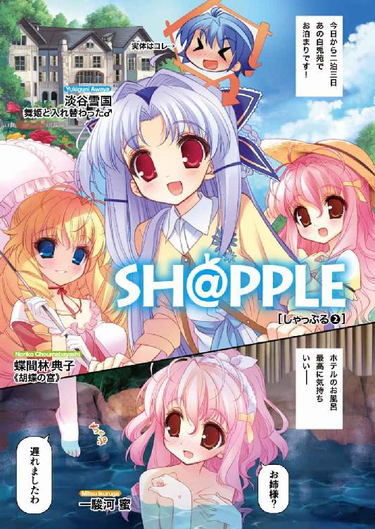

| SH@PPLE-しゃっぷる-(2) (富士見ファンタジア文庫) | |
| 竹岡 葉月 & よう太 | |
| 富士見書房 (2011) | |


本作品の全部または一部を無断で複製、転載、配信、送信したり、ホームページ上に転載することを禁止します。また、本作品の内容を無断で改変、改ざん等を行うことも禁止します。
本作品購入時にご承諾いただいた規約により、有償・無償にかかわらず本作品を第三者に譲渡することはできません。
本作品を示すサムネイルなどのイメージ画像は、再ダウンロード時に予告なく変更される場合があります。
本作品は縦書きでレイアウトされています。
また、ご覧になるリーディングシステムにより、表示の差が認められることがあります。
口絵・本文イラスト よう太
第１章 思惑は湯煙とともに
もうどうなっても知らないぞ。
淡谷雪国が言うところそれは、避けようがない状況ではあった。
深夜の暗闇の中、少年はきつくきつく閉じていた目を開け直す。ああ現実はなにも変わっちゃいない。同じベッドに同じ布団。こちらに寄り添い、横向きに寝息をたてる彼女。蝶間林典子さん。
青美女学院内でも『完璧』と称される華麗な美貌は、間近で見てもいっそう──いや、余計に多めに際だって見える。
（まって。ちょっとまって）
考えてもみろ。ふっくらした唇から喉元、そして鎖骨から下へと目線をおろして行けば、否が応でも浴衣のはだけが目に入る。それはもうダムのようにせき止められる。色即是空、色即是空、頭の中で般若心経が流れだす。しっとりときめの細かい湯上がりの肌の、なんと悩ましくも扇情的なことだろう。
なによりもその、こう、ぐぐっと横向きの重力に押しつぶされて、余計に深く谷間を作ったダイナマイトなバストが、かろうじて布にひっかかっている感じでシーツに皺を作っているのだ。
発破の瞬間はもうすぐそこ。そうとも触るまでもない。ここで雪国が布団を引く真似でもすれば──たぶん、全部みえる。
めりめりというよりノミで砕き壊すような気分で寝返りを打てば、さらなる地獄がカモンベイビー。
「ん......」
甘い寝言が理性を砕く。
本当にかんべんしてほしい。ふんわり砂糖の綿菓子のようなウェービーヘアが、雪国の頰をくすぐってくる。細くやわらかな髪質は、まるで子猫か子ウサギだ。
おまけにいい夢でも見ているのか、眠る少女は微笑んでいた。目を閉じたまま口許をもこもこ動かして、せんぱい、と舌っ足らずにつぶやいている。
そうしてうっとりと安心しきって体を寄せる寝顔の主は、一駿河蜜。片思いの相手に他ならないのだ。
なにを。いったいこの状況でなにをすればいいというのですか。していいんですかダメなんですかどうなんですか。
二泊三日。楽しいはずの兎羽山旅行。
「しぬ......」
でもね、僕だって限界があるんです。ちょっとぐらいなら許してくれませんか。
雪国は、意を決したように腕をのばし──。
＊＊＊
──一週間前。空舟市、蝶間林邸。
かの蝶間林泰三は、今年七十になる男だ。
江戸時代の商家を緒とする蝶間林グループの会長として、Ｎ県内のみならず日本経済にひとかたならぬ影響を与えている財界人である。
恰幅よく、酒と葉巻を好み、なお頑健だ。
孫の典子にとっては、厳しくも尊敬できるお祖父様、という間柄になる。
泰三が休みの日には、決まって典子は散策につきあい、庭で日々の生活を報告するのが常だった。
「──なかなか、大変な一月だったそうだな。典子も」
池の水がさらさらと、梅雨の谷間の庭木を映して揺らぐ。お供の典子は、傍らでうなずいた。
「ええ、そうですわねお祖父様。あたくしもおどろきましたわ」
泰三が手を叩くと、芝の隅に眠っていた犬が、つぎつぎと寄ってくる。
どれも典子の腰よりも高い位置に頭が来る、大型犬のボルゾイだ。
ショードッグの繁殖は泰三の少なくない趣味の一つで、他県に専用の犬舎まで持っている。このボルゾイの兄弟たちも、チャンピオン犬の父と母から生まれ、輝かんばかりの毛並みを揺らしていた。
「秀幸君との婚約は破棄。これも変える気はないかね？」
「勧めてくださったお祖父様には申し訳ございませんが。そうですわね」
祖父の犬は、祖父にしか懐かない。これもまた昔から決まっていることだ。
泰三はすり寄る兄弟の鼻面をなで、空を仰いだ。
「そうか......まあ、嫌ならば仕方あるまい。あれは考えるかぎり、お前に一番ふさわしいと思っていたのだが......」
「毛並みの美しい犬は、良い血統にしか現れないのかもしれませんわ。お祖父様の大事なボルゾイたちと一緒。でも肝心な時に主やパートナーを守れないような犬を犬と呼べまして？ あたくし、犬以下の殿方を許嫁に迎えることなんてご免ですの」
泰三が笑った。
「手厳しいな典子は」
「もう決めましたの」
決めたのだ。
一時は空舟市内の女子を震えあがらせた連続通り魔事件──通称Ｓ・ザ・リッパーの犯行に、典子もまきこまれた一人だ。
気丈なふりをしたところで、怖いものは怖かった。そう、そんな足が震える出来事に、許嫁の『秀幸さん』はなんの役にもたたなかった。たたないどころか、人を置いて逃げ出すような真似までしてくれた。あの屈辱はもう忘れようがない。
「それなら、典子よ。かわりの男にあてはあるか？ お前が納得するにふさわしい男は」
「そうですわね──」
蝶間林典子は目を伏せた。
思い浮かんだのは、祖父の気に入るボルゾイとは、およそかけ離れた少年だ。
どちらかというと小柄で、線の細い、ともすれば少女と間違えそうな優しい面立ち。
それでもそらご祭の混乱の時には、誰より早く助けに入ってくれた。
「ふさわしいかどうかは、まだわかりませんわ。でも、気になる方はおりますの」
あの『若光の君』──青美女学院中等科の生徒会長、淡谷舞姫の、双子の弟だと聞いている。
「気になる、か......ならば典子よ、なおのことよく見定めなければならんな」
「ええ。あたくしもそう思っておりますの」
池の水面を見つめ、美貌の瞳を細める。
考えると胸が高鳴る。楽しみで、ほんの少し怖くもあった。
「まずは、近づくための足場を固めて参りますわ。ご心配なさらないでお祖父様。将を射んと欲すればのことわざじゃございませんけど......そのための準備もしておりますの」
「頼もしいな」
祖父の号令で、ボルゾイたちがいっせいに走りはじめた。
明日にでも結果は出てくるだろう。自分の読みが正しければ、週末はきっと──楽しい旅が待っている。
＊＊＊
そのとき雪国は、激しく面食らっていた。
時は放課後、場所は私立青美女学院。お嬢様エクスプレスの終着地とも呼ばれ、明治十八年の開校以来、あまたの乙女を育て送り出していった淑女の殿堂。それが青美女学院である。
そんな乙女の園の真ん中に、雪国はヅラとスカートを駆使してニセ乙女として通っている。中等科生徒会の『若光の君』として。あるいは双子の姉、『淡谷舞姫』の代わりとして。
過酷な女子校暮らしに慣れた雪国でも、理解できないことはあるのだ。
たとえば今。
「ええっと......あの、もう一度聞いてもいい？ 一駿河さん」
「ええ、いいですよ先輩。ご一緒に旅行へ行かれませんかってことです」
こちらの質問に、一駿河蜜はうなずいた。
雨上がりの庭園は、いつも通りに蜜との貸し切りだ。彼女は相変わらず、見ているだけでガラスケースにおさめたくなるような愛らしさだった。大きな瞳とふわふわの髪。華奢な指には半分まで食べかけたお総菜パンがおさまっているが気にしてはいけない。
ともかくその可憐なルックスも、微妙に可哀想な食べ物の趣味も、変わることなき一駿河蜜なのだが、言っていることだけがおかしかった。
蜜は、唇についたパンくずをはらう。
「ですからですね、典子お姉様のご指名なんです。先輩と蜜と三人で、週末は兎羽山まで参りませんかって」
「胡蝶の宮が......兎羽山に？」
「そうですよ。お知り合いの方が、あちらに温泉付きのプチホテルを開かれるんです。蜜はもともと、お供する予定ですけど。先輩はどうされます？」
「ど、どうって......僕もなの？」
「ええ。理由は蜜にも、さっぱりわかりませんけど。本当にぜんぜんさっぱりですけど。でも先輩ならおわかりになるんですよね？ ね？ そうなんですよね先輩？」
わかんないってぜんぜん。
素直に答えるのをためらうほど、微笑む蜜は曇りなく、なぜだかものすごく怖かった。
──家に帰ったところで、やっぱりわからなかった。
（なんで？）
兎羽山。
空舟市からは、特急で一時間半ほどの距離にある温泉地だ。Ｎ県の人間にとっては交通の便もよく、雪国も子供の頃に何度か行ったことがある。
山間の木々は美しく、周辺には羽衣湖という名所もある。今度の金曜日は県民の日で休みだから、小旅行としゃれ込む人も多いだろう。
なんでもオープンするホテルのオーナーは、ニナ・ブライスさんというアメリカ国籍のピアニストなのだという。彼女はかねてから持っていた兎羽山の別荘を改築し、ホテルとして開放することに決めたらしい。
『胡蝶の宮』こと蝶間林典子は、蝶間林グループ会長の孫娘。日本におけるニナ・ブライスのスポンサー企業として縁が深く、ホテルのオープン記念パーティーに招待されているのだそうだ。
そして蜜もまた。
『お母様の代わりに行くんです。場違いかもしれませんけど、ご挨拶だけはしてこいと言われてしまいまして』
とのこと。
さすがは声楽家の娘さんというべきか。懇意にしているお母様の名代として、パーティーに呼ばれる立場にあるのだそうだ。
連休を使った温泉旅行で、行き先は共通の知人のお呼ばれで。そこにはなんの不思議も違和感もない。
もともと二人は、そろって同じ学院内の社交ソロリティに入っているのだ。メンバートップとそのお気に入りとして、二人の絆はなみの姉妹よりも深いと聞く。
わからないのはそう。
「......なんで一緒に僕なんだ？」
夕飯の八宝菜をぱくつきながら、思わずつぶやいてしまう。
「......ヘン。ヘンだよなあ......」
「......なんかあったかね、雪国」
食卓を囲む祖母がたずねてくるが、雪国はあいまいにうなずくしかない。
なにせあの学校での雪国は、生徒会の代表『若光の君』である。ソロリティの代表である胡蝶の宮とは、水と油の関係と言ってもいい。
彼女自身の人柄に不満はない。一見とっつき辛いが、心身ともに中学生離れしたスタイルは、男でなくてもため息が出るだろう。そらご祭を通過点にして、二大勢力の交流もはじまりかけている。しかし、いきなりプライベートで名指しされる理由があるだろうか。
（なんか一駿河さんは機嫌悪かったし......）
みそ汁をずずっと飲み込む。
やはり、あれだろうか。蜜は大好きなお姉様と水入らずで遊びに行きたかったのに、先輩たらひどいとか、そういうやつだろうか。それは少し悲しい。
だって考えてもみろ。そもそも女装してまで青美に潜入することになったのは、みな蜜に近づきたかったからなのだから。
そらご祭の時は、本当にあと少しだった。カツラもスカートも外したリアル雪国の恰好を目撃されておきながら、出てきた結論は『男装した舞姫』という悲しいもの。あと一歩。もうあと一歩のご支援が足らなかったばかりに、誤解をとくことができなかった。
蜜と兎羽山。綺麗な景色。目線は自然と天井へ。隣り合う電車の席。想像の翼は広がる。
もちろん駅弁のおかずは交換こだ。酔いやすい蜜に肩を貸してしまったりして。「ごめんなさい先輩」「気にしないで一駿河さん」「先輩の隣、あったかい......」宿についた後はお手々つないで散策して、夜はあははうふふと温泉卓球──。
「........................っ！」
雪国、箸を握って感動に震える。いい。最高だ。最高じゃないか。想像するだけで泣きが入る。
最後の方の映像が、完全に男女のそれになってしまっているのもこのさい無視だ。
（そうだよ。これって実はチャンスなんじゃないの？）
少なくとも連休の三日間は、四六時中一緒にいられるのだ。その間に自分が男であることを説明することぐらいできるのではないか？
妄想を現実にするのだ。いけやれ雪国。一駿河さんの浴衣姿を見るのだ。そこだ雪国。がんばれ雪国。淡谷雪国十四歳──。
「かあ──っ！」
べしょっと。
問答無用で布巾を放られた。
「............ななな、なにすんのさおばあちゃん！」
ちょっぴり味噌汁くさかったやつを、顔面に。
「なにすんのはこっちのセリフさ馬鹿もんが！ 八宝菜食いながらウニウニ百面相してんじゃないよ気持ち悪いっ」
「僕が作ったおかずをどう食べようが勝手でしょうが！」
「『まなー』ってもんを覚えな『まなー』ってもんを！」
「あー、夜中にトマトジュースすすってイヒイヒ雄叫びあげてる人に言われたくない！」
「ありゃイマジネーションの発露ってやつさ。ほんとに細かい子だね少しは舞姫の方を見習って」
「おかわり」
ドンと。
空気を読まずに突き出された『丼』一丁。
双子の姉、淡谷舞姫だった。
祖母はなんとなく布巾をたたみ直し、雪国は言われた通りに空のドンブリに白飯を盛る。
「......いやまあ、よく食べるね舞姫も」
受け取る端から黙々と食べはじめる舞姫に、祖母が呆れ半分、おどろき半分にたずねている。
「......今日、体育でつかれたから。お腹へった」
「へえ。なにしたんだい」
「サッカー」
「最近は女の子もやるんだねえ。なでしこジャパンってやつかい」
「女子はバレーボールやってた」
「わーわーわーわーわー！」
思わず叫んでしまう。祖母がぎろりと睨むが、構っていられない。
雪国がヅラをかぶって青美女学院に通っているように、舞姫は髪を切って空舟第五中に通っているのだ。もちろん、男子生徒の『淡谷雪国』として。
このロングヘアの楚々としたお嬢様の顔は、すべて祖母の菜穂子へのカモフラージュだ。地毛はすっかりショートカットが板についてしまっている。
舞ちゃんの馬鹿とガンたれていると、リビングで電話が鳴った。
祖母は素早かった。
「──あたしゃあ、留守さ！ そう言っといとくれイエーアー！」
着ている着物の裾が乱れるのも構わずに、脱兎のごとく逃げていく。
「......ユキグニ、出る？」
「まあ、居留守すんのもあれだしね......」
どうせ相手は出版社からなのだ。
リンリン電話を鳴らせる祖母の仕事は、大衆向けの推理作家。トリックよりも被害者の死にっぷりに定評があるらしい。
祖母は風呂場で人を解体中につき出られません──。
言い訳を頭の中で考えながら、受話器を取る。
「はい、淡谷で──」
『きゃ────────────────────────────────っ！』
ここで鼓膜を半分潰された。
『あ、あ、淡谷くん？ 淡谷くんだよね？ ね？ ね？ そうだよねそうだよね？』
「......いやあの、きみだれ......」
『昼間にいいいい、昼間にみてたのおおおお。サッカー。シュート。シュート。超シュートおおおお』
「は？ シュート？」
『すっごいかっこよくてえ。コートの向こうに見えて。なんかあたし感動しちゃって。えっとそれでそれでー』
『ああもう貸してリカ！』
声が横からわりこんだ。
『でもミナあああ！』
『わたしもー！ わたしも言いたい！ ねーねーあわやくーん！』
ここからまた、どんどん喋る人間が増えていくのだ。
『ちょっとやめて』『押さないで』『ケータイ。あたしのとらないでよおおおお』『とにかくあたしは』『わたしもー』『す、す、す、好きな』『ゆっこじゃないでしょ』『だってあたし』『ほらもう淡谷くん聞いてるよ』『言うなら早くしてええええ』『ほら』『でも』『じゃあ一緒に』『せーのおおおおお』
『『『『『淡谷くん、これからもがんばってね！』』』』』
要約すると、だいたいそんな感じだった。
「....................................ああ、うん。あの。ありがとね......」
ぅきゃー、きゃーきゃー、うきゃきゃきゃきゃー、としか言いようのない歓声と悲鳴を聞きながら、思った。
......やはり、早急になんとかしよう。モテキング舞ちゃんが全校の女子をたらしこむ前に。五中に自分の居場所がなくなる前に。
＊＊＊
同じ頃、一駿河蜜は考えていた。
夕食を終え、自室のベッドに横たわりながら、昼間のやりとりを。
（淡谷先輩、すごくおどろいた顔してた）
──旅行に行きませんか？
こちらからの申し出に、優しげな瞳を見開いて、考えるように目を伏せて。あれはたぶん、はじめて聞いた話だったのだ。
たぶん、それで間違いない。
「......でも」
同時に思うのだ。ねえ先輩、本当にはじめてだったの？ と。
ベッドの上をころりと転がる。なにせ蜜がよく知らないところで、生徒会の『若光の君』と、ソロリティの『胡蝶の宮』は、つながっている節がある。
学院のトップ同士。輝かしい人気を二分し、反目し合う立場にありながら、裏に流れているのは信頼だ。蜜には決して立ち入れない。あの時の反応だって、もしかしたら蜜のための演技だったのかもしれない。
そらご祭の時は、男装した恰好のまま、真っ先に胡蝶の宮を助けに入っていたぐらいだ。
（あれを先輩だって知ってるの、きっと蜜だけだわ）
そんな秘密の共有に優越感を覚えるのは、ほんの一瞬。あとに残るのは、手の届かない完璧な一対を前に、口を閉じるしかない年下の自分だ。
どうして胡蝶の宮は、先輩を兎羽山に誘おうなんて言い出したのだろう。
「......清野」
「なんですか、お嬢様」
「蜜は、やっぱり旅行には行かないわ」
枕を抱えながら、つぶやく。
蜜が生まれる前から一駿河家で働く家政婦の清野は、ある意味母親よりも近しい存在だ。
こうして部屋に並んだ南米グッズに眉をひそめるのも彼女だし、帰国後の蜜がすっかり小食になってしまったのを心配するのも彼女だ。実際は食べられるものの質が変わってしまっただけにしても、今もふっくら洋梨型の体型をゆらゆら動かし、蜜の夏服にブラシをかけている。
「聞いてるの？」
「聞いておりますよ。お嬢様のわがままでございますね。行かれないなんて、そういう訳にもまいりませんよ」
「でも」
「ブライス様は奥様とご懇意の間柄でございますよ？ 蝶間林様もお嬢様がご挨拶にうかがうと申しますから典子様を名代にしたのだとうかがっておりますのに」
「......それは、わかってるけど......」
「一度お会いしたこともございますでしょう。旦那様はお気になさらないにしても、奥様の面目を潰すような真似はおよしくださいましね」
「お父様の悪口は言わないで」
清野は、日本にすら居着かない父より、まだ家にいる回数が多い母の味方なのだ。
（だいたいなによ）
会ったことがあると言われても、もう十年近く前だ。まだ父親と渡米する前、ニナ・ブライスの私的な別荘だった『白兎苑』へ、母と一緒に招かれたことがある。
彼女の演奏は、今もオーディオデッキから流れている。コンサートでもなじみ深いし、あの時の別荘にまた行けるのはとてもうれしい。
だけど、そこに淡谷舞姫が加わるとするなら、どうしていいかわからない。
旅行先にまで行って、のけものにされてしまうのは、嫌だ。
「ほらお嬢様。行きのお召し物は、こちらのワンピースなんていかがですか？」
蜜は悲鳴をあげたくなった。
「や、やめて！ なんでそんな子供っぽい服着なきゃいけないの。笑われるだけじゃない」
「よくお似合いですのに」
「いつの話をしてるの。だから清野はだめなのよ。それだったら白いブラウスの方がましよ。まだ並んでも見劣りがしな──」
「どなたか、誉めていただきたい方でも？」
必死にベッドから飛び降りてしまった蜜は、うっと口をとじた。
「ほほほ。典子様は、それはおきれいな方でございますものね。真似をされたくなるのは清野も理解できますが、お嬢様にはお嬢様の可愛らしさがおありになると清野は思いますよ？」
「......べつに、そういうんじゃなくて......」
そう。そういうのではない。
なにせ胡蝶の宮はいろいろと完璧すぎて、スタイルも性格も大人すぎて、尊敬はしても真似できるとは思えないのだ。
それでもせめて、お姉様の隣に並んだ蜜を見て、あの人に苦笑されない程度の恰好ぐらいはしておきたいというか──。
「か、関係ないし！」
自分はいったい誰を基準に物を考えているのだろう。
のけものだなんだとぐるぐる悩んでいるのも馬鹿みたいだし、チェストの服を引っ張り出して向こうの反応を想像している姿なんて滑稽そのものだ。自分はいつものように蜜姫になり、一駿河蜜としての義務をはたすだけ。それだけだろう。
「いい清野、そのワンピースだけはやめてよね」
「はいはい」
「リボンは白がいいから。レースの皺になりにくいのがいくつかあったわよね」
「はいはい」
「でもボレロがこっちの地味なやつだったら、そのワンピースでも大丈夫だったりする？」
「はいはい」
「ねえ清野。真面目に答えて！」
その間もスピーカーからは、優しいピアノの調べが響き続けた。
＊＊＊
「......ユキグニ、変なんだ」
ぽつりとつぶやくと、部室の面々は不思議そうに振り返った。
「......淡谷弟が、どうかしたかね兄貴よ」
そこは空舟第五中学の旧校舎。
二階の一番奥の教室は、舞姫たちの貸し切りだ。
リーダーの芝目夏彦は、隅のデスクでノートパソコンにはりつき、構成員の大道寺と豆坂は、怪しい組み手のまねごとをして遊んでいる。外はじっとりと梅雨空。舞姫もまた、座敷の畳の上で、ガンダムホルスタインに不思議な踊りを踊らせていた。
いつも通りの、ちょっぴり退屈で手持ちぶさたな放課後だ。
空舟エンジョイ委員会。通称ＳＥＣ。
あるいは、秘密の相談サイト《魔法使いの卵》の管理人たち。
空舟市内の美少女を、つかず離れず遠くから密かに見守ろうというけったいな同好会だが、あれやこれやと彼らとつるむようになってずいぶんたつ。
女だとばれているにもかかわらず、いまだに舞姫のあだ名は『名誉兄貴』だ。
「なんか......隠し事でもしてるみたいに見える」
「それは兄貴よ。いっくら兄貴たちが仲良き双子の姉弟とはいえ、隠し事の一つぐらいするだろう」
「そうすよ兄貴。男なら秘める野望の一つや二つ。いやいや三つや四つ五つや六つ。普通にあるってもんす。だよなあマメ」
大道寺も豆坂を見上げた。無口な豆坂もまた、こくこくとだまってうなずいている。そういうものだろうか。
「そうかな......そうなんだけどさ......」
「そんなことより兄貴、週末はどっか女子校の文化祭か体育祭にでも──」
「......でもさ、部屋に『るるぶ』があったんだ」
「はあ？ るるぶ？ 旅行雑誌？」
「週末はユキグニ、ガーデニングショーに行くって言ってる。受験で最後になるし、一人で泊まって帰ってくるって」
「ならばその下調べであろう。なんの問題もない」
「ガーデニングショーって兎羽山にあるの？」
とにかく変なのだ。
祖母の菜穂子に布巾を投げつけられたあたりからこちら、作る料理は毎日やたら豪華だし、こちらがうっかり薔薇の鉢を蹴飛ばしてしまった時も、ちょっと涙目になったぐらいでちっとも怒らなかった。いつもならそう、こちらが寝るまで文句をたれているか、寝てても文句をたれ続けているのが弟のはずである。そのくせ布団の中でこぼす寝言は「行け、やるぞやるぞ逃げちゃダメだ」と、いったい何に追い詰められているのだろう。
「──やる？ 逃げちゃダメ？」
「そう。あと私服がちょっとなくなってる。洗濯物を取り込むついでみたいに、ボクの普段着」
「そりゃつまり......」
「女物、だと思う」
ＳＥＣの面々が、一気に動きを止めた。なぜかシリアスに瞳を光らせ、お座敷の上に集まってくる。
ノートパソコンを抱えた芝目が、ちゃぶ台の前で口火を切った。
「......いま、ネットで軽く調べてみた。現在日本国内で開かれているガーデニングショーと名がつくイベントは、Ｓ県とＭ県とＫ県」
びしびしびし、と液晶画面の上を指摘していく。
「うちＭ県とＫ県は地理的に外れすぎ。Ｓ県もまた兎羽山とは縁もゆかりもない」
「しかも淡谷弟は、兄貴に黙って兄貴の服を持ち出そうともくろんでいるっす」
「淡谷雪国の趣味はなんだ。園芸だ。渋かろうが地味かろうが、これはすでに周知の事実。今さら隠し立てをする必要はない。なぜ兎羽山の旅行ガイドを隠し持ち、女装の準備までする必要がある？」
「......ガーデニングショーが噓で、女装で兎羽山行きが本命だから」
なにげない舞姫の指摘に。
「その通り！」
芝目、人差し指をたてる。
「おそらく淡谷弟は、女の恰好で旅行にでも行く気なのだろう。相手は青美女学院の誰か！」
「うわなんてこった！」
「......べつに、そんなの隠す必要」
「あまあい！」
ばんとちゃぶ台をひっぱたかれ、舞姫はきょとんと背筋をのばした。
「いいか。これはＳＥＣ会長としての忠告だ。淡谷弟は女装して青美に通っているとしても、その身分にあまんじているとは思えない。いつかどこかで、男の自分を知らしめたいと思っているに違いないのだ！」
「おう！」
「野生の王国の扉よ開け！ いざ勝負のとき！」
「男の......知らしめ......」
そう言われても、いまいちよくわからない舞姫だ。
一応、一駿河蜜に片思いしているらしいことは知っているが、あのふわふわお人好しの雪国が？ 野生のウサギかムツゴロウさんがせいぜいでは？
三人はすっかり盛り上がってしまっている。
「まずは兎羽山へのルートを確認っすよ」
「かわされると面倒であるからな」
「へたに隠すからこうなるんすよね......」
「恨むなら己のうかつさを恨め淡谷雪国......」
「そう簡単に大人の階段は」
「登らせてやるか」
「ククク......」
「ヒヒヒ......」
「......だから、勝負ってなに？」
これはもう、なにがなんでも真相を探るしかない。そういう目になってしまっているのはたしかだった。
＊＊＊
「......ええ。全部で三人になりました。一人追加でお願いできますか？ ミズ・ニナ」
『もちろんよノリコ。お友達がいるのは素敵なことね。準備してお待ちしているわ』
「ありがとうございます」
蝶間林典子は礼を言った。落ち着いたニナ・ブライスの声音の中に、微笑みがまじっている。受話器の向こうの彼女は嬉しそうだった。
以前に蝶間林のパーティーや演奏会の席で顔を合わせた時は、ホテル計画などまるで聞いていなかった。親日家を自称してはばからない彼女だったが、まさか別荘の白兎苑を改装するとまでは思わなかった口だ。
『マネージャーがね、言っていたの。ラッキーよ。今週末は雨が降らないんですって。こういうのを〝日頃の行いがいい〟っていうのかしら』
「紫陽花も綺麗なんでしょうね」
『絵の具をまいたみたいよ』
「まあ」
バスローブの襟を直し、蝶間林典子は続けた。
「楽しみです」
『ちょっと待って。いまエリスが近くにいるの。挨拶させるから......あら？』
椅子から立ち上がる気配がするが、そのまま止まってしまう。どうかしたのだろうか。
「......ミズ・ニナ？ どうされました？」
『..................え、ええ。そうね。ごめんなさい。逃げられてしまったみたい』
たしかエリスというのは、彼女の一人娘のはずだ。病弱でおとなしい娘らしく、あまり国内外の演奏活動についてくることはなかったはず。今回は彼女も一緒に来ているらしい。
（......あたくしが口を挟むことでもないのかもしれないわね）
こういう時、まわりのつまらない噂も耳にとめてしまう自分が嫌になる。
国際的な人気ピアニストの、突然のホテル開業宣言。ただでさえ説明のつきにくいシチュエーションだ。だからこそある人は、ここで現役引退宣言が飛び出すのではないかと口にしていたし、娘のエリスにからめて、もっとくだらない噂をまことしやかに囁く紳士もいた。
無粋な話だった。
落ち着いている、できた人間だと言われたところで、実際は人の反応や他人の期待を無視できないだけなのではないかと思わなくもないのだ。噂を囁いていた彼らのように。
『とにかくね、週末にお会いするのを楽しみにしているわ。私も、エリスも──』
「ええ。あたくしもです」
典子は胸のざわめきをおさえ、それだけを言った。たぶん、ここで一番無難で、間違いのないことを。
そしてふと思った。
本音をこぼして許されるのは、あの淡谷舞姫に対してぐらいなのかもしれない。
＊＊＊
決戦。
それは週末──淡谷雪国は駅近くのコーヒーショップに飛び込んで、トイレの内側からしっかり鍵をしめた。
男女兼用で、洗面所まで自由に使える場所はそう多くないのだ。
まずは持ち込んだスポーツバッグを便座の上に置くと、手早くジッパーを開ける。中から引っ張り出すは、女物のシャツワンピースと七分袖のカーディガンだ。
（よかった。シワ寄ってない）
出がけに着ていたポロシャツを脱いで、かわりにこっちを着込んでいく。
制服以外の私服の着こなしなど、いまだに雪国はよくわからない。今回にかぎっては舞姫の助言は得られないし、舞姫が以前に着ていたスタイルを思い出しながら服をくすねてみたが、どうだろう。
「ジーンズ......は。はいててもいい？」
こんなところでつまずいてしまう。
スカートの下にジーンズ。生足が出ないのは安心感があるし、着こなしの一部としてそういうのもアリとは聞いているが、やめよう。崩しや重ね着で勝負できるほどのオシャレセンスなど、お母さんのお腹の中に置いてきた。おとなしく脱いでワンピース一枚にしておけ。
右合わせのボタンをとめ、服の色味にあわせる形で踵の低いバレエシューズ。
最後に、ヅラのスペアをかぽりとかぶる。
洗面所の鏡に映っているのは、どこからどう見ても『淡谷舞姫・休日仕様』だ。
「............よし」
淡谷雪国、変身完了。
あとは脱いだ男物を別の鞄にしまって、駅ビルのロッカーにつっこんでおけばＯＫ。家族は誰も旅行に気づくまい。
えいさと二つぶんの鞄を抱えた雪国は、勇んで扉をあけた。しかし目の前にいたのは、けっこうな順番待ちの列だった。
「あ」
──まずい。時間をかけすぎたか。あわてて頭をさげ、列をすり抜けるが。
（ちょっと待て？）
一番前。いままさにトイレに入ろうとドアノブに手をかけている男子。おまえだ。年にして高校生ぐらいの奴。
雪国は、逆回しのバックステップで元の位置に戻ると、そのまま高校生ごとトイレへ駆け込んだ。
「ええ！」
「なに！」
「連れ込み!?」
「逆ナン!?」
ドアの向こうでセンセーショナルな声があがっているがこのさい無視だ。
なによりこの男、見るからにもてるというか女子に詳しそうなのだ。いまの恰好を判断してくれるのはこいつしかいない。
「あ、あのさ君──いきなり何──」
「あの、僕へんじゃありませんか!?」
「は？」
「どこもおかしくないですか!?」
ずずいと近づき、両手を広げる。茶髪の高校生は完全に絶句していた。狭い洗面所内でぶつかりそうになりながら全身を見せ、今度は一回転。シャツワンピースの裾が揺れ、至近距離でじっと見上げると、なぜか高校生の頰が赤くなった。
「どうですか!?」
「いや......普通にいけてるんじゃ......ないかと......」
「よっしゃあ！」
雄叫び。ガッツポーズ。
「あ、あのさ。よかったら......ケータイの番号とか交換しても......」
雪国は無論無視してトイレを出た。
「あ、一人だけ出てきた」
「交渉決裂？」
「というか捨てられた？」
「うわかわいそ男子」
個室に取り残された男子高校生には、かなり不名誉な視線がそそがれたという。
待ち合わせの場所は、駅の改札だった。
雪国の想像した通り、県民の日の空舟駅は、かなりの人混みだ。旅行鞄を抱えたまま、そろそろとぶつからないように歩きながら、目的の人を捜した。
しかし、一度でも捜し出せるか心配していた自分が馬鹿だったようだ。
まったく──苦笑してしまう。わざわざ捜し回るまでもない。どうしてどこで何をしていようが、勝手に目に入ってきてしまうのだろう。
「一駿河さん」
柱の陰で振り返る一駿河蜜。彼女はあっと小さくつぶやくやいなや、大きな瞳を見開いた。
「──えっ、えとえと、なんか早くないですかとっても！ だってまだ十五分は時間あって──いえもちろん蜜はたまたま着いちゃっただけなんですけど。ほんとにたまたまなんですけど。もう一回ぐらいお化粧室行くつもりだったのになんで──」
「うん。なんか楽しみだったから、早く来ちゃったんだ」
蜜の顔が、一気に赤くなった。
「........................のんきすぎですよね先輩は」
「可愛いね、私服」
どうしても頰がゆるんでしまうのだ。
今日の彼女は、丈の短いボレロと細かなチェックのミニスカートという組み合わせだった。
スカートもブラウスもレースやフリルを多用し、ともすれば子供服になってしまいそうだが、なにより彼女によく似合っているし、仕立てもいいのでそれほど甘く見えずにすんでいる。脇に引いた旅行カートの配置も絶妙で、アリスの不思議な旅でもはじまりそうだ。
しげしげ眺める雪国の顔を見ていられないように、蜜は目を伏せた。
「......べつに、普通ですよ。あったものを着ただけで......」
「へえ。そうなんだ」
それでこの可愛さはすごい。
「ひょっとして本気で適当だって思ってます!?」
「え、じゃあがんばったの？」
「ちがいます！」
なぜだかものすごくがんばって叫ばれてしまった。
「胡蝶の宮は──まだ来てないよね」
「こちらにはいらっしゃいませんよ。北空舟駅から合流されるそうです」
「え、そうなの──」
「もう。聞いてなかったんですか──」
そしてそんな二人のやりとりを、遠く眺める集団があった。
＊＊＊
「......ふふふ。なるほど。やはりそうか......了解。すぐに合流する。そのまま監視を続けてくれたまえひーほー」
らじゃっすひーほー！
軽快に復唱する声が、携帯越しに聞こえてくる。報告の主は、大道寺のようだ。芝目はそのまま通話を切った。
駅前のファーストフード店に待機していた手前、すぐにカバンを持って移動がはじまった。舞姫は芝目を見上げる。
「兄貴。やはりこっちの読みがあたったようだ。淡谷弟は電車で移動するつもりらしい。一駿河蜜と」
「ほんとに......？」
自動ドアが開く。止まらず歩きながら、すばやく別の番号を呼び出す芝目。
「豆坂構成員！ 切符の確保はできそうかね！ なに満席？ かまわん！ 自由席で追いかける！」
ばしっと通話終了。
「問題なし！」
カッと糸目を見開く芝目の横顔は、地味でもアドレナリン全開だ。
「ほんとに追いかけるの？」
「兄貴は良いのか？ あのまま好きにさせておいて」
「..................よくわからない」
「ふはは。ははは。誰が自由になどさせてやるものか」
そもそも二人の恋の橋渡しを頼んだのは舞姫だし、協力してくれたのは芝目たちではないだろうか。
間違っているのは自分か向こうか。女の子の気持ちもわからないが、男の子はもっとわからない──そんな瞬間だった。
このまま三人についていけば、なにか答えは出るだろうか。
「──ＳＥＣ淡谷雪国監視合宿in兎羽山、ここに始動！」
＊＊＊
「ええっと一駿河さん。お菓子買おうかお菓子。ほらキオスクがあるよ。安いやついっぱい買っちゃおうか今のうちに」
「......ほんとに楽しそうですね先輩」
幕間
我が輩の名はマリー。ネコのぬいぐるみだ。
立派なオスなのに、メス猫の名前をつけられている。生まれはニューヨーク州。パパさんがお土産に買ってきた。
ご主人は今もお怒りだ。
知らない庭の垣根を乗り越え、藪の間をずずんずんずんかきわけながら、我が輩のしっぽをつかんで引きずっているけど、これからいったいどうなることやら。
「そうよ。もうしらない。かえってなんかあげないんだから」
ぷっくりふくらみきったほっぺ。
「あめりかなんて、ぜったいイヤ。イヤったらイヤよ」
そうなのか？
「魔法少女プリンちゃんもみれないのよ」
それは困る。プリンちゃんは我が英雄なのだ。
「いいマリー。ままが『わかったわ、ごめんなさい』っておもうまでは、あたしたちあそこにはかえらないのよ。ぜったいぜったい、約束よ。いい？」
しかしご主人。せめて道のある場所を歩こうではないか。
立派な別荘をあとにして、目の前にあるのは笹の葉ばかり。
......無論、我が輩は知らなかった。
この無謀なる山中の冒険が、我が輩とご主人の最大の危機になるなんて。
「ぱぱもままも、みんなみんなだいっきらい────────────────っ！」
うきゃっ。
......ご主人。もうこけましたか。
第２章 お宿にまつわるエトセトラ
指定席のボックスシートに、まずは向き合って座ることになった。
「一駿河さん。荷物、上にあげるのある？ 一緒にあげちゃうよ？」
「あ、大丈夫です。カートですから」
「そっか。じゃあ僕のだけだね」
手伝いますと言ってくれるけど、届くだろうか一駿河さんで。
思わず網棚と一駿河さんの間の距離を見比べてしまうと、ものすごい勢いで睨まれた。わざわざ背伸びしながら一人で鞄を網棚へ押し込んでくれる。
「......ええっと、その、ありがとね」
「いいええっ」
──カタン。
思ったとたんに、列車が大きく動きだす。
「きゃ」
言わんこっちゃない。蜜の悲鳴に反応する暇もなかった。網棚に向かって背伸びの途中だった彼女は、見事にバランスを崩して尻餅をつくはめになった。
場所は床ではなく、こう、ぽふっと雪国の膝の上にだが。
「........................」
「........................」
場所が場所だけに、すさまじい沈黙がおりた。あまりの衝撃に、両者ともに身動きが取れない。
そうしている間にも、一駿河蜜の体重というか太ももや小ぶりな尻の重みがスカート越しに伝わってくる。軽いような重いような。
「..............................あ、あ、あ、すみません失礼しました！」
文字通り飛び上がる勢いで立ち上がり、斜め向かいに腰掛ける蜜。もう限界ぎりぎりまで距離をとった恰好だ。
真っ赤になって恥じ入る蜜だが、雪国としては幸せをかみしめていた。ごめんなさい一駿河さん。でも断らなくて本当によかった。ありがとう兎羽山。ありがとう県民の日。
「さいてい......」
「......でもさ、いいよね電車の旅って」
「そ、そうですか？」
むくれてスカートの裾を引っ張っている蜜に、雪国はなんてことないよう微笑んだ。
「そうだよ。なんか出発するって感じがするし。レールが目的地まで必ず続いてるのも楽しいし。運転手さんの指さし確認はかっこいいしさ。はじめて兎羽山行った時もこの急行だったんだよね。新幹線でもないのに親にいっぱい写真とってもらったの覚えてるよ」
カタン、カタンと、車輪の振動が足もとから伝わってくる。
あのときの旅行の写真、どこにしまっただろう。たしか最後はやたらめったら叱られたことしか覚えていない。幼稚園ぐらいだろうか。
「そういうものですか......？」
「うん。楽しかったと思うよ。舞ちゃんと二人で先頭まで見にいったりしてさ......っとと、ごめん。僕はしゃぎすぎ？」
「......べつに、いいですよ。電車がお好きなのは意外ですけど」
うっかり口をすべらせたところに反応されなければいいと思うものの、蜜は気にしていないようだった。
そむけた顔はそのままに、つぶやく声はおだやかだからほっとする。
「そうですか。それなら......蜜もいっぱい乗れば良かったですね。旅行はいつも飛行機か車ですからわかりませんでした」
「い、いやもちろん！ 電車だけじゃないよ！ 旅行自体も楽しみだよ！」
「どうでしょうね」
「ほんとに。ほんとに楽しみだったんだって。昨日なんて眠れなかったぐらいだよ。一駿河さんと、蝶間林さんと、一緒に遊びにいけるって思ってさ──」
車輪がレールの切れ目を通るたび、わずかに視界が揺れていく。
こちらがいつまでも言葉を切ってなにも言わないものだから、彼女もまた、雪国の顔を見返すことになった。
指定席のボックスシート。膝をつき合わせるほどでないにしても、その距離はとても近い。
どこへ逃げるでもない距離感は、まさに走る密室と言ってよく、ここを外して目的を達せるとは思えなかった。
「......あのね、一駿河さん」
「な、なんですか？」
「ちょっと、黙って聞いてほしいことがあるんだ」
「え......？」
心臓の鼓動が、外へ漏れ出ていないことを願う。
膝にのせた拳に力をこめる。淡谷雪国、一世一代の覚悟だった。向かいに座る蜜の頰が、また心なしか赤くなったような気がしないでもない。
さあやれ。言え。言ってしまえ淡谷雪国。
「......本当は、今さら、こんなこと言うのは卑怯かもしれないんだけど」
前振りはいいから。だから。
「でも、どうしても言っておかなきゃいけないっていうか。実は僕、お、お、お」
男なんです、と言おうとした。
「──まあ。仲良く内緒話ですの？」
決意は端から崩れ落ちた。
「お、お姉様！」
蜜が叫んで口をおさえる。
蝶間林典子は、座席の後ろからのぞき込むように顔を出していた。学院内ではあまり見せない稚気をのぞかせ、淡く微笑みながら回り込む。
「楽しいお話なら、あたくしも交ぜてくださらない？」
「もう。ひどいです。びっくりさせないでくださいお姉様──」
びっくりさせるなこんちくしょうめ。
雪国もやさぐれた気分で振り仰げば、もう北空舟駅だったようだ。気合いを入れただけ損というか、ちょっと座席で丸くなりたかった。
「ごきげんよう、舞姫さん。これから三日間、よろしくお願いいたしますわね」
「ええ、こちらこそ......」
本日の蝶間林典子は、光沢のあるシャンパンゴールドのサマーセーターと、オフホワイトのマーメイドスカートという避暑地スタイルだった。さりげなく首もとを彩るプチダイヤのネックレス。時計はブルガリ。十センチヒールのパンプスで兎羽山に繰り出す人間というのを、あいにく雪国は見たことがない。メーカーがフェラガモ様と聞けばまた違った実感がわくだろう。
蜜も雪国も、網棚に荷物を乗せている胡蝶の宮の艶姿に釘付けになってしまった。
「......お姉様って、なんでああなんでしょう......」
「だよね......」
蜜はおそらく、その隙のないセレブなファッションに。
雪国もまた。
（中三なのに揺れすぎだよ、胸）
網棚に手荷物を押し込むたび、伸縮素材のニットを押し上げる丸いふくらみがゆさゆさしていて、気になってしょうがない。
「......なんかもう、ぜんぜんダメじゃないの......」
よそ見が激しすぎて、蜜の絞り出すようなつぶやきを、雪国はつい聞き逃してしまった。
そのまま胡蝶の宮が蜜を移動させて通路側に座り、電車が走りだす。
加速していく車内でも、彼女の華やいだ美貌は別格だった。
「それで、蜜と舞姫さんは、なんのお話をしてらしたの？」
蜜が言った。
「......先輩が、お姉様の話を」
「まあ、そうなの？」
ちょっと待て、と雪国は蜜を見る。
「お姉様と旅行に行かれるのが楽しみだと」
抜けている。明らかに蜜の名前が抜けている。
「本当？ 嬉しいわ。ぶしつけなお誘いで心配しておりましたの」
微笑む典子に反比例して、蜜の頭がさがっていく。なにか今にもお通夜の鐘が鳴り響きそうな勢いでさがっていく。そのくせうつむいた髪の内側では、よりぐるぐると色んなものが渦を巻いている感じもする。
「あ、あの、蝶間林さん」
「なんですの」
「そもそも......なんで僕を誘ってくれたんですか？」
探りを入れるつもりで、低めに球を投げてみる。
青美女学院内でも立場を分ける自分に、わざわざ声をかけてくれる理由がわからないのだ。
「そうですわね......強いていうなら......」
「強いていうなら？」
「あなたとお近づきになりたかったの。学院の中では無理なぐらいに」
ピッチャー返しか！
「............あ、ありがとうございます......」
「それ以上は、ちょっとここでは申し上げられませんわ。人もおりますし......」
ほんのり頰を染め目を伏せる胡蝶の宮。
今ので確実に二点は入れられた気がする。ここが何回の表で何点差なのかはよくわからないけれど。
「い、言えないんですか......」
「ええ。申し上げられません......」
そうしてふと、隣の蜜の顔を見てみると。
「......ど、どうしたの一駿河さん！」
なにかもう出棺も火葬も終わっている感じだ！
「......蜜、もう次で途中下車していいですかあ......？」
「ええ、なんで！」
「そうよ蜜。旅はこれからよ？」
「だって」
「お菓子も買ったよ？ ババ抜きも大富豪もしてないよ？」
だってだってと呟く蜜。
「なんだかとっても、苦しくてむかっぱらがたつんですもの......！」
「酔いやすいの？」
「僕クスリもってます」
ばたばたと立ち上がり、鞄に入れておいた酔い止めの薬を探しだす。
泣きそうな蜜に水のいらない薬を飲ませ、ついでにトランプケースのフタをあけたりなんかして。
「ほら、楽しくするのが一番だよ？」
「............蜜、ちょっと寝てます......」
「そう？ 仕方ないわね。舞姫さん、二人でポーカーでもいたします？」
にゅっと手だけが突き出された。
「......み、蜜もやります......」
「あら、そう......」
「............せんぱいの馬鹿......」
「なんでそうなるかな......？」
じゃんけんぽん。あいこでしょ。
にぎやかな、にぎやかな電車の旅。
線路は一路、兎羽山の麓の駅まで続いている。
「......うっわあ」
ババ抜きは、はっきり言って蜜の圧勝だった。
ポーカーに大富豪。ダウトにページワン。やるだけやってことごとく負けた。ストレス解消とばかりにぶつかってきた蜜はもちろん、胡蝶の宮もなかなかの勝負師で、『負けない』ことにかけては相当の経験を積んでいるとみた。
「ちょっとすっきりしました」
「......良かったね」
兎羽山駅の改札を出る頃には、だいぶ蜜の顔色も良くなっていた。
かわりに浮かない顔は、雪国だ。
「ローズロワイヤルでは、社交の一環としてカードゲームもたしなみますもの。蜜はメンバーでも上級者ですのよ？」
「ああ、なるほどね......」
サロンのたしなみというやつか。やだなあお嬢様ギャンブラー。
「生徒会ではおやりになりませんの？ コントラクトブリッジやポーカーは」
「『実務』の生徒会ですからね......」
やるわけない。電卓叩いて予算の検算なら総出でやるのだが。
お金を賭けないかわりに、ベット用のコインはキオスクで買ったお菓子にしたのだが、内訳は蜜がコンビニ袋いっぱい、胡蝶の宮が三分の一、雪国がアメ一つという結果に終わった。本当に金銭抜きで助かった。
「ちょっとさしあげましょうか先輩？ ビリじゃさみしいですよねっ」
「まさか。優勝者の賞金に手を出す敗者はおりませんとも」
「ほんと仕方ないですねえ。こんな安っぽいの、いっぺんに食べたら太っちゃうじゃないですか」
ふふん、と得意げに笑って、蜜は旅行カートを引いていく。片手にぶらさげたコンビニ袋が、本当に優勝カップのように見えた。
「可愛いですわね蜜も。あんな安いお菓子であんなに喜んで」
「可愛いと言いますか......」
たぶん、へたな高級菓子よりも嬉しいと思う。彼女の場合。
でもなんだかんだと言って、元気になったからいいかとも思う。
「ほら先輩、お姉様も！ お迎えの方が来てますよ！」
改札から続く人混みの間を、蜜が振り返る。
駅舎を出ると、流れる空気がすでに空舟のそれとは違っていた。
こぢんまりとしたロータリーを囲むように土産物屋が軒を連ね、温泉まんじゅうのせいろが湯気をあげている。それをひやかしている観光客も、お年寄りから若者までさまざまだ。服装も観光用から登山用まで幅広い。
「蝶間林さまと一駿河さま、他一名様でございますね」
うわっと。
ほうけた口をそのまま見られた気がして、あわてて真顔を作った。
「ようこそ兎羽山へ。これより当ホテル『白兎苑』へご案内いたします」
車、黒光りのリムジン。
運転手の一礼に、少し生唾を飲み込んでしまった雪国である。
湯ノ花の香りがただよう古びた街なみを抜け、細い石畳の坂をリムジンが走っていく。
左右にせまる兎羽山の緑は輝かんばかりだ。しっとりと落ち着いた紫陽花や、野生の百合がガラスの向こうを彩り流れていく。
問題の『白兎苑』は、駅周辺から川沿いに続く温泉街から、少し山間に入った場所にあるようだった。
「本当に見頃の時期に来れたようね。お礼を申し上げないと」
胡蝶の宮がうっとりつぶやく気持ちもよくわかる。
曲がりくねった私道の坂を登りきった先に、チョコレート色の煉瓦の壁と、風見鶏が回る青鈍色の屋根が見えた。おそらく大正か昭和初期に建てられたのだろう。モダンな香りただよう西洋館が、三人を出迎える。
細かな砂利が敷き詰められたアプローチと、丁寧に整えられた芝や庭木の緑がまぶしかった。
「──こちらは白兎苑、本館にございます。裏手の回廊を通じまして、露天風呂付きの別館も用意してございます」
「ねえお姉様、言った通りでしょう。ここのお屋敷、新しく露天風呂を作られたって」
「蜜、少しはしゃぎすぎよ」
「あとで見に行きましょう？ ね？ 約束ですよ？」
車寄せにリムジンが近づいていく間も、ソロリティ組の二人は睦まじく話し続けていた。
（......えーっとえーっと、ＳＶＯＣ......前置詞が動詞で......ちゃんと通じるかな、僕の話......）
頭が痛い。ここのホテルのオーナーはニナ・ブライスさん。どう考えても英語圏の人なわけで。
一応、留学経験もない平均的な中三にしては喋れる方らしいが、慌てるとろくでもないことを口走るらしいから嫌なのだ。
ぶつぶつシミュレーションを続けていると、蜜がうさんくさげにこちらを見る。
「なにを心配されてるんです？ 先輩」
「だって僕の英語ってさ......」
「そんなに気になさることないのに」
「そりゃ一駿河さんはぺらぺらで気楽かもしれないけどさあ......」
青美でかじった英会話の授業を必死で思い出す。リムジンのドアが開く。一番はじめに胡蝶の宮が降り立った。とたんに歓声が響く。
「──まあ、お招きありがとうございますミズ・ニナ！」
うわあ、いきなりお出迎えか！
正面玄関から現れたのは、それはそれは見事な金髪と青い目のマダムだった。
もはや他の会話は耳に入らない。金髪だ金髪だ。青い目だ青い目だ。雪国はばくばくと跳ね上がる心臓をおさえ、リラックスを唱え、目をつぶり、来たるべき一声に備えた。
「──ご紹介いたします。こちら同じ学院に通う淡谷舞姫さん」
雪国、くわっと目を見開き。
『Don't get conceited! This sow!（いい気になんなこのメス豚！ ）』
ぶちかましすぎた。
直後に吹き抜けた風の、なんと寒々しく痛々しいことか。
「せ、先輩......？」
「な、なにか悲しいことでも......？」
「いやち、ちがいますちがいますすいません間違えました！」
やはり英会話は鬼門だ。死ね自分。
「......最近の娘さんは、カゲキなジョークが流行りなのかしら......？」
「すいません誤解です......」
すばらしいですニナ・ブライス。通じるじゃないか、ジャパニーズ大和言葉。
恥じ入る雪国に、彼女はにっこりと微笑んでくれた。
『──でも、英語の方もお上手ね。こちらで喋った方がお望みかしら子ブタさん？ 』
「いえ。日本語にしていただけると、たいへんありがたいですブーブー......みたいな」
「......ですから先輩、ミズ・ブライスは来日数十回で日本大好きな方なんですよ」
耳打ちされてももう遅い。言ってしまったメス豚も撤回できない。
「ともかく三人とも、よく来てくれたわね！ パーティーは明後日ですから、それまで自分のお家と思ってくつろいでちょうだい」
そろって礼を言うしか道はない。
「あたくしたちの他に、泊まってらっしゃる方はいらっしゃいますの？ ミズ・ニナ」
「まだ少しだけね。明日は土曜だからもう少しお見えになるかしら。まだ客室の全部までは手が回らなくて。そうそう、今のうちに娘も紹介するわ。徳永さん、エリスを呼んできて──」
その時だった。
薄い金属が床へ叩きつけられるような、カシャアン、と派手な高音が響きわたる。
雪国たちは、いったいなにごとかと顔を見合わせる。たぶん建物の中だ。ニナ・ブライスと一緒にエントランスをくぐると、すさまじい論戦がはじまっていた。
「やっくんのばかぁ！ もう知らない」
「サクラちゃん」
修羅場、あるいは愁嘆場と表現するべきか。
なにせラウンジのど真ん中で、客室係の娘とウェイターの青年がもみあっている。少しはなれた大理石の床に、空の銀盆が回っていた。落ちたのはこれらしい。
客室係の興奮は目に余るものがあった。
「噓つき！ 噓つき！ なにがあの日は友達とよ！」
「誤解だよ」
「これを見てまだ誤解だっていうの!?」
彼女はエプロンのポケットに入れていた携帯電話を、拳銃のようにつきつける。ウェイターやっくんの顔色が変わる。
「どこでその画像」
「やっぱり認めるんじゃない！」
「落ち着いて。なにかの間違いだよ」
「触らないで！」
大きく手を振り回すと、ぽーんと携帯電話が跳ね飛んだ。そのまま画面を開いた形で、こちらの足下まで転がってくる。事情はよくわからないものの、目の前のお兄さんと、よく知らない妙齢の女性のＶサイン画像が貼り付いているようだ。
「なんですの......この醜態は......」
「......蜜、こういうの覚えがあります。envyとemissionです」
「嫉妬と発散......ね」
言っている間もやっくんが一発くらっている。客室係のお姉さんが泣きだした。
慌てたのはオーナーのニナ・ブライスさんだ。
「やめて二人とも！ お、お客様の前なのよ！」
「オーナー！」
今度は外からやってきた。
さきほどの運転手が、沈痛な面もちで顔を出す。
「エリス様のお部屋に参りましたら、こんなものだけが......」
どうやら徳永さんというらしい運転手、おずおずとブツを差し出す。
フリフリのドレスを着込んだ、ごついゴリラのぬいぐるみだった。
なぜか首には『Hello! My name is Elis（こんにちは！ わたしエリス ）』と書かれた札をさげている。
ニナ・ブライスは、心底疲れた感じでゴリラを抱いた。
「............お部屋にいてってあれほど言ったのに......」
「......あの、ミズ・ニナ」
「ごめんなさい。オープン前で少しばたばたしてて......」
「少し......？」
やっくんのばかあ、と叫んで客室係が走っていく。ウェイターやっくん、顎とボディに三発くらった果てにリングダウン。
雪国はその中で、ふと後ろを振り返った。
「......どうかしましたか？ 先輩」
「うん。なんか......」
誰かに見られていたような。
頭に残ったのは、小さな女の子のふくみ笑い。
＊＊＊
一方、ＳＥＣと舞姫一行。
一行は無事に兎羽山までたどりつき、雪国たちの足跡を追い続けていた。
「......ふむ。なるほど。ここに泊まるというか」
双眼鏡から手をはなし、芝目夏彦。ううんとうなる。
こうして敷地の陰から覗くだけだが、風情あふれるホテルの雰囲気は十分にうかがえるのだ。
「なーんかこー、殺意わくっすねー」
「殺人事件の一つもおきそうな豪華さではないか」
「そんなに豪華かな？」
「............」
「............」
「............」
「ごめん。ボクがいろいろ違ってた」
三人そろって異を唱えられ、舞姫は認める。青美の価値観で考えるのが間違っているのだろう。
ともかく、弟たちの居所はわかったわけだ。
隣の車両でうかがい続けたかぎり、蜜と雪国の接近具合はじれったいの一言だった。
シートに向かい合ったきり、いつまでもお見合いよろしく喋らなかったり、たわいもない雑談でにこにこしていたり。まったくこれがあそこまで騒いで色ボケていた子に向き合う態度なのかと、舞姫としてはほっとするような情けないような複雑な気分だったのだ。
いけ、やれ、そこだなにをしていると盛り上がる連れの三人にも疲れてしまったが、途中で蝶間林典子も合流してきたのが不思議でしょうがない。
「......ボクなら、逃げるなあ......」
「なにがだ」
「胡蝶の宮と一緒」
「なぜだ。美人だぞ？」
「美人でも怖いし......罠とかあったらやだし......」
「でも美人だぞ？」
雪国も、そんな理由で一緒にいるのだろうか。
胡蝶の宮。天敵ロワイヤルメンバー。
なにかそれはつまらないというか、とてもむっとしてしまう。
「会長。オレ中に入れないのがすんげーもどかしいっす」
「なに、大丈夫だ大道寺構成員。まずは足場を固めるのだ。豆坂構成員、証拠写真はおさえたかね？」
豆坂が巨体を丸め、愛機のデジカメ片手に寡黙にうなずく。
「近場に宿とかとるんすか？」
「なんとかなるであろう。来るまでにあれだけあったのだから──」
ユキグニのバカ。そうやってふらふら浮かれるなら、こっちはとことん追いかけてやる。
しかし簡単に言うと、そううまくいくわけがないのだ。
カウンターに響く無情な声。
「──満室です」
「満室？」
「ええ。申し訳ございません」
「満室？」
「申し訳ございません」
ホテルのフロント係は丁寧に謝罪し、『とっとと出ていきやがれこの中坊どもが』とばかりに迫力ある微笑をうかべた。
ういーん。
自動ドアが開き、中坊どもがそろって表に出ると、外はすでに夕闇だ。
「あー、ははは。なんか日が暮れてきたぞー」
「連休のばかやろー」
ばかー、ばかー、と叫んだところで現実はなにもかわらない。
「はっはっは。さあ行くぞ明るくくじけず二十一軒目ぇ」
「誰か気づきそうなもんだけどなあ......」
「......あそこは？」
「泊まれるかバカマメぇ！ あんなクソ高そうな旅館！」
「たわけ！ たわけ！ このたわけ！」
豆坂が芝目たちに責められている。言う前に言ってもらえて良かったと思った。自分も薦めようと思った手前。
この時期だ。県民の日の金曜日をなめてはいけないようだ。お花も見頃の三連休に、予約もしていない学生四人がのこのこ宿を探したところで、門前払いされるだけというオチである。
どうも自分は世間知らずでいけないようだ。
「......会長。あそこはどうだろう」
舞姫は、芝目の袖をひいた。
山側の斜面の、藪にまぎれるように看板が出ている。『民宿ももせ このさき五十メートル』──坂を登った先に民宿があるらしい。
「いや兄貴よ......いくらなんでもそっちは......」
「でも安そうだし」
「電球切れてるっすよ。電光掲示板のくせに......」
「でも暇そうだし」
正確に言うと、看板自体もヒビが入って欠けている。だがとにかく安くて暇そうだ。
街灯がともりはじめた温泉街は、浴衣や軽装のカップルや家族連れが目立ちはじめていた。すでに彼らは、今夜の宿に腰を落ち着けてしまっているのだ。『安・近・暇』を主張する舞姫に、ＳＥＣたちもまた嫌とは言えないようだった。本当にこのままでは野宿しか道はなくなり、贅沢を言える身分などではないのである。
「──よしわかった。頼んでみようではないか！」
芝目は決断したようだ。
「ゆけ会長！」
「頼もう！」
観念した芝目たちは、そのまま裸の蛍光灯がともりはじめた細道を登った。
「すいません！」
──シン、という音がした。
曇りガラスの引き戸の向こうに、一応、電気らしいものはついている。民芸品置き場と化した玄関の靴箱をしらじらと照らしている。正面には神棚と、大きな蜂の巣が入ったガラスケースが置いてある。手前にはピンク電話と観光地のチラシ置き場があるが、チラシは端が丸まっている上に黄ばんでいた。『ようこそ兎羽山温泉郷へ──』のキャンペーンポスターも、温泉につかる女優は三年前に結婚引退している。今はいつだ。ここはどこだ。民宿ではあっても死んだ民宿。そうとしか思えない風化具合。
「......あー、もしもーし」
「あんたらどこの子さね!?」
「ぎゃっ」
一番後ろにいた豆坂が悲鳴をあげた。いきおい突き飛ばされた大道寺が振り返ってまた凍り付く。
エプロンにサンダル履きのでっぷり太った『おばちゃん』が、スーパーのビニール袋抱えて突撃してくるのだ。
「中学生？ 中学生？ 中学生さね？ あんたらそんな大きくなっても悪戯するとね？ ダメよこないだ庭にきて悪戯しとったのあんたらね？ いっくらうちの旦那が変わりもんでもしていいことと悪いことがあるんよ。学校はどこ。親御さんはどこさね？ まったく今日びの子はゲームとケイタイばっか欲しがって肝心のとこが昔と変わらんとね」
「いや俺たち看板みて」
「またあんたはそうやってへりくつこねるー。少しは素直にごめんなさいが言えんとまったくもー！」
「だから俺たち客で」
「客ぅ？」
おばちゃん、目をまんまるにして止まる。ああやっと誤解を解いてくれたかと息をつくものの、
「......やあもう、今日はもうお客さん二人きちょるね。これ以上はいらんいらん。あたしの手には負えんがね」
ぺっぺっぺと右手を振り振り、よっこらせとサンダルを脱ぎ奥へとあがっていく。こちらの事情などまるで無視だ。
「で、でも一泊ぐらい──」
「だーかーらあ」
おばちゃん、ため息とともに葱とビニール袋を下に置いた。ふんと鼻息荒く、舞姫たちのいる玄関まで戻ってきて、さらに押しのけ入り口を出る。
こちらも一緒に表へ出ると、庭に男が座っていた。
ビールケースを椅子がわりに、背中を見せる作務衣の後ろ姿は、仙人のように瘦せている。
どうして来る時に気づかなかったのだろう。
なによりそう──オブジェだ。
オブジェ。それは鉄と木の共演とも悪魔合体とも言える怪しい造形。突端の角は二階の屋根に届き、足もとは地面に深く根をはるように四方へのびている。傍らに座る作務衣の男は、ちょっと立ち上がっては本体にノミを打ち、打っては止まり、ときどき回っては拝み、中に仕込んだオブジェの電飾もビカビカ光る交歓のサバト。舞姫たちの少ない言葉を奪いつくすには十分なインパクトを備えた光景だった。
「ももせさーん。お客さんですってよお」
てよお、の部分を長くのばすが、返事はない。
辛抱強く待つと、
「......なんだおまえらは？」
男、右手のノミごと振り返る。
頭はガテン巻きのタオル、口元は防塵マスク、目は眼球保護のゴーグルという風体のため、人相自体が拝めない。
芝目は、こんな時でも貧乏くじの会長だった。
「と、泊めていただきたいと思う所存であります......！」
「まかないのババはなんと？」
「もう無理だと」
「んじゃダメだ」
かつーんかつーんと再びノミ打ちに入ってしまっている。
「こっちは忙しいんじゃ。客の面倒なんぞみとる暇があるならダイナモ様を作らにゃならん」
「ダ、ダイナモ様？」
「あれはそう──倒れた親父殿のあとを継ぐべきか、宿ごと引き払って活動資金にあてるべきか悩むわしの脳裏にご降臨なさった女神様。『この地にて我を作り、そして照らしあがめよ』とご託宣をくだすった。これは二十四体目の試作」
芝目が半泣きで振り返った。
「俺はもうダメだ......！」
「べつにボクたち、面倒なんてみてもらわなくてもいいです」
つい舞姫は食い下がっていた。
「......言うなおぬしも」
「お部屋は沢山ありそうなのに、定員二名っておかしいです。空いた部屋に泊めてくれるだけでいいですから」
「じゃから暇がの」
「......ごはんなら自炊しますし、布団も自分たちでたたみます」
なんなら掃除も洗濯も。たぶん......できると思う。
旦那、防塵マスクの口をかりかりとなぞる。
「......ついでに宿の手伝いとかでもしてゆかんか？」
「まけていただけるなら！」
「んならよし」
「万歳！」
交渉、成立！
「とりあえず野宿回避？」
これが生徒会長の底力である。
喜び回るＳＥＣから一歩離れ、ふと背後を振り仰ぐと、山の中腹にそびえる洋館の屋根が見えた。意外に近いらしい。
今ごろ彼らは──夕飯だろうか──？
＊＊＊
雪国たちに用意された部屋は、本館の広々としたスイートルームだった。
ソファや暖炉がしつらえられたリビングと、小さいながらもシャワー付きの洗面所に直結したベッドルームの二間続きで、ツインの寝室に簡易ベッドを持ち込んで、特別に三人部屋にしてくれている。「夜に一人きりは寂しいわよね」とオーナーのニナは説明してくれたが、それでも広さも調度も十分なものだ。
荷物を置いて早々、蜜はホテルの周りの散策を主張した。
「たしかここ、裏のお庭がすごい綺麗だったんです」
「詳しいね一駿河さん」
なんでも蜜は昔、別荘だった頃の白兎苑に来たことがあるらしい。
記憶をたよりに一階へ下りるが、あてにしていた大広間は、パーティーの準備か閉鎖されてしまっていた。負けずに裏口のテラスへ出るドアをみつけると、その先は一面の白い庭園だった。
ホワイトガーデン──。
意匠としてはそう珍しいものではないかもしれない。斜面に合わせて段々に整えられた庭の花壇。その視界に入る植物を、すべて白で統一するのだ。百合。薔薇。ゼラニウムにフロックス。西洋ガクアジサイ。アーチや植え込みに咲く花すら、白の一色に染め抜かれている。シンプルで、だからこそ作り手の腕とセンスが求められる世界。
「ほら。やっぱりすごいでしょう」
自分の記憶に喜ぶ蜜と、満開の花に感嘆する胡蝶の宮。
そして雪国は、ただふらふらと階段を降りていき、アーチのつるバラに水をやる男に近づいていった。
「あなたが庭師さんですか......」
「は？」
「いい仕事を。いい仕事をしてますね......！」
思わず涙を浮かべて土まみれの軍手を握りしめてしまった。
数分後。
「............いやでもですね、ここまで咲かすのは並大抵の苦労では。枝振りも見事ですし、最近のカタログには出てないやつですよね？」
「フッ、わかるかいお嬢さん。このつるバラは先代が手塩にかけた特別製でね、イギリス大使夫人から特別に株分けしてもらった──（以下マニアックにつき略）」
「スノー・グースとシュラブローズの交配種とお見受けしましたが、ウイルス病への対策はどのように──（以下本当にどうでもいいので略）」
語る園芸魂。ホテルに転身するにあたってスタッフも増え、裏方はいろいろ慌ただしいらしいが、彼の仕事は庭の維持だけだと割り切ったものだった。
まるで数年来の友人のように話し込みたくなるが、蜜たちが待っているのでそれもできない。
なにかこう、二人の目線が不審なのだ。
「ええとあの？ お二人とも？」
「......先輩って、ときどき男の人かって思う時もあるけど、でも女の人ですよね......」
「ねえ？ ちょっと意外ですけど」
そんな。男だっているのだお花が病的に好きな奴が。
そのままふらふら庭園の周りをうろついていると、同じホテルの招待客とも鉢合わせした。
「気になさらないでよろしいのよ、舞姫さん」
「そうですか......？」
彼らも美しい庭の景色や館の外観を眺めに来たのだろうが、雪国たちを見ると露骨に口をつぐんでしまうから困る。
「庭を見るふりをして別の噂をされているような方と過ごすより、もっとするべきことがありますもの」
言い切る胡蝶の宮は涼しいものだったが、どうにも居心地が悪かった。
──噂？ いったいなんの？
そして夜は、屋敷の食堂でディナータイムだった。
まだ人も少ない初日の夜は、窓やグランドピアノに近い特等席にテーブルがセッティングされ、人の少なさはそれほど感じさせない。近隣の素材をふんだんに使ったコース料理は一皿一皿、ウェイターの男性が丁寧に運んできてくれた。
ピアノの蓋が閉じたままなのがさみしいが、白いテーブルクロスの上には蠟燭の明かりと白薔薇が飾られ、見ているだけで心が和む。和むけれど。
（僕はいま、ものすごい選択を迫られているんだと思う）
食への冒瀆と取るべきか。あるいは、愛と取るべきか──。
「──前菜でございます」
皿に盛られたアーティチョークとマスのカルパッチョ。美しい料理を前に、隣に座る蜜の顔色が、どんどん蒼白になっている。
「綺麗ね」
「え、ええ。そうですねお姉様──」
ロボットのようにぎくしゃくと腕をうごかし、蜜がアーティチョークを口へ運ぶ。目線が左右へ泳ぐ。彼女が考えていることが手に取るようにわかる。あれは『塩気はどこにあるのこのアザミ』だ。
「スープでございます」
続いて茸と鶏のポタージュが登場。
彼女は必死にスープを飲み込んでいる。雪国も隣で同じものを飲むが──ものすごくうまい。それ自体がもう悲劇だ。さっぱりとして素材の持ち味を活かす絶妙の味付け。マーベラス。
こんなにおいしいのに、こんなにおいしいのに。
「メインディッシュでございます──」
あらわれた仔羊のローストを前に、蜜はうすら笑いさえ浮かべていた。
ごめんなさいコックさん。ああごめんなさい仔羊さん。やはり僕は彼女のことは裏切れません。
（い。す。る。が。さ。ん）
雪国は、テーブルの下でこつんと蜜の靴を蹴飛ばした。
彼女がなにか言ってくるより前に、その膝の上にブツを押しつける。
（──せ、せんぱい!?）
（いいから。使って）
彼女は雪国が放ったものを悟り、一瞬泣きそうな顔をした。
（ほら早く）
（こ、これで恩を売るとか、そんなこと思わないでくださいね）
（わかってるから。早く）
おいしいだろうね。仔羊のローストトンカツソースがけ。
台無しだろうね。仔羊のローストトンカツソースがけ。
だけど自分は一駿河さんが好きだから問題なしなのだ。胡蝶の宮が目を離した一瞬の隙に、蜜がすばやくソースを皿に投入。褐色のデミグラスソースに紛れたトンカツソースは、雪国と蜜だけの秘密になった。
「どうみなさん。お口にあう？」
なごやかなテーブルに、オーナーのニナ・ブライスがあらわれる。
胡蝶の宮も、雪国も、蜜も心おきなく答えることができた。
「ええミズ・ニナ。とてもおいしいです！」
「最高です」
「お肉の質もとても良くて」
「やっぱりソースはオタフクです」
「え？」
「コクと酸味のバランスが絶妙ですよね！」
蜜はひきつりつつも笑ってごまかすことにしたようだ。
ニナはうれしそうに目を細める。そして蜜が付け足すのだ。
「でもあの......ピアノも忘れないでくださいね」
「？ どういう意味かしらミツ」
蜜はあわてて頰を赤くした。
「ご、ごめんなさい。深い意味はないんです。ただちょっと......あんまり立派なホテルだから、もうステージには戻られないのかって心配になって......」
蓋が閉じられたままの、グランドピアノを見つめて。
単なるごまかしで口にしているわけではないのは、彼女の不安げな表情でわかる気がした。
「それは安心してミツ。拠点を合衆国からトバヤマに移すだけよ。演奏はこの先も続けていくつもり」
「本当ですか？」
蜜の顔が、ぱっと輝いた。
「そうよ。私だけじゃなくて、他からお招きしたゲストに演奏してもらったり......そんな場所にできたらいいと思うの。昔、ここのサロンで演奏会を開いたような感じで。覚えてる？ あなたもサエコと一緒に遊びに来たでしょう」
「ええ。あの......昔すぎて、ぼんやりしたところしか覚えてないんですけど......」
「あら、そう？ 王子様と約束したって、あんなに大騒ぎしてたのに」
「え！」
おどろいたのは、蜜だけでなく胡蝶の宮や雪国もだった。
「ち、ち、ち、ちょっとミズ・ブライス！ そんなことを今おっしゃらなくても......！」
「素敵なお話。詳しく教えてくださらない？ 蜜ったらそんなこと一言も......」
「お姉様！」
さりげなく話に嚙んでくる胡蝶の宮を、蜜が真っ赤になって押しとどめる。ああ意外に好きですね蝶間林さん。僕も知りたいのでもっと言ってやってくださいお願いします。
「そうねえ。あれは十年......はたっていなかったかしら。ミツは四つか五つぐらいの頃よね。可愛かったわ。サエコにそっくりで、いつもぬいぐるみを抱えて......クマ？ ネコ？」
「ネコじゃないですか？ 白いの」
「ええそうネコ。よくわかったわねマイヒメ」
いや、なんとなく似合いそうな感じがしただけだ。小さい一駿河さんと──白いネコ。
「そのネコを抱えたミツがね......夕方になってもここに帰ってこなくて。サエコも一緒に心配していたら、いきなり正門から泥だらけになって帰ってきて。王子様に助けてもらったから平気って。お嫁さんにしてもらうのーって自慢して......あれってどういうことだったのかしら」
「かしらって、かしらって......や、やだ。なんでそんなことだけ覚えてらっしゃるんですかぁ......」
すねた顔でミズ・ブライスを見上げる蜜。その頰はリンゴのように赤く、食べかけのメインディッシュは、あれからまったく進んでいない。睨んだところで可愛いだけで、迫力もなにもあったものではない。
「つまり心当たりはあるということね、蜜」
「お、お姉様の意地悪......」
「いいえ。寛大なあたくしは、ここであれこれ詮索するような真似はいたしませんわ。お風呂の中ででもじっくり聞かせていただきますもの」
「お姉様！」
胡蝶の宮は優雅に微笑んだ。
ああなんか、いよいよきなくさい流れになってきてないか？
「──ねえ、舞姫さん。三人で入りますわよね？」
うわあやっぱりだあ！
＊＊＊
（なんで兎羽山まで来てマグロの刺身とトンカツなんだろう......）
民宿『ももせ』の二階は、ふすまを開け放つとけっこうな人数の宴会もできそうな大部屋となる。いざ泊まってよしという許可が旦那から出ると、まかないのおばちゃんはそこに雑魚寝しろと言ってきた。
夕食は一階の食堂で、おばちゃんから貰ったおにぎりとおみそ汁をかきこんで終わり。さみしいことこの上ないが、唯一の泊まり客という登山客コンビの食卓をのぞいたところで、あまり食欲をそそるという感じではなかった。
舞姫は首をひねる。たしか小さなカニの殻に入ったグラタンも付いていたが、間違っても兎羽山はカニの名産地などではない。そもそもこの県に海はない。
典型的な『流行らない民宿メニュー』を知らない舞姫は、不思議に思いながらシャワーのコックもひねっていく。
常連らしい登山客コンビが、せつなそうに薄っぺらいトンカツをつついていたのが、やけに印象に残っている。「先代の頃はましなとこだったんだけどねえ」と言っていたが、代替わりの影響は大きいのだろうか。
冷たいタイルの床に、やはり冷たい水が流れ落ち、根気強く待ち続けると、ようやく温かくなってきた。浴槽が空なのが残念だ。客のコンビが男なものだから、女湯は湯すらはっていない。お湯をはりなおすにも、一から掃除をし直さなければならないような有様だ。
（......男湯入っちゃおうかな......）
ぽたぽた雫をたらす舞姫は、ふとそんな誘惑に襲われた。
ガラス戸と暖簾を挟んだ向こう側は、たしか男湯である。今頃は芝目たちが残り湯につかっている頃だろう。
濡れた体を手早く拭いて、服を羽織って抜き足さし足。
がらりと戸をあけると、絶叫された。
「のひょわらあああああ！」「あ、あ、あ」「なにを勝手に入ってくるか！」大混乱だ。
「みんないいなあと思って」と舞姫は言う。
目にも留まらぬ速さで浴槽に首まで飛び込んだ三名。
「ボクんとこ、お湯も入ってないんだよ。寒くて」
「そんなの知るか！ とっとと出ていきたまえ！」
「覗き反対！ 世界人類に恥じらいを！」
浴槽の内側から、親指をさげてブーイングを飛ばしてくる。
ちょっと悲しくなった。
「......あんま意地悪言うと、こっちにも考えがある」
「な、なにかね兄貴」
「暴力にゃ屈指ねーぞー」
べつに叩きはしない。
「パンツ隠す。脱衣所の」
彼らの顔色が、風呂の中というのに蒼白になった。
「.........まじで？」
「まじで」
「そ、そもそも猿から人に進化するにあたって、下着をまとうという行為を文化人類学的に見ると──」
「だから？」
「大事なパンツなんです」
「わかってる」
「文明人の証なんです」
「そうなんだね」
背中に脱衣所を背負った人間は強いなと思った。
──そうして、自分たちの尊厳とパンツを守りきったＳＥＣメンバー。
「オ、オレ鼻血噴きそうなんすけど......」
「湯あたりだ。まず涼め」
そして忘れろ。
芝目の慰めのもと、ぐったりしながら二階の大部屋へあがっていく。
そのままふすまを開けると、諸悪の根源である淡谷舞姫自身は、勝手に毛布に抱きつき眠っていた。
「......おいおいおい」
誰ともなくつぶやくメンバー。
まったく理不尽だった。人を勝手に追いつめておきながら、先に寝るなという憤りがなかったわけではない。しかしそれ以上に、淡谷舞姫の寝姿は──。
「......大道寺構成員。今は見逃す。早急にはなぢを拭きたまえ」
「う、ういーっす」
鼻をおさえて箱ティッシュのもとへ走っていく大道寺。しかし芝目たちは、相変わらず入り口から動けなかった。
一言で言うならＴシャツ一枚。下には申し訳程度のスパッツのみ。
ほっそりとした舞姫の太ももの──その付け根ぎりぎりまでまくれあがったメンズサイズのＴシャツは、どこまでも男物でありながら、見ようによってはすさまじく『女らしい』ものに映ってしまうから困る。
これがわざとだったらひどすぎる光景だ。なにせ角度によっては、薄水色の下着のラインまでしっかり見える。頼りなくやわらかい布地からのびる、細くすんなりとした脚線美。安手の蛍光灯の下、湯上がりの肌は全体に桜色に染まって見えた。腰の細さも学ランの時にはわからなかったことだ。あの無骨な分厚いズボンの下に、どこまで物騒なものをしまい込んでいたのかこの名誉兄貴は。
規則正しい寝息の前に、生唾が勝手に出てきて、一同はいっせいに飲み込んだ。
「......なんかほんと。ときどき忘れそうになるっすけど、兄貴って女の子なんすよね......」
「いや俺は。俺は前から気づいていたぞ」
「うわ今さらここでスケベ目線宣言!?」
「鋭い観察眼と言え！」
それはそうとして。
誰かが言った。
「......隣の布団......誰が使うんだ......？」
すさまじい問題ができてしまった瞬間だった。
＊＊＊
人は何かを求めれば、同時に何かを失うのだという。
たいていのことには慣れたつもりだった。
ジョーゼットのシュミーズだって。制服のスカートだって。一緒に着替えるのだって、デンデンムシや坂本九を歌って乗り越えてきた。
だがこれだけは。
これだけは言わずにすませるべきだったのかもしれない──。
スイートルームのベッドに腰掛け、淡谷雪国は目をつぶる。僕の馬鹿。覚悟したこととはいえ、こみあげてくるのは、どうしようもない懺悔と悔恨の念だった。
「──ただいま戻りました──」
ドアが開き、蜜が寝室に入ってくる。
湯上がりに浴衣を着こんだ姿で、その頰はほんのり赤い。髪は向こうでドライヤーでも使ってきたのか、すっかり乾いてふわふわと肩にかかっていた。
ああ、夢にまで見た浴衣の一駿河さん。
サイズが少し大きいのだと、襟や裾の処理に苦労していたようだが、湯の香りがただよいそうな姿は十分魅力的で、うっとり見とれそうになるが、今は少し心が痛い。
「いいお湯だった？」
「ええ。露天風呂と檜の内風呂の二つがありまして、どちらも入ってきましたけど......ほんとに綺麗でしたよ」
「そっか......」
行けるものなら行きたかったよ。自分が男じゃなかったら。
「先輩もついてないですね。こんな日に女の子の日なんて」
「うあっ......」
ふさがる前の傷をえぐられ、雪国は前のめりにうつむく。
それを腹痛と勘違いしたらしい蜜が、さすがに眉をひそめてきた。
「......そんなにひどいんですか？」
「ち、ちょっとね......」
戻れない道を着実に歩んでいるような気がする。
蜜は隣のベッドに、着替えと洗面道具が入ったビニールバッグを置いた。わざわざ気遣わしげに雪国を見る。いいんだ。そんな目で見られる資格は僕にはないんだ一駿河さん。
「フロントに言えばお薬もいただけると思いますけど」
「大丈夫。今日だけだから」
そしてそっとしておいて。お願いだから。
「......でも先輩、一緒に行かなくて正解です」
「え？」
いいお湯じゃなかったのだろうか。
雪国以上に暗い顔になった蜜は、着ている浴衣の合わせのあたりを──あるにはあるが、平均的中学生サイズにすぎないなだらかな胸のふくらみをそっとおさえた。
「ものすごい......へこみますから......お姉様の......」
ああ、なるほど。
「......あれは......あの大きさは......一つの呪いなんです。黄金のツタンカーメンでファラオの呪いと変わらないんです。いそいそと石室に入った盗掘の泥棒は、棺の蓋を開けた途端に消えない呪いを刻みつけられるんです......！」
「そんな大げさな......」
「先輩はあのぷるぷるを見てないからそう言えるんです！」
「ぷ」
「ばいんばいんでゆさゆさのきゅなんです！」
「ば、ゆ、きゅ」
「蜜はタコヤキ......それほどもないかもしれません......」
「そんなもうちょっとはあるよ自信もとうよ」
「どうされました？ 二人ともお通夜のような顔されて」
その比較対象は、遅れて部屋に入ってきた。
まともに想像すると心臓に悪いが──あのメロンは夕張とかドリアン助川とか言いたくなるようなたっぷり果物サイズの物体をノーガードで直視して、なんの影響も受けずにいる方が難しいのかもしれない。たとえ少女であろうと。いや、少女であればあるほど。
ばいんばいんか。ゆさゆさできゅか。
「気にしちゃだめだよ、一駿河さん......」
「だめです。目に浮かぶんですよ......う......」
呪いだ。乳の呪い。
「明日は湖まで行ってみましょうね。よろしくて蜜。舞姫さん？」
「はあい」
「了解、です......」
やがて、部屋の明かりが消えた。
＊＊＊
「──はいじゃんけんぽん！」
「あいこでしょ！」
「──じゃんけんぽん！」
「あいこでしょ！」
「──じゃんけんぽん！」
「あいこでしょ！」
ＳＥＣは、じゃんけんで寝場所を決めていた。
＊＊＊
うつらうつらまどろんだあと、目がさめたのは、ほんの偶然だった。
寝たまま視線を泳がした雪国は、窓際に人が立っていることに気が付いた。蝶間林典子だ。
彼女は振り返る。
「起こしてしまいまして？ 舞姫さん」
「いえ......そういう訳じゃない......ですけど」
「ああ、いいですわ明かりはつけないで。蜜が起きてしまいますもの」
ルームライトに手をのばしかけた雪国を、やわらかく制止する。なので雪国は、そのまま彼女の相手をすることになった。
こんな時間にどうしたのだろう。
「明日のことを考えていたら、寝付けなくて」
「それでお月見ですか」
「月はいいですわね。太陽は少しまぶしすぎますもの。誰か殺めてしまいそう」
カミュの『異邦人』だ。人を殺したのはなぜかといえば、それは『太陽のせい』と判事に答える名シーン。
淡い月明かりに浮かび上がる、彼女の豊かな巻き毛。浴衣の凛とした立ち姿。彼女がこの情景でその一節に触れるのは、少しはまりすぎていて怖い気もする。ただただ綺麗で、引きこまれそうな色香もただよわせて。
「胡蝶の宮が人でも殺すんですか......？」
「どうかしら。誰にも取り締まれないけれど......衝動的にも計画的にも動けるところは似ているかもしれませんわ。あとは、とても勇気がいるところ」
謎掛けのようだ。
「蜜からも、下でお風呂をいただいた時にいろいろ聞きましたのよ。初恋の王子様の話とか」
「え」
「もうおかしくって。あの時はじめて会った男の子なのに、帰る時には結婚のお願いまでしていたそうよ。あの蜜が」
その頃蜜は、父親と渡米が決まったばかりでとても不安定だったそうだ。
アメリカなんてぜったいに嫌と、そう強く思いつめた幼い蜜嬢は、いっそ家出したら飛行機に乗らないですむかと思ったらしい。
『──だからその、お、お母様やミズ・ニナが目を離すのを見計らって、お庭から外に出たんです。そのままお山の中をうろうろして、けっきょくすぐに迷子になって、助けてくれたのがその男の子で......』
消え入るように照れ照れと告白する蜜を見ているのは、とても楽しかったらしい。
「地元の子か、旅行者かもわからなかったそうですけど。可愛いですわよね。叶うと素敵ですのに」
「そ、そうですか......？」
こちらとしては、そう簡単にかなってしまうと困るのだが。
「あら。舞姫さんは、初恋の成就には懐疑的な方？」
「だって。ほ、ほら......もしかしたら、もっといい人がいるかもしれませんよ？」
「それも一理ありますかしら」
ふと気が付くと、彼女は雪国の枕元に腰をおろしてきた。
面くらいながら至近距離、その艶めいた口元が作る微笑を見上げていると──するり。
「こ、胡蝶の」
「騒がないで。蜜が起きましてよ？」
そのまま毛布の端を持ち上げ、中にもぐりこんできてしまう。
どう考えてもとんでもないのは胡蝶の宮だが、彼女はいっそう声をひそめてささやくのだ。
「ね、舞姫さん。いつかお話しすると申し上げましたわよね。どうしてあたくしが立場をわきまえずに、生徒会のあなたを旅行に誘ったのか」
「え、ええ......」
向こうが身じろぎするたびに、スプリングのベッドがぎしぎしと揺れる。こちらが動くとまたぎしぎし。
たしかに蜜には、見られたくない。
「実はですね。あなたを見込んでお願いがございますの」
「お願い？」
「仮に、ですけど。紹介していただきたい方がいる──と申し上げたらおわかりになりまして？」
雪国は、一瞬意味がわからなかった。
なにしろ雪国にとって胡蝶の宮は、青美生徒会のライバルであり舞姫のライバルだ。個人的に尊敬しこそすれ、それ以上の存在ではなかったのだ。
「......ええっと......せ、生徒会の誰かですか......？」
「やあね舞姫さん。そういう意味ではないわ」
くだけた口調で甘く笑う。吐息が耳をくすぐって息がつまる。まずい。ちょっと待ってこれは近づきすぎでは？
「いろいろ教えていただきたいの。あなたの弟さんのこと」
雪国は、まともに半身を起こしかけた。
胡蝶の宮は、雪国のすぐ隣にいた。あなたの弟さん。うっとり自分の名前を囁いている姿は美人──というより、可愛い、ように見えた。
ばくん、と心臓が鳴った。
「ゆ、ゆゆゆ雪国のこと、ですか？」
「ええ。こんなこと、学院内ではうかつに申し上げられませんもの。おつきあいされている女性はいらっしゃるかとか、どんな女性が好みかとか──」
「そ、そうですね......」
ばくん、ばくんと、心臓が早鐘を打ちはじめる。なんだろう。なんなんだこれは。
彼女はベッドの上、さらに体を近づけてきた。浴衣の肩や二の腕を押しつけるように、耳元に唇を寄せてくる。
「舞姫さんは、お嫌いかしら。あたくしが雪国さんに近づくのは嫌？」
「い、嫌と言いますか......」
もう十分絡んで吸いついていますと言ったらどうなる。どうなる自分。
くすぐったいを通り越して、かっと熱くめまいがしてくる。腹這いになった彼女の浴衣の胸が、重そうにシーツの上で潰れていた。なんでそんなことに気づくんだ。この角度でもシュミーズやブラの線が見えていないということは、たぶん付けていない。そうとしか思えない。
隣にいてもちらちら指にあたる、この浴衣の帯らしきものを、えいと引っ張りさえすれば生メロンが全開──。
（いや待って！ 待って僕！ なにぐらついてるんですか！）
深呼吸だ。深呼吸だ雪国。おどろきすぎてヘンになっているだけだ。
「ここここ、こればっかりは、本人の好みによりますし......」
「あたくしはタイプではないと？」
「タイプとか、そういうのじゃなくて......！」
動かないでください。好みも理性も、現物の呪いの前には消えそうになるんです。
呼吸を整えようとするが、胸は変わらず目の前で潰れているし、整うものも整わない。
その時、隣のベッドで物音がした。
蜜が、暗闇の中に起きあがっている。
「い、一駿河さん......？」
「......んも、うるさあい。みつにだまって、ないしょばなし、きんし」
やけにたどたどしい言葉遣いである。
ぽいとばかりに毛布を蹴っぽると、そのまま裸足で絨毯を歩いてきて、同じ布団の左側にもぐりこんできた。
「のけものは、ゆるさなあい......」
それだけを言って、またすうすうと寝息をたてはじめている。
「..................ね、寝ぼけてるのかな？」
「そのようね」
雪国の肩越しに、胡蝶の宮もつぶやいている。
あらためて目をあわせ、彼女はうっすら微笑んだ。月明かりに浮かぶ半身は、しどけなくも美しかった。だめだまた心臓が。
「とりあえず、考えておいてくださいます？ あたくし、本気ですのよ」
「は、はは......」
笑いながら、お互い眠ろうとする。変わらず胡蝶の宮は右にいて、一駿河蜜は反対側。
夜が明けるまで、残り何時間だろう。
誰が眠れますかというか、本当の地獄はこれからなのだと思った。
＊＊＊
じゃんけん。じゃんけん。じゃんけんぽん。
「ねえ会長、これってけっきょくなんの合宿なんすかね!?」
「淡谷舞姫監視合宿に決まってるではないか！」
「ああ忘れてたっすよオレ！ 兄貴の監視合宿だったっすね！」
「さあ泣いても笑っても最終戦。じゃーんけーん」
更けゆく、夜、夜、夜──。
幕間
「......いたい」
痛いか。
「......いたいよお」
そうかそうか。
ご主人が泣いている。それはもうしくしく。
だから言わんこっちゃないのだ。我が輩が止めるのも聞かず、右の膝小僧をすりむいたのは、山の斜面を転がり落ちたから。落ちすぎて帰る道もわからないから。
「ばかあ！」
あっ、我が輩を投げつけるでない。それは八つ当たりだ。
「もおやだあ......お、おうちかえる......かえりたい......」
我が輩も逆さまになって毛皮もどろどろ、一緒に泣きたい気分だ。
「きみ......だれ？」
おやおどろいた。こんな場所にヒトのオス発見ではないか。
ちょっとぼんやり間抜けな顔立ちだが、茂みの間をかきわけて、落ちた我が輩のことを拾ってくれた。
「ぼくは、迷子。きみは？」
「ま、まいご......」
「おそろいだね！」
ああ、面倒がふたつに増えたぞ。
第３章 悪魔、襲来
そして、朝がきた。
新しくて希望の朝らしい朝がきた。
雪国は、朝靄の石畳を歩いていた。
プチホテル白兎苑を抜け出て、タオル一枚だけを持って坂を下る。まだ六時にすらなっていない表は肌寒く薄暗い。
（............別に、手を出さなかったからって、それがなんなんだよ）
一晩中悩みに悩んで、けっきょく『それだけ』だ。
なにがあったわけではない。そうともなにがあったわけではない。
誘惑に頭が振り切れそうになったり、想像だけがやけにたくましくなってしまったが、現実は美しいものだ。紳士万歳。
いま頃彼女たちは、まだあのベッドの中で寝ているだろう。だから雪国は、妙な敗北感と腐れた気分を払拭しようと、ホテルの外の公共浴場を目指していた。
さすがにもう、ホテル内で裸になる気はないし、かと言ってシャワーですませて終わりは寂しすぎる。せっかく兎羽山まで来たのに。
思いながら私道の石畳をくだりきると、川が見えてくる。湯ノ花の香りただよう道沿いに少し歩くと、『とばやま公共温泉』の看板。車で見た記憶の通りだ。
川沿いに湧き出る源泉かけ流しの温泉に、海の家のごとき簡素な脱衣場を併設しただけの、実にシンプルな構造だった。料金は百円。受付すらなく料金箱だけが置いてある入り口にコインを放り込み、雪国はのろのろと脱衣場で服を脱いだ。
（あったまって頭冷やそう......って変な日本語かな）
露天の岩風呂には、すでに先客がいた。
雪国は極力意識しないように洗い場へ歩き、もそもそと体を洗いだすが、途中で絶句する。
（......ちょっと待て？）
湯船につかっていたのは、少女。だったような違うような。
必死に横目でうかがう。そこにあったのは、髪が湯につかないよう、頭に白いタオルを巻いている後ろ姿。たとえ後ろ姿であっても、あのやわらかな肩のラインやうなじの曲線は、どう見ても男ではない。
ぴしゃり、湯船の水面が揺れ、少女が立ち上がった。
（やばい！）
目と目が、合う。
まきつけていた少女のタオルが、湯の上にすべり落ちた。胸元へ落ちていく見慣れない髪の色。瞳は青かった。年はたぶん、雪国と同じぐらい──おどろくこちらの視界に飛び込んでくるのは、その長く美しい髪と、自分の体を隠そうともしないでたたずむ、均整のとれたしなやかで白い裸体──。
「ご、ごごごごごごめん間違えた！」
雪国は、それだけ叫んで脱衣所にとって返した。服を着替えてヅラをかぶって、山の中のホテルへと逃げ帰った。
目の奥に、まだ少女の濡れた肢体が張り付いていた。
最高でした。
「あら、舞姫さん。どちらへ行かれたかと思ったら」
「......ちょっと、散歩してきました......」
ぐすり、と鼻をすする。カツラの下の湿った髪がさすがにつらい。
すでに雪国のベッドはもぬけの殻で、胡蝶の宮は起きて身支度を調えていた。昨日と色違いのニットとフレアスカートだ。
「起こしてくださればよかったのに」
「よく寝てる感じでしたから......」
震えながら続きのバスルームのドアを開けたとたん、目の前をなにかが横切った。
こちらの皮一枚をえぐるかえぐらないかの速度で繰り出された、一駿河蜜嬢の踵だったと気づいた時には、二撃目で洗面台の壁に追い詰められていた。
「........................................................................こたえてください」
「なななな、なにかな一駿河さん？」
「......なんで蜜は、お、お姉様と一緒に......せ、先輩のお布団の中にいたんでしょうか......」
「だって寝ぼけて」
「寝ぼけて!?」
「のけものは嫌だって」
「ひあっ!?」
蜜が真っ赤になって絶句した。
「............あああ、な、な、まさか」
「まさかじゃないよ。胡蝶の宮にも聞いてみなよ」
「なんか他にヘンな寝言とか言ってなかったですか？ 言ったんですねそうですね？」
「いや別になんにも」
「噓ぉ！」
その前に突き出されたままのおみ足をどうにかしてほしい。スカートの下のピンクの下着がちらちらというか、足と壁の間で動けない。
噓です、本当だよと押し問答をくりかえし、朝食に参りましょうという胡蝶の宮の言葉で、ようやく雪国は解放された。
「............でも......けっきょくのところ、お姉様と先輩はなんのお話をされてたんですか......？」
蜜はまだ気にしている。
昨日もディナーをとった食堂に行くと、すでにカップやシルバーがセッティングされて雪国たちを出迎えた。
「えー、ええっと、えっとそれはね......」
「秋の園遊会までの打ち合わせですわ」
涼やかな顔で胡蝶の宮が答えた。蜜が目を丸くする。
「そうよ蜜。あたくしたちは、いつでも先を読んで行動しないと。サマーコンサートの準備が終われば、それで終わりというものではございませんのよ。生徒会の企画と場所がかぶらないよう、舞姫さんに教えていただきましたの」
さすがにロワイヤルメンバーのトップだ。プライベートなことは漏らす気がないらしい。
雪国としてもそれはありがたいことだったが──いいのだろうか。
姉とも慕う胡蝶の宮にそう言われ、半信半疑にうなずく蜜の横顔は、少しだけ可哀想にも見えた。
ウェイターが問いかけてくる様々な質問──たとえばジュースの種類はなにか、パンはトーストとクロワッサンのどちらが良いか、卵の焼き具合はいかがなどのもろもろもろもろに相づちを打ちつつ、今後の話をする。
「パーティーは明日ですから、時間は十分ありますわよ。いかがいたします？」
「ケーブルカーとか遊覧船とか、いいですよね。お買い物も」
「羽衣湖まで歩いていけるかな。フロントに聞けばバスもタクシーも調べてくれると思うけど──っと」
考える手からナイフが落ちた。
拾おうとすると、すぐに通りかかったウェイターが代わりのナイフを届けてくれる。ありがたい。
「おけがはございませんか」
「いえ、大丈夫──」
雪国は止まった。蜜も胡蝶の宮も食事を止めた。どう見てもこの顔は。
「........................あの時のことは、忘れていただけるとありがたいと申しますか......」
「「「やっくん！」」」
そうハモってしまうぐらい修羅場の青年だった。
一同、質問の一斉射撃。撃て撃て撃て撃て撃ちまくれ。
「客室係の方との復縁は？」
「話してくださったら忘れてさしあげてもよろしくてよ」
「......鋭意、関係修復中です」
「脇が甘すぎるのですわ」
「......ジュースのおかわりですねお客様」
やっくん、防戦一方とばかりに一礼した。
爆撃はその後も続いた。この世にいわゆるお昼のメロドラマやワイドショーがなくならない理由がわかった気がする。客室係のサクラちゃんとの仲直りに相当額のプレゼントを贈る約束をするも、いまだ口をきいてもらえないところまで聞き出したところで朝食は終わった。
「......悪魔がいるとしか思えないって......言い訳にももっと気のきいたことをおっしゃればいいのに。ねえ？」
「まったくです」
満足げに食堂を出ると、ニナ・ブライスが歩み寄ってきた。どうしたのだろう。
「ノリコたち、これから遊びに行くの？ ならその前に紹介させて。ほら、エリスよ」
鉢植えの陰から、ひょこりと少女が顔を出した。
ニナと同じ白人系と、もう一つどこかの血が混じっているかもしれない。繊細でエキゾチックな面立ちの女の子だ。角度によっては金色にも見える明るい髪と、青い青い瞳。耳の下で二つに縛るリボンも青く、空色のワンピースがよく似合う。
「私の一人娘」
「......ハジメマシテ」
たどたどしいイントネーションで、彼女は小さくあいさつをした。
胡蝶の宮たちの顔が、一気にほころんだ。
「はじめましてミス・エリス！ あたくし蝶間林と申します。いつかお会いしたいと思っておりましたの」
「い、一駿河です」
「ミツもノリコも、会うのははじめてよね。あまり表に出したことがなかったから」
雪国は、絶叫しそうになった。
なにがまずいって、なにがまずいって、下の露天風呂で会った妖精さん！
かたかたと、さしだす握手の手が震えそうになる。アウト。セーフ。よよいのよい。もしここで気づかれたらおしまいだ。即刻アウトだ。
「どうぞミナサン、楽しんでいっテください」
「に、日本語お上手ですね」
「レンシュウしました。ニホンはダイスキです。タクサンです」
汗ばむ雪国の手を握りかえし、エリスはそのまま蜜たちに話しかけている。
ひょっとして──わからない？
可能性はある。だってほら。なにせ会ったのは外の風呂場だ。今はヅラもかぶって見た目は女。結びつく方がおかしいのだ。
そのまま奥へ引っ込んでいくエリスに、ほっと胸をなでおろしそうになった。
「......すごい。綺麗な子ですねえ」
「ちょっと気むずかしい子なんだけど、あなたたちには素直みたいね──」
雑談に花を咲かせている間に、一言断りを入れて輪を離れた。
目についた化粧室のドアを開け、とにかく上がりっぱなしの心拍数と動悸をなんとかしようと息をつく。鏡を見ないとわからないが、きっと顔色も最悪だ。
それにしても死ぬかと思った。本当に死ぬかと思った。雪国は御影石の洗面台の蛇口をひねり、そのままジャージャー流れる水の勢いを見つめていたら。
「──オマエ、下の温泉で会ったオトコだろ？」
「え──」
目の前の鏡に、エリス・ブライスが映っていた。
彼女はただ、一直線にこちらへ近づいてくる。
「うん。やっぱりあそこと同じニオイがする」
「な、なにして！」
よく通って高い鼻筋を、ごく無造作に雪国の首元に寄せた。あわてて身を引こうとする雪国に、問答無用で両手をからめてくる。
「なあショーネン。本命はどっちだ？」
「は？」
「まあどっちでもいいか。オンナ二人に、オトコが一人か。どういう訳かは知らないが、これがオモテに知れるとずいぶんなスキャンダルになるんだろうなあ」
喉元に、抜き身のナイフをあてられた気分だった。
「ここはタイクツでたまらないんだ。アソんでよ？ ボーイ──」
＊＊＊
妖精のようだと思った青い瞳。精緻な異国の容貌。けれど、いま雪国の眼前にあるのは、はっきりと意志を持つ小悪魔の目だ。
「な、なに言ってるのかな──」
必死で言葉を絞り出した。
ここで取り込まれてはおしまいだ。そう本能が告げていた。
「言ってる意味が、ぜんぜんわからないし。言いがかりはやめてくれないかな」
笑う少女に距離を取る。自然とカツラを守る形で髪に手を触れていた。とにかく、これ以上突っ込まれれば乙女っぽい悲鳴もあげてやる覚悟でエリスを見返す。
「へえ──そう？ オボえがないって？」
「し、知らないってば。誰かと見間違えてない？」
エリスは、青い目を細めた。
「じ、じゃあね。さ、さよなら！」
平静を保って、雪国は化粧室を出た。
ロビーでは、蜜たちが待ちくたびれたように立っていた。とっとと二人についていこう。それしかない。
「ごめん。遅くなったね。さ、早く行こうか──」
「あら、エリスさん」
「へ？」
ぎょっとした。すばやく後ろを振り返ると、ぴったりエリスが背後についている。
さきほどまでのふてぶてしさは噓のよう。彼女ははにかんだように青い目を伏せ、もじもじとワンピースの胸の前で指を組んだ。
「......マイヒメさんが、イッショにアソびにいきましょうと。あの──ワタシじゃお邪魔になりませんカ？」
初々しくたずねているのだからたまらなかった。
「まあ。いつのまにそんな話」
「マイヒメさんがゼヒにと」
「先輩ったら、一人で走りすぎですよ！」
走ってない走ってない。ひきつる顔で首を振るが、まるで信じていない様子だった。
「ワタシ──あの、なにかマチガエましたか？ マイヒメさん」
「間違えたとかそういう問題じゃなくて──」
「ワカリマシタ。それでは言うしかありません。ワタシがアサに見かけたストリップボーイは──」
「わ───────────────────────────っ」
素で悲鳴をあげた雪国に、ロビー全体が凍り付いた。
どうしよう。やってしまった。
「せ、先輩......？」
エリス・ブライスは、きょとんと目を見開いている。しかしやがて、うれしそうに笑いだすのだ。その姿は純真可憐そのもので、うっすら涙がにじんだ瞳で雪国を見上げ、感謝感激とばかりにささやいてくる。
「アソんでくれるんですね？ ウレシイです」
──この、悪魔！
悪魔が来たりて笛を吹く。
そうして雪国の悪魔は、遊覧船のデッキの上で風に吹かれることになった。
羽衣湖を周遊する遊覧フェリー『ばいきんぐ』号。名前の通り、海賊船を模した造りになっている。デッキの上に置かれた玩具の大砲にお子様たちが群がって騒いでいた。対岸に見える山の緑や水面の変化など、彼らにとってはどうでもいいらしい。気楽でいいね君たちは──冷ややかに思う雪国もまた、正しい観光客とは言えないのかもしれない。
「──どうしたショーネン。浮かない顔ダネ」
人混みをかきわけ、悪魔が隣にやってきた。
一緒にいたはずの蜜と胡蝶の宮は、デッキの反対側でおしゃべり中だ。本当なら自分もあの中であははうふふと笑っているはずなのに、どうしてこうなるのだろう。
「その呼び方、やめてくれない......？」
「どう呼ぼうがワタシの勝手だ。カンに触るオマエが青いってことだね」
悪魔だ。悪魔がいる。
エリスは湖から吹き付ける風に、まぶしそうに二つわけの髪をなびかせている。客の視線は、そんな彼女に遠巻きでも釘付けだ。たしかに見ているだけなら、国籍不明の可憐なアイドルがたたずんでいるようにしか見えない。見えないのに。
「よくも化けるもんだね......人格変わってるよ」
「性別変えるオマエよりましだね」
うなるしかない。
くすくす喉の奥で笑う調子まで、蜜たちといる時とまるで違うのだ。
雪国は眉をひそめて、デッキの柵にもたれかかる。
「なあストリップボーイ。いったいいつからオンナになってるんだ？ 二人ともまるで気づいていないようだぞ」
「さあね」
「スカートの下はどうなってる？ 下着も女物ならソンケーしてしまう」
「電話して聞いてみたら？」
エリスは、つまらなそうに目を細めた。
「あまりな、ワタシを邪険にしない方がいいぞ？」
「............ああそう？」
「こうなりたくなかったらケンキョでいるべきだ」
ぼんやり視線を移すと、エリスが携帯の画面を開いていた。なにげなく目にとめた雪国は──ぞわりと肌を粟立てる。
べつにグロテスクな画像が映っているわけではない。ただそこには、昨日の修羅場のもととなった『やっくん』と、見知らぬ彼女の密会現場が鮮明に映っていた。
「楽しいよなあ。たったあれだけでカンタンにこじれてくれるんだから」
「な、なんの恨みがあって──」
「タイクツだからに決まってるダロ」
それだけで送信したのか？ その後どうなったか知っているのか。
「ハハの道楽につきあって、こんなヘキチのイベントにきてやったんだ。ヒトで遊ぶぐらいしか楽しみがないだろう？」
「わかんないって！」
「で──どうなんだ？ ストリップボーイ」
エリスはさらに体を近づけてきた。
「どっちが本命だ？」
誰が話すか。腹、真っ黒くろのくせに。
「明日のパーティーにはな、チョウマバヤシやイスルガとコネクションがある会社や音楽関係者がたくさん集まるんだ。あそこでオトコと婚前旅行中なんてばれたらどうなるだろうなあ。楽しいだろうなあ」
「お、大げさな話......」
「へえ、オマエはそう思うのか」
ころころとエリスは笑った。
「一つチューコクしておくが、ばらされたところで痛くもかゆくもないと思っているなら、それはオマエの見識が甘すぎるってハナシだ。いずれわかると思うが」
「いい加減にしてよ！」
脅しにこれ以上つきあってられるか。
「やあ、コワいです。マイヒメさんが怒りマース」
頰に手をあてて逃げていく。雪国は歯がみすることしかできなかった。
（......腹たつなー）
なにが見識が甘いだ。こちらがどれだけ気をつかっているか知らないのだ。
「どうしてくれようかこんちくしょう......」
「......先輩、どうかしたんですか？」
「わっ」
いつのまにか、蜜がこちらをのぞきこんでいた。
やわらかなロングヘアが、デッキの風に流れ、手にはソフトクリームが握られている。もちろん、両手に二つ分。わけてくれるものだから、思わず泣きたくなった。
「......アイスなんて売ってたんだね」
「下の売店です」
「すごい嬉しい」
しみじみ言うと、蜜は頰を赤くした。全員分買いましたからと説明してくれるが、それがどうしたのだ。砂漠の水だ。オアシスだ。
「エリスさん、まだ日本は不慣れで、ここで遊覧船に乗るのもはじめてなんですって。だから誘ってくれて嬉しいっておっしゃってましたよ」
「そうなの？」
「え、だからお誘いしたんじゃないですか？」
蜜が目を丸くしている。
そんなことを言われても、そもそも誘った覚え自体がないのである。
蜜は、そうですか、と声のトーンを落とした。
「──まあ、昔から知ってますけど。先輩が誰にでも優しいのは」
どういう意味だろうか。
「ほら、あれですよね。困ってる人とか、弱ってる人とか、見てると放っておけないんですよね。ボランティア。誰かれ構わず助けちゃうんです。違います？」
「いや、よくわからないけど」
「じゃあ、蜜とは違うんですか？ エリスさんは特別なんですか？」
横目にうかがってくるまなざしは、冗談めかしているように見せて、でも真剣で──。
「マイヒメさん！」
突然の呼び声に振り返れば、胡蝶の宮に寄り添ったエリスが、にこにこ笑いながら手招きしていた。
「こっち来てください！ 早く！ キョーリューです。下にキョーリューがいます」
言えるものなら、言ってしまいたい。
ああして無邪気に笑うエリス・ブライスは、か弱いどころか悪魔が服着て歩いていると。人をいじって気晴らしするのがなにより楽しみなのだと。
だが言ったところでなんになる。
「エリスさんが、水の下になにか見つけたそうですわよ」
「いらっしゃらないなら、ストリーップ──」
「あはははははは。待ってください恐竜ですか今行きます！」
笑顔で飛んでいくしか道はない。
ほんとに弱みを握られ中なのだ──！
「──あれはなんですか？」
エリスがけろっと指をさす。
ひたすら悪魔の笛吹きに踊らされ続け、一行の乗る遊覧船は船着き場へ戻ってきた。
土産物屋をかねたレストハウスだった。その店先で、写真屋がパネルのセットを使って記念撮影の呼び込みをしている。
別の観光地でも見たことがある光景だ。簡単なパネルを使った小さなセットを組んで、お客が好きな衣装をまとってカメラにピースを向けるあの構図。
ここでの背景は、もちろん羽衣湖を行く海賊船『ばいきんぐ』号のようだ。
「あれは、撮影をしている......のでよろしいのかしら？」
胡蝶の宮が美麗に首をかしげる。ふられた蜜の反応も微妙。おどろいた。見たことないのか。
「ほら。どこかで撮ったことありません？ 穴あいたベニヤのセットに顔出してチーズとか」
「それは......なにが楽しいんですの？」
「いやなにが楽しいのかって言われても......」
ノリと観光客の義務感のようなものである。一応、こちらは衣装も貸し出して、多少はお金も取るようだが。
「興味がございますの？ エリスさん」
「はい！」
勢いこむエリスの反応に、胡蝶の宮は雪国を見た。下々の世界を冒険してみましょうということらしい。はいはい。苦虫をかみつぶしそうになるがぐっと我慢。
愛想のいい写真屋の受付に、やあ綺麗なお嬢様たちですねとお世辞を言われまくり、セット裏の衣装コーナーへ通された。
回転式のハンガーが、二列にも三列にもずらりと並び、かなり壮観な構図だ。
そして実際に中から衣装を選ぶ段階になると、これはもう女の子の集団だった。あれがいい、これがいいと大騒ぎしながらハンガーを引っ張りはじめる。
なんとはなしに見て回るが、マリーアントワネットばりのひらひらドレスはもちろん、受け狙いの着ぐるみや、ご年配の方向けの着物まで置いてある。
（けっこういろいろあるんだな）
目についたのは、フック船長ばりの男性用の衣装だ。オプションでサーベルと羽帽子がついて、布地は安いが見栄えはしそう。
「舞姫さん、それにいたしますの？」
胡蝶の宮がたずねてくる。あわてて服を抱えこんでしまう。そんな必要はまったくないのだが、素の雪国の顔で見ていたものを見られるのは......なにかちょっと気恥ずかしい。
「も、もう胡蝶の宮は決めましたか？」
「そうですわね......それが少し迷っておりますの......」
ふと彼女は厳しい顔で、雪国の肩近くまで身を寄せてきたのだ。
「ねえ、舞姫さん。雪国さんならどんな服がお好みだと思います？」
「いい？」
胡蝶の宮はじっとしている。聞くまで離れないとばかりに。そういえば彼女、『雪国を紹介してほしい』なんてとんでもないことを言っていた気がする。
「そ、そそそそ、そうですね。強いて言うなら、ふわっと可愛い感じで......」
おい。なにを真面目に答えているんだ雪国。
「──可愛い、ですわね？ わかりましたわ。その線で押してみようと思います」
「いやあの待って！」
毅然と服の間を分け入っていく胡蝶の宮。いったいどこまで本気なのだろう。
＊＊＊
（せんっぱいのバカ！）
お姉様のバカ！ ばかばかばか！
トルネードする腹立たしさをもてあまし、一駿河蜜は荒れていた。ほうらやっぱりこうなるのだ。優しすぎる先輩に、完璧なお姉様にエリス・ブライスまでオプションについて。予想通りだ。清野に反対されても家にいればよかったのだ。その方がずっとよかったに決まっている。
（蜜も一緒に選んでもらえばいいって？ なんでそんな恥ずかしいことしなきゃいけないんですか！）
わからない。ただ、先輩とお姉様が、一緒に着る服を選びあっていた。ひょっとしたらおそろいかもしれない。色違いとか。二人だけで。それだけで、なんでこんなに胸がむかむかするのだろう。
むかっぱらをたてまくり、今も悠然と貸衣装を引き抜いている胡蝶の宮に背を向けようとするが──。
（え？）
びっくりした。その胡蝶の宮の顔色が、かんばしくない。というか、かなり厳しい。
淡谷舞姫と話していたときは、とても楽しそうに──少なくとも蜜はそう思って見ていたのに。
胡蝶の宮があらためて手にとっていたのは、かなり意外な選択というか、可愛らしい雰囲気のエプロンドレスだった。明るい縞模様のワンピースに、ピュアホワイトのたっぷりとしたエプロン。裾にも紐にもレースを多用し、普段の彼女なら、まず手に取らないメルヘン路線だ。
「どうかされましたか？ お姉様」
「あら、蜜......」
「それ、お姉様がお召しに？」
「ええ。でもちょっと......あたくしが着るには、ふさわしく......ない？」
あたりまえだろう。
「な、なんでお姉様がそんなのお召しにならなきゃいけないんです。台無しじゃないですか！」
ローズロワイヤルの胡蝶の宮は、綺麗で、大人っぽくて華やかで、ゴージャスな衣装を着こなしてこそだろう。
「まさか先輩にこれ着ろって強要されたんですか？ そうですね？ 信じられない許せない。ちょっと文句言ってきます！」
「お待ちなさい蜜！」
強く引きとめられ、蜜は自分が持っていた衣装ごとつんのめりそうになった。
「あらまあ、これを蜜が......？」
「......や、や、返してくださいちょっと持ってただけです！」
脇からのぞいてしまったのは、胡蝶の宮のエプロンドレスともう一つ。
蜜はぴょんぴょん飛び跳ねるが、目上なうえに現実の上背でも彼女の方が上である。引き抜かれたハンガーにかかっていたのは、大胆にスリットの入ったチャイナドレスだ。色は赤。おもいきり体に添うデザインである。
もう恥ずかしくてたまらない。
頭に思い浮かべていたのは、まさに目の前にいる胡蝶の宮で、自分が着れば太もものスリットは開かず、胸もカパカパなのが目に見えている。それでもうらやましくて仕方がなかったのだ。
「........................わかってますよ。蜜じゃ似合わないの......」
「ええ、そうよねこんなふわふわのパステルカラー......」
路線違いの衣装を目の前に、蜜と典子は、そろってため息をついた。
「それでも着てみたいというか、この路線も着こなせなきゃダメな気がするんです......」
「本当にそのとおりよ......」
「似合わないのはわかってますけど......」
「ひょっとしたら、という可能性を捨てきれないのね......」
「お姉様......」
「蜜......」
なんだろう。まさか典子お姉様とこんなに心が通じ合う日が来るなんて。
二人は手を重ね、強く握りあう。その昔、ローズロワイヤルの入会の儀式をした時よりも強く。強く。強く──。
「よろしくて蜜。負けていてはダメ。世間のイメージも己の固定概念も、壊してこそ意味があるの。ローズロワイヤルのロワイヤルメンバーは、より気高くより可憐に最高の乙女たらんとする意志があってこそ。挑戦を恐れず着てみましょう。新しい世界が見えるかもしれないわ」
「は、はいお姉様！」
いざ冒険と、それぞれ試着のカーテンへと突き進む。
その時だった。
ぷはっと吹き出す声がして、なにごとかと思えばエリス・ブライスだった。
はしゃぐ彼女の横には淡谷舞姫が付き添っていて、苦笑気味に腕をつかませている。
「──ヤー、おかしすぎデス！」
「エリス......」
「ねえマイヒメさん。あれはなんですか？ なんですか？」
「さあねえ......なんだろうねえ......」
無性にむっとしそうになる心をおさえ、蜜は胡蝶の宮と一緒に様子を見に行く。
エリス・ブライスは表に顔を出して、先に撮影中のお客を指さしていた。
グループ旅行中らしい学生の集団だ。コンセプトは王子様とお姫様らしいのだが、なぜか男が姫を、女が王子の役でポーズを決めている。
「おーらサイトウー。お色気が足りねーぞー」
「脱げ脱げ脱げー」
「サービスぅ！」
特に姫役の男の方は、普通に無骨な体育会系男子なので、金髪縦ロールのカツラが悲しいぐらいに似合わない。ポーズを変えるだけで爆笑があがる。
周りの野次に応え、サイトウ君がしなを作る。セットの前でお姉さん座りをし、ちらりちらりとドレスの裾を持ち上げて行き、かわりに見えるはごっつく日焼けした臑と股──。
「......ちょっと悪ふざけがすぎますわね」
「ねえほんとですノリコさん！ 女装する男性なんて紳士じゃありませんし、フツーはキモチワルイだけです！」
なぜか舞姫が、うっとつぶやき胸をおさえた。
「ねえ、そう思いませんかミツさんも！」
「え......」
ふられておどろく蜜。エリスは不思議でたまらないとばかりに目をしばたたかせる。
「ああいう男子をどう思います？ ソンザイすることが許せます？」
ああいう、とセットの先には、お姫様と王子様に加えて、なぜかメイドたちまで乱入していた。しかも、そろって男子。三人ぶん。「おかえりなさいませご主人さまあ！」と決めのセリフを叫ぶ声もどうにも野太い。スカートをつまむ仕草も見苦しい。
「似合いもしないのに女装して、スカートはいて喜んで、そういう人をどう思います？ ミツさんは許せます？」
「ええ......それは、普通に嫌かもしれません......」
「ううっ！」
似合わない女装は嫌、という意味だったのだが、また舞姫がよろめいた。なぜか全身をめった打ちにされたような形相だ。肩が震えている。
「............先輩？」
不思議そうにその顔を見返す蜜。
エリスは「あはっ 」と笑った。
」と笑った。
「あれ、マイヒメさんどうしましたか？ そんなにへこむなんてオカシーです。女装なんてしてないんですから！ そうですよね？」
「そうだね、してないね......」
「やっぱりノーマルでフォーマルなカッコウをするのがベストです。アレにくらべれば！」
野次に応えてイロモノ女装集団がレビューを踊りはじめている。涙目の舞姫は、震えに震え、急にかっと目を見開いたかと思うと手元の針金ハンガーを握りしめ、
「おまえらやめろおおおおおおお！」
派手なモーションで振りかぶって投げたあ！
「ああっ！ サイトウ！」「しっかりサイトウ！」「サイトウ！」
金髪のカツラが吹っ飛び、サイトウ君がステージ上に倒れた。どこからハンガーが飛んできたか必死に探すも、まさかこちらからとは思っていないようだ。
「せ、先輩......？」
「........................ごめん。どうしても......あれだけは......あれだけは許せなかったんだ......」
「そんな」
「わかってたけどさ......はは......わかってたけどさ......はは......」
そんなに女装が嫌いなのだろうか。弟さんの女装はとても似合っていたのに。
原因不明の一喝に、サイトウ君がセットから運び出されていく。
なぜかひどく落ち込んでいるらしい舞姫を、エリスが変わらずなぐさめ続ける。耳元でささやくたびに舞姫の肩が揺れ、ぐらつき、ときどき拳まで震えている。ずいぶん仲良くなったようだ。
「それでミナサン、なんのドレスを着ることにしたんです？」
「え......」
それぞれの手元を見る蜜と胡蝶の宮。
エリスの言い分を前にすると、奇をてらうのが恥ずかしくなってくるような。
「......み、蜜。ちょっとそのドレスと交換いたしません？」
「そ、そうですね。こんなところで冒険してもしょうがないですしね......」
舞姫は、ちょっと凛々しく海賊船の船長さん。エリスは打ち掛けを着てはしゃいでいる。
かなりとりとめもない構成の記念撮影は、通りすがりの観光客にも評判がよく、やたらごついカメラの人にもばしゃばしゃと撮られていた。
ただ一つ──蜜の心をちりちり焼くとすれば、まだ似合うと思っていたエプロンドレスの扮装に、そんな『先輩』が、なんのコメントもくれないこと。
蜜はわざとその前で、裾をつまんでくるりと回ってみるけれど。
「ねえ、なんか関係ない人もいなかった......？」
「あら、そうですの？」
「観光客だったのかな、あれ」
まわりのことばかり気にしているお人好しの『先輩』。
ねえ、それだけ？ 蜜には？
「胡蝶の宮。早く移動しましょう。ここじゃ他のお客さんの邪魔になりますよ」
期待なんてしていない。するつもりもない。なのに。どんなまわりの褒め言葉もこぼれ落ちて行き、『言ってくれなかった』という苦い思いが、蜜の内側に降り積もる。
エリスが先輩の手をとった。
駅では褒めてくれたのに──そんな気持ちがこみあげて、ふいに目の前がにじんだ。
＊＊＊
一方、民宿ももせ。
舞姫が床の間を見つめると、民芸品のクマがサケをくわえていた。サケ──塩鮭──食料──おいしそうだなあと木彫りのクマにまで気を取られていると、後ろから頭をはたかれた。
「──はいはいはいはい、民宿はお客がいなくなってからが命よ！ 布団だして。カバー外して。洗濯！ 洗濯！ 洗濯よお！ ほらそこお！ おさぼりダメよ。手ぇ動かして。仕事は自分で見つけるもんよおちゃきちゃきとお！」
「痛い......」
「シーツ外した布団は干すぅ！ へりくつ言わずに干すぅ！」
「うう」
すかさずおばちゃん、二メートル先で同じように惚ける芝目夏彦にカツを入れていく。ぱっしいん。ハエ叩きでひっぱたかれ、少年がせつなげな悲鳴をあげる。
「まぁだなんかあったはずだね──」
きらりと目を光らせ考えこむおばちゃん。骨の髄までしゃぶりつくすつもりらしい。
まかないのおばちゃんは、かように容赦がなかった。泊めてもらうかわりに手伝いますなんて言ってしまったのがいけないのか、朝からこれでもかと労働をさせられている。
「ないならないで放っておいてくれても......」
「兄貴。やめておけ。逆らうな」
大道寺と豆坂は洗濯。舞姫と芝目は布団干し。舞姫はため息をつき、細腕に似合わぬ筋力で布団をかつぎあげると、庭に面した縁側へ向かう。
紫陽花が咲く庭先では、今日も『ももせ』の旦那がダイナモ様と対話を続けていた。明るい日の光の下では、比較的まとも──なわけがなく、よりいっそううさんくさい。
ちょっとは働けおっさん、などと思ってはいけないのだろう。
「兄貴。貸すがいい」
「うん......」
先に庭に出ていた芝目が、布団を受け取る。舞姫も外履きのサンダルに履き替えた。
ダイナモ様が、ぐおーんとツノを揺らして動いている。旦那が一緒に拝んでいる。
やっぱり、なにかこの状況はヘンだ。
「......ユキグニのとこには、いつ行けばいいんだろ」
「まあ折を見て、隙を見て、であろうか」
「ユキグニの監視合宿なのに」
「昨日の時点で趣旨が変わってきているからなあ」
「そうなの？」
芝目は不思議なことを言っている。
朝起きた時は、舞姫の周りに討ち死にしたようなＳＥＣメンバーが倒れ込んで寝ていて、そのさらに向こうにはチラシの裏に書き殴られた対戦表が散乱していた。たしか回数は千回を超えていたが、舞姫のいない間に楽しいゲームでもしていたのだろうか。
どうにもぎりぎりのところで仲間外れというか、お客さんあつかいされているのがおもしろくない。
物干し竿に任された布団を干すのは結構な重労働で、座敷と往復しながら布団をすべて干しきったら腰が痛くなった。舞姫がめりめりストレッチがわりに前屈をしていると、芝目が後ろからシャツの裾を引っ張りあげてくれた。
「......どーも」
「風邪をひくぞ」
咳払いする芝目。どうやら背中が丸見えだったらしい。
「......兄貴は、女子にもてるのが苦手と言っていたよなあ」
「まあ、そうだけど」
前屈をやめ、今度は背伸びの運動。左右に腰をひねって体操終了。
「......それならせめて、『ボク』をやめてみたらどうであろう」
思わぬ提案だった。
「は？ なんで？」
「なんでって。その方が......その、お、お、お、女の子っぽく見えるだろう」
ぽかんと目を見開く舞姫に、言ってやったとばかりに鼻をひくつかせる芝目。たぶん向こうは、いいことを提案してやった、ぐらいに思っているのかもしれない。
「なんかさ、やめない？ そういう話、いまするのさ......」
「はあ？ なぜだ！」
「そんなお説教するぐらいなら、昨日のうちにボクを起こしてほしかったってこと！」
むかむかをおさえて、舞姫は母屋の中へとってかえす。
意味がわからんと芝目はわめくが、これ以上論争するのも悔しかった。
おさぼりはだめよお！ と大道寺たちを叱るおばちゃんの声がきこえてくる。
まったく。自分の半身は──ユキグニは──今頃なにをしているのやら。
＊＊＊
遊覧船の後はケーブルカーで兎羽山山頂に登り、展望台から羽衣湖を見下ろした。
お茶屋で抹茶と団子を食べて、登山バスに乗ってホテルへ帰る。そうしてホテルの白兎苑まで戻ってくると、もう夕暮れだった。
エリスは終始ご機嫌というか遊び倒してご満悦で、しきりに胡蝶の宮たちに礼を言っていた。
「ああ、サビシイです。今日はとても楽しかった。ありがとうございマシタ」
それは八割方、僕で遊んだ結果だよねと言いたかったがじっと我慢。なにせ雪国の手元には、それはそれは素敵な記念写真が残ったのだから。
なにをおいてもエプロンドレスだ。一駿河さんのエプロンドレスだ。
ふわふわのスカート。真っ白いエプロン。まさしく彼女のためにあつらえたようで、雪国は撮影中も飛びつきたくてたまらなかった。ここまでがまんし続けて来て、いまさら没収されるような事件は起こしたくない。
一つ気になったのは、その写真を撮ってもらった時に、娘や孫がいそうな年の観光客にまじって、中年男がカメラをかまえていたことぐらいだろうか。褪せたコーデュロイの上着の袖をまくりあげて、髪は半端なロン毛。観光客らしい雰囲気はあまりなかった。
カメラも本格的な一眼レフで、何枚か撮ると同行者の男と一緒にすぐに消えてしまった。
趣味ならともかく、変なところに転売されていないといいのだが。
「明日のパーティーには出席されますの？」
「いいえ。ワタシは、人がイッパイいるところはニガテなので──」
ともかく写真の方は、いつか人のいないところでじっくりながめよう。
思いながらエントランス・ロビーにやってくると、ちょっとおどろいた。
泊まり客は今日の方が多いと聞いていたが、ここまでとは。
朝とは別世界というか、格段に増えている。ロビーのあちこちから話し声が響き、フロントの係員も忙しく立ち働いている。ちょっとした入国ラッシュといった風情だ。
「......あそこにいらっしゃる方、小田島興行の役員さんね」
「いいっ」
芸能関係では一流の企業だ。
「テノール歌手の冬川雅彦さんもいらっしゃいますね」
サッカーの試合で君が代歌ってなかったか確か。
それなら、あそこは。オーナーのミズ・ニナが笑顔で歓迎のあいさつをしている人だかりのあたりは、また別格にすごい人たちなのだろうか。
「嫌になりますわね。本当に噂の候補をみんな集めた感じ......」
どういう意味だろうか。胡蝶の宮は、典雅な瞳をつまらなそうに細めるばかりだ。
「──あら、おかえりなさいエリス！ ノリコたち！」
雪国は首をすくめる。ばれた。
胡蝶の宮は、あらためて笑顔を作り直し、ニナ・ブライスのところへ歩いていく。
「ただいま戻りましたわミズ・ニナ」
「エリスも一緒だったようね。どう、楽しんできた？」
小さくうなずくエリスに、お母さんとしても満足そうだった。
「ご覧の通り、娘もすっかりこちらに馴染んでおりますのよ」
「それはすばらしいことですな。門出に不安はない方がいい」
恰幅のいい紳士が笑っている。どうにも頭に『場違い』の単語が浮かぶ。つまり自分のことだが。
それぞれいい年したおじさまやおばさまたちの、値踏みするようなまなざしの意味を考えたり、それぞれかたわらの同行者に向かって囁く声音をまともに聞くのだけはやめようと思った。よくない。絶対に心臓によろしくない。
「つまりこちらのお嬢様が、本日の演奏の主役ということですか」
「ええ。お任せください」
『マム！ 』
ふいにエリスが英語で慌てた。
『どういうこと？ 嫌だって言ったじゃない 』
『今さら駄々をこねないで。お客様のご希望なのよ？ 』
早口に言い含めるニナ。エリスはさらに言い募ろうとして、けれどなにも言えないようだった。
さすがに親には逆らえないか。腹黒の敗北。珍しいものを見た気分。
「大丈夫。この日のために、アメリカでも練習してきましたのよ。この子ったらいつも素直じゃないんです」
「だったらワタシ......ミツのために弾きます......」
「え？」
とんでもないことを言い出しましたよ。
「一人は、コワイです。でも、オトモダチと一緒ならダイジョウブです。ミツ、歌ってくれませんか？ ワタシ、あなたのためにピアノ弾きます」
「み、蜜ですか──？」
お願い。お友達でしょう。
そう言わんばかりのすがるような目。捨てられた子犬のように哀れっぽく。
突然の提案に、ニナも客人たちも言葉に窮しているようだ。
しかしなによりおどろいていたのは、いきなり引き合いに出された蜜自身だったと思う。
──これも腹黒の気晴らしというやつなのかもしれない。
夕食前の余興という形で、エリスの無茶な提案は受け入れられてしまったのだ。
二人きりになってしまった食堂のテーブルで、雪国はぼやいた。
「一駿河さんが可哀想だよ......」
「舞姫さんはそう思いますの？」
「だってそうじゃないですか。こんな大人ばっかりのすごい人たちの中で歌わされるなんて......僕ならしんどすぎます」
周りを見回す。昨日はあらかた空いていた食堂内。今日は八割方が埋まっている。
招待客はそうそうたるメンツばかりだとエリス自身が吹聴しておきながら、そのど真ん中に蜜を放り込むのだからひどすぎないだろうか。
はじめに目をつけたのは雪国で、次が蜜。
（僕で遊ぶだけじゃ気がすまないのかよ）
こうして同行者の方に揺さぶりをかけることで、雪国があわてふためきボロを出すのを狙っているのかもしれない。本命は二人のうちのどちらか。そう思うと胸が痛い。まきこまれた蜜のことを思うと申し訳ないし、いたたまれない気持ちでたまらなくなる。
ぱちぱちと、乾いた客の拍手とともに蜜とエリスが食堂内に現れた。
昼間より少し光沢のある青いドレスを着たエリス・ブライス。その隣には、昼間のワンピースの上にショールを羽織った蜜が寄り添う。窓際に置かれたグランドピアノの蓋を開け、エリスが白鍵の前に座る。楽譜の位置を蜜が調整する。
くすりと吹き出す気配がしたのは、後ろのテーブルだった。
「──ベヒシュタインのピアノが泣きそうだな。手が震えてるじゃないか」
「おい、お世辞でも拍手はしてやれよ。ここはコンサートホールじゃないんだ」
「まあな。お前こそ、色眼鏡で見るなよ。いくら彼女が──でも──」
本当に、口ふさいでやろうかおっさんども。
周りを見ても、お嬢さんの手習いをあたたかく見守ってやろうという雰囲気はあまりない。まるで話題のステージで、新人歌手が転んでとちるのを、今か今かと待っているかのような。意地が悪いにもほどがある。
「その噂、けっきょく確かなのか？」
「確かじゃなきゃこんなメンツが偶然で集まるか。あの顔はどう見ても日系の顔だぞ」
「白人とは言い切れないな」
「ニナ・ブライスが今まで表に出したがらなかったわけだ」
せめて黙れ。蜜がしゃべりはじめているのに。
「......えっと。みなさんこんばんは。この白兎苑は、蜜の......いえ、わたくしのとても素敵な思い出の場所です。綺麗な兎羽山の緑。お屋敷の白い花。素敵な出会い。ここでもう一度、みなさんと思い出を作ることができるなら、こんなにうれしいことはありません。新しい門出を、一緒に祝福させてください。まずはロミオとジュリエットから『私は夢に生きたい』、トスカから『歌に生き、愛に生き』を歌います」
またしても後ろで苦笑がもれた。
「おいおい勘弁してくれ......ジュリエットお嬢様はともかく、トスカをやるってのか？ あんな小さなお嬢さんが」
「──言うな。二世同士お手並み拝見だ」
「ニナ・ブライスとサエコ・イスルガの血、か。親同士ならプラチナチケットものなんだが」
雪国は、たまらず腰をあげた。もう無理だ。
「──やっぱり僕、ミズ・ニナに言って中止してもらいます」
しかし一歩遅かった。食堂内のざわめきが絶えた。
エリスの伴奏がはじまったのだ。
きらきらと、音の一つ一つが弾けるような三拍子のワルツだった。華やかな装飾音に彩られ、白兎苑の食堂は、中世の舞踏会へと早変わりする。
雪国は、自然と浮かせた腰を戻していた。
（誰が困ってるって？）
そして響き渡るのは、ジュリエット──まだロミオと出会う前、あどけない夢と恋への希望に満ちあふれた姫君の歌声だ。
彼女の歌をまともに聴くのが、実ははじめてなことに気が付いた。可愛い一駿河さん。ちょっと怒りっぽい一駿河さん。ソースはトンカツの一駿河さん。雪国が知っている一駿河さん。
（ねえ本当に）
（誰が困ってるんだ？）
怯えたところなどどこにもない。
胡蝶の宮は、あらかじめ知っていたように教えてくれた。
「サロンやパーティーの余興で歌わされるなんて、あの子にしてみればよくあることですもの」
ああ、本当だ。
いつも『先輩』と呼びかけてくれる唇から解き放たれるのは、輝石のように瞬くソプラノの歌。なめらかで華やかな本物の歌姫の音色。誰にも文句などつけようがない。
これが彼女たちの世界なのだ。
伴奏に徹していたエリスの音色が、ギアを入れ替えるように色鮮やかに響きはじめる。負けることなく、張り合うことなく、けれど確かな存在感をもって蜜の声が絡み合う。
そんな一曲目が──終わる。
「──すばらしい！」
弾けんばかりの拍手が起こった。なによりも、後ろで笑っていた男たちから。
「私は帝都レコードの川添と申します。イスルガ・ミツさん。お母様のサエコさんには昨年お世話に」
「......母のことを......知っていらっしゃるなら光栄です」
「当然です！」
はにかむ蜜に、客の目の色が変わっていた。
きりのない呼びかけをあしらうように、エリスが二曲目を奏ではじめる。蜜は目を閉じ、ショールを二の腕に抱く。
次に蜜が歌いあげるのは、イタリアオペラの至宝、悲劇の歌姫、トスカ──。
わたしは芸に生き、恋に生きてまいりました、
これまで一度も人に悪いことをしたことはありません！
私が知り合った惨めな方々にはみんな、
そっと手をさしのべてまいりました......
常に真摯な信仰をもって、
私の祈りは
聖なる祭壇に高く昇りました。
常に真摯な信仰をもって、
私は祭壇にお花をお供えしました。
それなのに、今、苦しんでいるときに、
どうして、どうして、主よ、
私にこんな報いを下さるのですか？
──ばれたところで痛くもかゆくもないと思っているなら、それはお前の見識が甘すぎるって話だ。
──いずれわかると思うがな。
白と黒。明と暗。強く深みを増す蜜の歌声に混じるように、エリスの忠告が蘇る。
わかった。今思い知らされた。その他大勢のテーブルと、その向こうのピアノとの間。わずか十メートルほどの距離が、ひどく遠くてまぶしくて。
蜜は、本当にすごい子だったのだ。
自分よりずっと。ずっとずっと──。
＊＊＊
衝撃という意味では、その後のお祝いの歌や、ニナ・ブライスの演奏すらかすんでいた気がした。
夕食を終えたあとも、夢の中にいるような思いは消えなかった。
食堂の出口で、雪国たちは名を呼ばれた。
蜜がショールを片手に走ってくる。
「──お姉様！ 先輩も！」
「一駿河さん」
「どうですか、聴いていただけましたか」
はしゃいだ顔で、こちらを見上げてくる。いつにないほど興奮した面もちだった。
「なかなか上手く歌えたのではなくて？ ローズロワイヤルのサロンコンサートの時よりも力が入っていましてよ？」
「そうですか？ 嬉しい。蜜もそう思ったんです！」
本当にうれしそうだ。
「あんなに歌いやすいなんて──エリスさんのおかげです。合わせてすぐにわかりました。音に人柄が出るって言いますけど、本当に気配りが上手で優しい方なんですよ。いつもよりもっと素直に声が出るから、ああまだどきどきしてる──」
良かったね。いつもなら出るはずの一言が、なかなか出なかった。
蜜が、息を吸って雪国を見上げる。すぐには喋りださない。頰の赤みが消えるのを待つように、平静な自分に戻るように、慎重に、慎重に、こちらの出方をうかがうように。
「先輩も、聴きましたよね？」
「え──」
なのにあわてふためく自分を、どうすることもできなかった。
答えなら決まっている。なにも迷う必要もない。良かったよ。綺麗だった。手を叩いて感想を言って、場所が場所なら惚れ直したとでも叫びたいぐらい。
だけど──同時に思うのだ。
エリスが見ているかもしれない。感づかれたらおしまいだ。下手を打ったら彼女の評判にも関わる。そもそも音楽なんて素人もいいところだ。だからそう──僕が誉めてもどうしようもない。
「うん。すごく上手いって、みんな言ってたね」
あくまで、無難にそっけなく。
公衆の面前で言えることなどこれぐらいだ。
蜜が、うなずいた。そのまま静かにうつむく彼女の表情は、雪国の位置からはわからなかった。
「じゃあ、先いくね。一駿河さん、ご飯まだだよね？」
胡蝶の宮の了承を待たず、雪国は蜜から背を向ける。案の定、その先にはエリスがたたずんでいた。
見なよエリス・ブライス。これでつっこめる部分があるなら教えてほしいぐらいだ。
だけどその瞬間、当のエリスの瞳が見開かれた。
「蜜が、なにか、しましたかっ？」
振り返れば、蜜が泣いていた。
引き絞るような、震えた呼び声で。
「なんで。なんで蜜ばっかりこんなぐるぐるどきどきしなきゃいけないんですか！」
人目もはばからず、悔しげに顔を歪めて泣いていた。
「優しくしたり、冷たくしたり、わかりません！ ぜんぜん蜜にはわかりません！」
幕間
迷子たちの行軍は続いている。あるかないかの獣道をかきわけ、えっちらおっちら。
「だいじょうぶ。いきなりサツジンキにあうのはお話の中だけだって、おばあちゃんいってたし。だれかにあったら、かわいい声でデンワかしてくださいっておねがいすればいいんだって」
「そうなの......？」
「そうだよ」
「おばけは？」
「いないよ」
「ほんとに？」
「ほんとだよ」
ご主人、我が輩で泣きべそを拭くのをやめてほしいのだ。
しかしずいぶんアナーキーな例をあげる祖母殿だ。迷子少年が食料を渡してそう請け負うおかげで、ご主人もずいぶん安心しているようではあるが。
「みつのおばあさまはね、あめりかにいるの。みつもこんどあめりかにいくの」
「あめりかって、どこ？」
「とおいとこ」
「宇宙とか？」
「......ちがうとおもう」
「じゃだいじょうぶだよ」
「そうかしら」
かしらでもないような気もがするが。
迷子たちが言い張るうちにも、進み続けた斜面の藪がついに開けた。やれやれ、やっと到着か。
古い民家の庭にたちふさがるは、強面の作務衣。手には薪割り用の錆びた鉈。
「だれじゃおぬしら！」
サツジンキではなかろうか!?
第４章 夜の秘密
蜜の感情は、派手に炸裂したあげく、急激にしぼんで──冷えきった。
「......ごめんなさい。ちょっと、興奮しすぎました......」
「あ、あの、一駿河さん」
「頭、冷やしてきます。ほっておいてください」
そう言って廊下を走っていく。
とっさに追いかけようとした雪国の肩を、胡蝶の宮がつかんだ。言いかけるのを制するように、首を振る。
「ここは任せてくださる？」
有無を言わせない調子だった。
「これでもずっと、あの子のことは見てきたつもりですのよ。中等科に編入してきた時から今日まで変わらずに。生半可なつきあいのあなたとは違いますわ」
返す言葉がなかった。
まさか、ここで泣かれるなんて思わなかったのだ──。
ちょっとそっけなくしすぎたかもしれない。だってあの蜜なのだ。向こうっ気の強いロワイヤルメンバーで、生徒会の『若光の君』には決して気など許さないタイプ。
でも、同じぐらいに脆くて、助けが必要な女の子なこともわかっていて。
傷つけたのか？ そういうことなのか？
まだ頭は混乱したまま。おどろきと困惑と自己嫌悪。立ちつくす雪国を置いて、胡蝶の宮が蜜の後を追っていく。その背中の方が、よっぽど蜜のことをわかってふさわしいような気がしてくるからもう。
頭が、下がる。
「なにやってんだ、僕......」
「しるこドリンクが飲みたい」
ふと横を見ると、諸悪の根源がつぶやいていた。
「............は？ しるこ？」
国籍アメリカの異人さんのくせに、なにを色物和風ドリンクを欲しがっているのだか。
「トバヤマに来た時はしるこドリンクって決めてるのに、まだ飲んでないんだ」
「なんでそれを僕に言うの？」
「オマエしかいないだろう」
今の自分に？ よりによって？
「オマエはワタシのことなんてなにもしらないだろう。ダマって夜道につきあえばいいんだストリップボーイ。『とばやま公共温泉』前の自動販売機にある」
くい、と人差し指を曲げてくる。
選択肢が他にないことを、この少女はしっかり理解している。ＦＵＣＫ。
＊＊＊
民宿『ももせ』のおばちゃんは、午後八時でその日の業務を終えて宿を去る。なにせいわゆるパートタイマーだから。契約だから。豊満な腰のエプロンはそのままに、きっかりさっぱり電動機付き自転車に乗って坂の細道を去っていく。
それは地獄からの解放だった。唯一のやすらぎタイムがやってくる。
「........................しぬ」
誰かがうめいた。
「ここはエジプトっすか。オレたちなんかしたっすか。ムチ......ムチのかわりに、ハエ叩き......ファラオ様......」
「......ピラミッドの建築作業員は、単純な奴隷労働ではなかったという説もあるぞ大道寺構成員」
「そうじゃなくてそういう意味じゃなくて、空気読んでこのドレイ気分......あーもう腰いてえ......」
大部屋の畳の上に、死にかけのマグロがごろごろと転がっている。
泣き言をぼやくほどに、おばちゃんの課した労働は過酷だったのだ。
まずは炊事洗濯、お宿の掃除。お盆と年末の大掃除まで繰り上げでやらされた気がするのは気のせいではない。こんな時期に畳を上げてバルサンまで焚かされたのだから間違いない。舞姫もまた、大量の漬け物壺を洗わされ、殺菌消毒し、言われるままに梅干しとらっきょう漬けとショウガ漬けを作るのを手伝わされた。
くんくんと服の匂いをかぐが、まだ梅とシソとらっきょうくさい。
「......お風呂はいってくる......」
顔をしかめてぼやいたとたん、大部屋の空気が凍りついた。潰れたマグロたちが、いっせいに畳の一カ所へ転がっていく。
「──か、会長。今度こそ打ち合わせどおりっすね」「ジャンケンじゃなくてアミダにするって」「これアミダ表」──そのままひしっと築地の競り市のように寄り集まって、相談事をはじめているのだ。
「ここに一人三本ずつ線引いて完成っす。ね、これなら時間短縮」
「──いや、やめておくのだ二人とも」
「なんで！」
芝目がちらりとこちらを見る。自作のアミダ表を片手に、大道寺たちもこちらを見る。なんだその恨みがましい眼力は。
「なあ。機嫌が悪そうだろう」
「そ、そうっすか......？」
「もしかしたらばれているのかもしれん......野性のカンを侮るな。今はやめておくのだ」
だから、そうやってこそこそするから嫌なのだ。
舞姫は立ち上がり、ズボンのあたりについた埃を払いながら網戸を開ける。
まったくもう──目の前に見えるのは、旦那製作ダイナモ様の不気味な頭部だ。できるだけ見ないふりをして、深呼吸がてら桟から身を乗り出すと──。
「──ユキグニだ」
「なんだと？」
「女の子と一緒にいる」
「一駿河さんであるか？」
「違うぜんぜんべつ」
「なにいいいい」
思ってもいない人物とツーショット。つぶやく舞姫に、少年たちが目をむき窓へと群がった。
＊＊＊
──おいおいガイジン？ ガイジンさん？
──なにあれ。かっわいい......。
──おい押すな。行くぞ行ってしまうぞ。
どこかの宿で、泊まり客が騒いでいるようだ。夜道にでかい声は目立つもんだなとぼんやり思った。
「辛気クサイ顔をするなストリップボーイ。美女のエスコートはウレシイだろう」
「適当に言ってるよねその位置じゃ」
「ワタシの背中はトクベツセイなんだ」
ワカリやすいんだよオマエ。エリスが前方でせせら笑う。
エリス・ブライスは、雪国の五メートルほど前を先行している。ふらふらと英語で『雨に歌えば』を口ずさみ、時折街灯に手をかけくるりと回る。なにが夜道につきあえなのだ。どう見ても一人歩きに慣れきっている。
ギリシャ神話だったろうか。混乱と不和の女神に『エリス』なんて嫌みな名前がついていたのは。
夜に溶けるダークブルーのスカートと、二つわけに束ねたストレートヘア。彼女の首筋はほっそりと長く、なぜか京の舞妓を思い出した。昼に打掛なんて着ているのを見てしまったからかもしれない。
等間隔に並ぶ街灯の下に来た時だけ、はっと明るい髪色と、ベルベット地の光沢が、蝶の鱗粉のように浮かびあがる。やっぱり外国の子なんだなと思い知る。
どんなやつかと言われれば、みとれるほどに綺麗で高慢で、気まぐれでサディスティックで、その上さらに。
「オマエの中じゃ、ワタシは救いようのないワガママな悪党なのだろ？」
「は──」
「いいやわかってるさ。その辛気クサイ顔ツキはそういうことだ。カナしいものだな、通じることないカタオモイというのは」
彼女は振り返った。ひらり、蛍光灯の下の蝶のように。
「すき」
「ええっ」
「イエス。ハジメテみたトキカラ、ずっと。わすれられナカッタ──」
目の前にあるのは、エリスの神秘的な青い瞳。くりかえされる『すき』のリフレイン。頭が一気に白くなる。ちょっと、待ってまさか──。
「オマエのマヌケ面が」
一瞬みとれそうになった自分を心底抹消したくなって、爆笑するエリスから目をそらした。
「グッド！ マーベラス！ そのままカモにされ続けてくれ！」
「いいかげんにしなよ！」
「怒りたければ怒ればいい。上っ面にごまかされるニンゲンなど怖くない」
形のいい胸をはり、右の拳をつきだし、赤い唇を引き上げる。
悔しいけれど、そのときのエリスは決して醜くはないのだ。
まるで数万の敵に、剣一つで名乗りをあげる、潔くも孤独な剣士のようで。
「そうそう。これこれ。しるこドリンクつぶ餡入り」
エリスはたどりついた自動販売機を前にして、満足げな声をあげる。
「アンシンしろ。オマエにたかろうなんて思ってない」
「......僕なにも言ってないんだけど」
「だから顔にかいてアル」
ふふんと笑って、エリスは販売機にコインを押し込む。買ったのは二本で、一本はその場でプルトップを開け、もう一本は雪国に押しつけてきた。
「なにこれ」
「飲むなよ。そっちはカエって冷やにして飲むんだ」
どこまでおっさんくさいのか、甘党なのかどちらかにしてほしい。
またエリスは小さく歌いながら、ふらふらと元きた道を戻りはじめる。たかりはしないが、荷物持ちはさせるつもりらしい彼女。
「あいかわらず、ビンボーくさい宿だナ」
途中でエリスが山側を見上げた。さっき騒ぎ声が聞こえた方角だ。
「いつツブレるかキョーミがあるんだが、なかなかツブレない。しぶといところだ」
「そういうこと、言わないでよ。風情があっていいじゃないか」
またエリスは、がまんできないとばかりに笑いころげた。
月明かりの斜面に見えるのは、楚々とした民宿の瓦屋根と、蛍光灯の明かりぐらいだが、雪国はすでに謝りたくなった。ごめんなさい。腹黒くて破綻した連れでごめんなさい。
どうにかしないと。もやもやと気ばかりあせるが、方法がみつからない。
と──そのとき。いきなり背後からのびてきた手が、雪国の口をふさいだ。
（待ってよエリス！）
もがく暇もない。そのまま一気に脇の茂みへと引きずり込まれる。
暴れたところで、鼻歌まじりのエリスは気づかないのだ。どんどん先に行ってしまう。
「おい暴れるな！ 俺だ芝目だ！」
思いがけないささやき声に、雪国は暴れる姿勢で固まった。
落ち着いてみれば、たしかに。草むらの上に座っているのは、あの芝目率いるＳＥＣの面々なのだ。後ろには、なんと舞姫まで立っている。
「な、なんで君らがいるんだ──！」
「そんなことはどうでも良かろう！ それよりなんだあのエキゾチック美少女は！」
「一駿河さんはどうした！」
「吐け浮気者！」
吐けー、吐けーと真剣な顔で合唱するのだ。
雪国は、懐かしい顔に会えた安堵と、どうしようもない現状を思って、その場で泣きたくなった（というかたぶん泣いた）。
「............ってわけなんだ」
民宿『ももせ』の大部屋で、雪国はすべてを白状した。
エリスが「ビンボーくさい」と言っていたあのお宿だ。なんとさきほど聞こえていた声は、ここに泊まる芝目たちのものだったようだ。
こうこうと照らされた蛍光灯の明かりと、畳の感触がひどく懐かしい。向かいに居並ぶ所轄の刑事──ではなく、ＳＥＣの面々は、正座したまま深々とうなずいた。
「まあ、言いたいことはわかった」
「......ありがとう」
「つまり男とばれたらしいのだな？」
そうなんです。
「それゆえ、一駿河さんに近づくこともままならず、エリス嬢の求愛を断ることもできないと」
「いやそれちょっと違うから」
それ以前になにをどうしたら、あの下僕でなぶり殺しな関係にラブを見いだすのだ。
「だって楽しそうだったではないか」
「ぜったい誤解」
半信半疑のＳＥＣに、断固として主張。
「ほんとにね、どうにもならないんだって。なにかあるとばらすだなんだって脅してくるし、一駿河さんは泣いちゃうし──」
「泣く？」
「なんでもない」
さすがに後半の蜜の部分はごまかしてあるのだ。
ふさがりきらない胸の傷をこらえる後ろで、ふすまが開いた。
見れば紺の作務衣を着た青年が立っていた。一言、
「......食べるか、おまえら」
床に響きそうな低い声。その顎にはぽつぽつと無精ひげが浮き、ワイルドというか精悍な面立ちだが、二十代の半ばより上にはいかないだろう。演技派の俳優みたいで見目は整っているとも言える。
ずずいと。突き出すはクシ切りの桃。みずみずしくておいしそう。
こっそり、訊く。
「だれあれ」
「さあ。知らない」
舞姫も顔色をなくしている。そんなまさか。
正体不明のお兄さんは、あまりにこちらがびびって構えているからか、なにかに気づいたようにポケットからなにかを引っ張り出す。
「これでわかるか？」
「あ──────────────っ！」
叫んだのはＳＥＣ＆舞姫。取り付けたのはゴーグルと防塵マスク。
まるで学生運動の過激派みたいな扮装になって、やっと彼らは正体がわかったようだった。
「だ、だ、だ、旦那ぁ!?」
なに。そっちの方が基本仕様なの。
「う、うそ。ぜったいおっさんかじーさんだと思ってたのに」
「失敬な。わしゃぴちぴちじゃ」
「口調がすでにじーさんだし」
「じーさんにあの芸術が理解できるか」
「若者でも無理！」
必死の抗議を、お宿のご主人らしき方は右に左に受け流す。
どうも名乗るところ百瀬晴継、ぴちぴちの二十四歳らしい。舞姫たちは倒れそうだ。
「んで、おまえら。そっちの娘っ子は、どこから湧いて出た？ 昨日もおったか？」
いきなり話題をふられ、雪国はあせった。娘っ子。今は一応自分のことだ。
「え、えっと僕は......そ、そこの淡谷雪国の身内です！ 今はこの先の白兎苑に泊まっています！」
「白兎苑？」
決して無断で泊まり込みにきた人間ではないことをアピールしてみる。大丈夫。ワタシは安全。
雪国の後ろでは、まだ舞姫たちが旦那の年齢詐称疑惑に沸いている。
ゴーグルに防塵マスクの百瀬晴継氏は、じっと雪国のことを見つめる。ごくりと喉が鳴ってしまう。旦那、そのままのしのしと近づいてきた。
「白兎苑、か......」
「やめて！ 火炎瓶はやめて！」
「──あまり、心配かけんうちに帰れよ」
思ったのに、ぐりぐりと頭をなでられた。
それだけ。
若旦那は、またふすまを開けて戻っていってしまった。
「........................び、びっくりしたなおい」
「じ、寿命が縮んだっすよ」
ヅラ、ずれていないだろうか。雪国は頭に手をやり、途中で気づいた芝目たちも胸をなでおろしている。
耳に残ったのは、かすれてぶっきらぼうな、けれどどこか優しい声だった。
しかし──帰ると言ってもどうすれば。たとえ戻ったところで、坂の上で待っているのは、なんの進展もない修羅場と正体暴露の危機だけである。
「ようはさ、ユキグニ。あの子の脅しを無効にできればいいんだよね？」
舞姫が、畳にあぐらをかいたままつぶやいた。それができれば苦労しないのだ。
「う、胃が痛くなってきたよ......」
「──じゃあこうしたら？」
「は？」
真顔で打ち明けられた打開策に、雪国たちは口を開け、倒れこみ、最後は畳の上で頭を抱えそうになった。
＊＊＊
かくして白兎苑まで登ってくるが、肝心のエリスがどこにいるかわからなかった。
とりあえずロビーの周辺を見渡してみるが、彼女らしい姿は見あたらない。
うろついていると、ホテルのフロント係に呼び止められた。
「三十分ほど前でございます」
「はあ......」
渡されたのは、ホテルの備品のメモのようだった。簡単な地図が書いてあり、『Here』と矢印が引いてある。ここでエリスが待っているということだろうか。
半信半疑ながらも、うなずいた。地図を見るかぎり、本館とは別の屋外施設らしい。
ちょっと嫌な予感もしてきたが。
「......電話貸してもらえますか......？」
「あちらに、公衆電話コーナーが」
言われるままに公衆電話にコインを突っ込み、所定の連絡を入れる。
そのまま本館を出て、ライトアップされた庭を横断して離れを目指す。クラシカルな本館のイメージをそこなわないよう、ひっそりと露天風呂の案内看板が出ていた。
渡されたメモの目的地も、もちろんそこだった。
「......あーあ......」
なんとなく、こめかみを押さえたくなった。
頭痛をこらえながら、おそるおそる女湯ののれんをくぐる。生ぬるい水気が残る脱衣場に、人影はなかった。目印の青いワンピースだけが、脱衣場のカゴに丸めて入れてあるのがわかった。
「決定、だね......」
ここまでやるか。さすが腹黒。
仕方がない──一度はくくった腹を決めてガラス越しに、できるかぎり距離をつめて呼びかける。
「もしもし、エリス......」
返事はない。
そして遅れて、本当に遅れに遅れて、鼻歌が響いてきた。
「......ヤー、どうした。ずいぶんおそいごトーチャクだね荷物持ち君？」
「放っておいたのは悪かったよ。ちょっといろいろあったんだ」
ちゃぷん、と水音が跳ねる音。やはり湯の中に入っているらしい。
「オマエがふらふらアブラを売っていたせいで、しるこドリンクが飲めなかったじゃないか。どうしてくれる」
「謝るよ。ほら、ちゃんと持ってきたから」
時間がたち過ぎて、すでに冷やでもいけるだろう。
「ン──、聞こえないなあ」
心底楽しげな声。
「どうせなら、こっちまで来てトドケてくれよ」
「はあ!?」
エリスが笑い出す。
「できナイとは言わせないぞ。オンナ同士、仲良くセナカでも流そうじゃないか。な？」
絶句するこちらを試すような含み笑いを感じた。
向こうは待っている。女湯の前で戸惑っている様が楽しいのだろう。こちらがごめんなさいと泣きついてくるのがもう決まっているから、次にやらせる無理難題でも考えているのかもしれない。
それなら。
「ええわかりました。おつきあいしますよ」
じゃばっと大きく湯が揺れる音。
「ほ、ほほほ、本気なのかオマエ!?」
「なんで噓つかなきゃいけないんだか。ちょっと待ってくださいよ」
着ている服を、上から手早く脱いでいく。ブラウス。スカート。ホックを外して太ももをすべらせる。右足、左足と抜いていく。肌に触れる冷気に身震いしつつ、下着まで全部カゴに放り込んだ。
「ＮＯ！ くるなスケベ！ なんの権利があって──」
悲鳴をあげるエリス・ブライスだが、ガラス戸をあけて現れた姿を見て凍り付いた。
「ＷＨＹ......？」
「ほら。背中でもなんでも流しますよ？」
まるで幽霊でも目撃してしまったような顔だ。日本語もとっさには出てこないらしい。
「..................あ、あ、お、おんな、おんなのこ......？」
「そうだね。一応」
しるこドリンクの缶をぷらぷら揺らし。
「──これを見たからには、あなたも無関係ではいられませんよ？ エリス・ブライス」
淡谷舞姫は湯煙に白い裸身をさらし、真顔で少女を見据えた──。
＊＊＊
──ようするに、『淡谷舞姫』が一駿河さんたちと泊まってても問題ないって思わせられればいいんだよね。
舞姫がいったのはそういうことだ。
実は以前にエリスが見た全裸男は、舞姫ではなく双子の弟『雪国』なのだ。もともと蜜たちと泊まっていた舞姫は、ちゃんと女なのだ。そう言って納得させようというのだ。
「ボクのかっこ見せてあげれば、もう文句なんて言えないでしょ？」
たしかに現物の女の恰好を見せつけてやれば、エリスとて『一駿河と蝶間林のお嬢様が男と一緒に旅行』などとスキャンダルを吹聴するのは苦しいだろう。へたをすれば妄想家、危ないやつのレッテルを貼られるのはエリスの方だ。
（任せてって言ってたけどさ......）
しかし雪国は、それまでさんざん痛い腹を探られ、エリスのわがままに振り回されてきたのだ。今さら「女だから大丈夫なんです！」の一言で、納得させることができるだろうか。
「──よし。見えてきたぞ露天風呂」
「みなの衆、ついてきているか？」
ういーっす、と男子なかけ声に自分もまじる。
なんでこんな時に風呂覗き......と思わなくもないが、舞姫とエリスの会談場所がそこらしいのだから仕方がない。仕方ないったら仕方ない。
目指すは前方に見える白兎苑、その露天風呂。どうしても心配な雪国は、ヅラなしにズボンのリアル雪国な恰好のまま、兎羽山の斜面を登り続けている。見とがめられないように低く身を伏せ、仲間のＳＥＣと一緒に抜き足、さし足、忍び足。
「......よいしょっと」
あふれかえるクマザサを踏み越え、ヤブ蚊に狙われながらたどりついた目的地。女湯の周りは、覗き防止か編み込んだ竹で囲われている。高さは──一番上で二メートル強ほどだろうか。プレオープン中の今は、それほど警備も厳しくないようで、虫刺されとかぎ裂き以外は問題なく仕切りの前までたどりつくことができた。
「......この薄っぺらい壁一枚の先に、女湯が......」
「カメラ......」
「いやそれはダメだ豆坂構成員。いくらなんでも人道に反する」
「肉眼で我慢すね」
「そうとも肉眼で我慢だ。譲歩で未来を切り開くのだ」
芝目たちが、真新しい竹の仕切りを凝視している。雪国は当然のように呼びかけた。
「それじゃあみんな、肩車してくれるのは誰？」
「へ？」
「だって。この仕切りの高さじゃ中なんて見えないじゃないか。誰かに持ち上げてもらわないと」
「だからなんで当然のように君が言うのだ？」
「やだなあ」
雪国は、ヅラなしで軽い頭を揺らして笑った。
「..................ただで舞ちゃんの裸見ようたってそうはいかないから」
その時の雪国は、普段の優しげなおっとり具合からは想像もつかない形相だったらしい。「ずるい！」「シスコン！」「シスコン！」「シスコンがここにいる！」と口々に不満を述べられたが知ったことか。
踏み台の人身御供に差し出されたのは豆坂で、彼の肩車で目隠しから顔を出す。
「淡谷ー、譲る気なら今だぞー」
「我々はいつでも胸を貸す所存だぞー」
うるさいって。
さて──問題の説得と交渉現場は、電話で聞いた通りに風呂の中だった。
露天の岩風呂と、檜の内風呂の二種にわかれた女湯の、岩風呂の方に二人はつかっている。頭のヅラを濡らさないよう、縁の岩に腰掛けた舞姫の肩や横顔がここからでも見える。
「実況！ 実況を！」
ああ本当にうるさい。
ほっそりとしたスレンダー体型とはいえ、お尻のラインの丸みや、一応山と認識できる程度の二つのふくらみは、舞姫が女の子である立派な証拠だ。
興味があるのはエリスの方だが、お湯が邪魔でよく見えない。
「......片方、着やせ」
「！」
「相当潰してるね。服着てる時は」
爆弾発言でも聞いたように外野が黙りこんだ。雪国が投下した文句を必死に解析中のようだ。爆でも巨でもいいからそのまま脳内推理を続けていてほしい。的外れだけど。
「──でも、わからない。アナタが本当に女なら、どうしてオトートさんのソンザイをかくす必要があったんだ。ワタシのわがままにつきあうまでして」
「うん、そうだよね......」
のぼせかけているのか、湯につかるエリスが頰を赤くしたまま、舞姫にたずねている。
舞姫は、言いにくそうに目を伏せた。そうだねと。雪国としても、そこが一番気になっていたところだ。
いったいどう説き伏せるつもりやら。
「......だって話すと、キミにも咎が及ぶと思って」
「トガ？」
「命の危険がある」
ＯＨ、とエリスが絶句した。雪国もオーと絶句したかった。なんなんだそれは。
舞姫は真面目に説き伏せている──いわく、自分たちは室町時代にまでさかのぼれる旧家の庶子で、本家の当主は病に倒れていると。
（は......？）
まだまだ続く。そこで持ち上がるのは次代の跡目争い。血で血を洗う陰謀と闘争。女装した男のふりをしてまで弟の存在を隠していたのは、彼の尻にある痣の存在を隠しておきたかったから──。
「シリの、アザ......」
「見ただろう。弟の......右の尻にカメの甲羅のような跡が」
必死に記憶を探るエリス。まさか見つけたか尻のあれ。
「あれこそが当主の証『亀甲』。次代の長にのみ顕れる奇跡の印」
時が、止まった。
「痣の存在が外部に漏れたら、今度こそ本家の刺客に抹殺される。それを避けるためにユキグニは、弟は静かに暮らしていたんだ──ほんとうにひっそりと──」
「ヤー、ま、まさかそんな」
シャラップ！ 舞姫が叫ぶ。
「まさかだって？ ねえエリス・ブライス。かわいそうな小鳥さん。キミはまさかこの日本じゃ忍者も侍も過去の遺物だなんて本気で思ってないかい？ 冗談じゃないよ」
舞姫はきりりと眉をつり上げ、自分の顔の前で空手チョップの型をつくった。
「いいかいエリス。よく聞いて。よく混雑した電車の中で、こんな型を顔の前で取りながら、『すいませんすいません』と出口へ進んでいく日本のサラリーマンを見たことは？」
「ヤー、たしかに何回か......」
「あるの。あれはね、一種の呪いであり脅しなんだ。一見へりくだるように見せかけながら、つねに手刀をちらつかせて相手を威嚇し続ける。さっさとどけ。さもなければ切り殺すぞという現代流サムライの合図なんだ。三秒以内にどかないと本気で危険だから気をつけて」
エリスは、お湯の中で頰をおさえた。
「......ワタシは、なんて愚かなマネを」
「無事でよかったね」
信じるのアメリカ人！ ねえ！
「まだある。観光地でよくしてみせる二本指のピースサイン。あれは」
「まさか──オマエを殺すことなど二分でジューブンとか？」
「甘い。残り三本の指に暗器を隠すニンジャ独特の風習。キミがまばたきするより早く、首に突き刺さるくないを見ることになるかもしれないよ。場合によっては、ね......」
エリスは昼間の記念撮影を思い出したのか、がくがく今にも泣きそうだった。
（────────────────────エリス・ブライス、歴史よわっ）
ニンジャ、ハラキリ、ゲイシャにカミカゼ。
いくら語学堪能な腹黒少女でも、伝統と格式と日本の神秘を全面に出されるとどうしようもないらしい。
思わず自分の全身を想像する雪国だ。あの尻のあれは三歳の時にコードつけっぱなしのアイロンにぶつかってできた火傷の跡だ。断じて当主のナンタラではない。だからあれほど時代劇チャンネルを見過ぎるのはやめろと言ったのに。
なのに舞姫は、憂いに満ちた『若光の君』の顔で目を伏せる。もうノリノリだ。学院の女子が魅了された必殺の乙女転ばしオーラを飛ばしている。
「弟も、今回は供たちとの旅先で気がゆるんでいたと思うんだ。どうかこのことは胸におさめていてほしい。なによりもそう、キミの安全のためにも──」
舞姫は、言いかけてふっと顔をあげる。
「マ、マイヒメ？」
「いや──ごめん。気のせいだったみたいだ。本家の刺客の気配がしたものだから──」
「なあ。本当に、本当にダイジョウブなのか？」
「大丈夫。いつものことだよ。これがボクらの日常だから......」
疲れたように額の汗を拭いている。心配したエリスが、ぱしゃりと手をのばす。一瞬、飛沫と一緒にほどよい形の胸が水面上にのぞくが、もう見ていたいような見ていたくないような、なんとも複雑で、悩ましい──時間──。
「............おい。おい淡谷弟。どうかしたか？」
「........................あ、あれ？」
どうやら真剣に時が飛んでいたらしく、肩車のまま芝目たちに袖を引かれた──その時だ。
「こおおおおおおのおおおおおおおっ！」
ガラス細工のごとき繊細なソプラノを限界まで強く鋭くとぎすました裂帛の怒声が、闇夜を裂いて響きわたる。振り返る暇もなかった。まず足場を支える豆坂が、側転を交えた高速ハイキックの餌食となり、上にいた雪国があわてて仕切りにしがみつく。二撃目が芝目を襲い、きれいに吹っ飛ばされた体がさらに仕切りにぶち当たって揺れた。
「ちょっ、待って待って落ちる！」
「問答無用ですこの覗き魔！」
みしりと嫌な音がし、そのまま竹の仕切りが倒れていく。最後の大道寺がトドメだった。やめてと思うのに、上にしがみついた雪国ごと、棒倒しのようにあっけなく。
「......え？ せ、先輩？ エリスさんもっ」
仕切りが内側に蹴倒され、フルオープンになった女湯。湯の中には呆然と目を丸くする裸の少女二人。エリスとリアル舞姫だ。
「......ミツさん......？ ど、どうしましたカ......？」
「だ、だってだって......変な人たちがお風呂の裏に回ってくのが見えたから、退治しなきゃってお姉様と」
「タイジ？」
そんな二人を、表の藪の間から見ているのは、覗き退治完了とばかりに肩で息をする蜜と、彼女のぶんまで着替えと洗面道具を抱えている胡蝶の宮だった。
実際、壁は見事に破壊され、女湯と外部の境界線上には、ぐるぐると目を回すＳＥＣの面々ができあがっている。
リアル雪国もまた、濡れた女湯の湯船に頭から突っ込み、ぶくぶくと泡を吹く。
「えー、ま、魔法使いの卵！ なんでどうして！」
なんでもいい。どうしてこうなるのだという気分だった。
「......ようするに誤解、なんですね？」
もともと泊まっていたスイートルームのリビングに、雪国たちはまとめて集まった。
風呂からあがった舞姫たちや、風呂に入る前だった蜜と胡蝶の宮、そして目をさましたＳＥＣや雪国も収容された一室は、大人数で息もできないほど......というわけでもなく、椅子やソファの数は足りないものの、十分に話し合いの場は保たれている。さすがスイートルーム。
現在リアル雪国のシャツとズボンは、ホテルの乾燥機で乾燥中だ。かわりにホテルの浴衣を着せてもらい、ＳＥＣと一緒に『被告人席』に座っている。
ただし、女子校のつるし上げ現場ほど恐ろしいことにはなっていない。舞姫はもとより雪国たちの目的を知っていたし、蜜たちもＳＥＣが《魔法使いの卵》の管理人なことは知っているのだ。なにごとも善行はつんでおくものである。
ただ、空気はあくまで灰色。尋問の先頭にたっているのが蜜というのも、雪国的には地味に辛い。
「偶然、兎羽山で合宿をしていて、偶然先輩を見つけて、偶然覗き魔を発見した......と......？」
「そ、そうだよ。だからその、追い払おうとしてたんだ。そしたら一駿河さんたちに見つかって......ね？」
「そ、そうとも！」
「そうだとも！」
苦しいのはわかっている。客観的に見れば覗き魔は自分たちだ。女湯を覗きまくって聞き耳をたてていた。だがもう、押し切るしかない。僕たちは無実！
半信半疑の蜜と胡蝶の宮に、話しかけたのはエリスだった。
「ミツさん。ノリコさん。彼らはケッパクです。怒ってはいけません」
「う、うん、ボクもそう思う」
まだ清純ぶっているのかと思ったが、エリスは眉間に皺を寄せたまま、きっぱりと言うのだ。
「彼らは、マイヒメさんのことがシンパイだったのです。ワタシがうかつなことを喋らないか、シンパイでシンパイでたまらなかったんです」
「うかつなこと......？」
「それは言えません。言ったらアナタがたもおしまいです。本家のシカクがやってきます」
「え、ホンケの四角？ 丸と三角？」
「ノーコメントです。ただ一つ言えるとするなら、ワタシはマイヒメさんのことをとてもとても誤解していたということ。無知は罪。ワタシはとても恥ずかしい......」
「ミス・エリス。もういい。それ以上言わないで！」
本気だよ。そして手なずけてるよ『若光の君』舞姫さん。
「蜜、どうかしら......エリスさんもこうおっしゃっているわけですし......」
「......い、いいのかしら......ううん......」
うちひしがれるエリスの姿に、蜜たちもそれ以上なにも言えないようだった。ちょっと胸が痛い。
「ワタシは彼らを許します。ミツさん、あなたも許しましょう。叫んでキックアウトしてくださった壁のシューゼンはこちらでいたしますから」
「あっ」
蜜は頰を赤くする。さりげなく急所をついてくるあたり、中身はまだ腹黒だ。
うなずく横顔が、思っていたよりも元気そうなのが、唯一の救いかもしれなかった。
胡蝶の宮が、うまく取りなしてくれたのだろうか。
「そうですね。蜜もちょっと、やりすぎたかもしれませんね......」
「オワビのかわりにはなりませんが、今夜はミナサン、白兎苑に泊まっていってください。明日のパーティーもぜひ参加を」
エリスは、ＳＥＣにも向き直った。思いがけない申し出に、おおとＳＥＣの顔が輝く。
「お、お言葉に甘えてぜひ！」
「がんばってクダサイ。アワヤ姉弟のニンジャのみなさん」
「は？」
「オトモなんですよね」
どうも独自の解釈がはじまっているようだエリスの方も。
民宿『ももせ』の大部屋に比べれば、たしかに大躍進のランクアップだろう。メンバーがそろって「これで奴隷労働から解放だ！」「さらばダイナモ様」と喜びあっているのはさっぱりわからないが。
「でも、急に四人も大丈夫ですか？」
雪国は、『雪国』の役でたずねていた。
「ノープロブレムですユキグニさん。これからハハにかけあいます。ピアノも弾きましたから、きっとダメとは言いません」
「そうですか？」
「ええ」
エリスは深々とうなずく。
「そろそろ、アソビもおしまいにするべきなのでしょう。ワタシも──」
うまくいきすぎて、キツネにつままれた気分だった。
そのままエリスともども部屋を出ていくことになり、ヅラなしのリアル雪国もまた、ＳＥＣと一緒に蜜たちのスイートルームを後にする。
後ろ髪を引かれるところを、ヅラ付きの舞姫が追いかけてきた。
ちょっといいかなと芝目に断ると、気をきかせて二人だけにしてくれる。かくして廊下の隅にひしと寄り添い、ひさしぶりの姉弟水入らず──なわけがない。この場でとっとと入れ替わる必要があるのだ。
「......なんとか、うまくいったのかな？」
「ぎりぎりね。ぎりぎり」
本当に。
取り替え通学がはじまって、こんな心臓が止まりそうな目に何度あっただろう。それでもこうしてなんとか切り抜けてきた。
舞姫が、かぶっていたロングのカツラを外して、すばやくこちらの頭にかぶせてきた。
同じホテルの浴衣を着ているから、それだけで入れ替わりは終了だ。
「せっかくの旅行だもんね。最後まで一駿河さんたちといたいよねユキグニも」
「............まあ、うん。そうだね」
なんとなく、顔が赤くなる。間近で笑む舞姫を見ていると、忘れていたことを思い出した気がした。たとえばそう、家では突飛でおおざっぱで色気のかけらもなくて、迷惑ばかりこうむっているような気になるけど。それでも彼女はちゃんと優しいのだ。
黙って家を出てきてしまったことが、少しだけ悔やまれた。
「あの......ごめんね、舞ちゃん。黙ってて......」
「ううん。いいよ。みんなで見物するためにおっかけてきたんだもん」
「はっ!?」
「ところでユキグニ。『勝負』は勝てた？ 『大人の階段』は登れた？」
「........................舞ちゃん」
前言撤回。やっぱり空気が読めませんこの人。
リアル舞姫と入れ替わり、またニセ舞姫として部屋に戻ると、胡蝶の宮が真剣な顔で詰め寄ってきた。
「ねえ舞姫さん。これはチャンスと思ってよろしくて？」
「は？ チャンス？」
「雪国さんよ雪国さん」
胡蝶の宮、声はひそめながらも目はマジでした。
「あなたの水くさい真似は、この際不問に付してさしあげてよ。ともかくあたくし、明日のパーティーは最善をつくしてみようと思いますの。せめて名前なりとも覚えていただかないと」
「ま、前向きですね......」
「お世辞はけっこう。そもそもはじめに教えてくださらなかったあなたが言えること？ 生徒会はいつもこうですわよね。情緒がないというか無粋というか......ああもうこんなに突然だなんて。心の準備もできていないというのに......」
言われなくとも、もう十分名前は知っているというのに。蝶間林典子嬢は、真剣な口調で胸に手を押し当てているのだ。
それより雪国は、ついつい続きの寝室にいるはずの蜜の様子を気にしてしまう。
胡蝶の宮は、怒り気味だったまなざしを、ほんの少し優しくした。
「......気になりまして？ 蜜のこと」
「そ、それはもちろん」
「大丈夫。心配ございませんわ。二人で話して、だいぶ落ち着かせましたから」
それなら、いいのだが。
「あまり大げさにしないで、なにごともなかったように話しかけてくださる？ あの子にとっても、それが一番いいと思いますの」
「そうですか......？」
「さあ。こうしてはいられませんわ。夜更かしは美容の敵。明日の準備をして早く眠らないと。舞姫さん、先にシャワーをお借りしますわよ」
そう言ってバスルームへ歩き出す巻き毛の背中。止める暇もなかった。
雪国は、頰をかきつつ寝室へ歩き出す。
何事もなかったようにと言われるが、実際それが一番難しいものだ。
ベッドルームの定位置では、蜜がトランクの中身を整理していた。
タオルやハンカチ。リップやポーチ。綺麗な色の日用品が、ベッドの上に整列しているのは、なんとはなしに頰がゆるむ。化粧ポーチの下に隠された、パステルカラーの下着らしいものが気になるが、だめだ見えそうで見えない──。
「......あれ、一駿河さん。これ一駿河さんの？」
「え、どこですか──」
なにげなく振り返る蜜と、結果として絨毯に落ちたヘアピンを拾い上げた雪国の手が、一瞬重なった。
「！」
ぱっと。
電気が弾けるように手を引っ込めたのは、蜜だった。
「......ご、ごめんなさい」
床に落ちたピンを、蜜があわてて拾い直している。ふわふわと長い髪が頰にかかり、その横顔を隠している。
でもいいよ。わかってる。そのリアクションの意味はよくわかる。
触られたくなかったんだよね。
近づいてほしくなかったんだよね。
──拒絶、なんだ。
ああ、本当に。
エリス。胡蝶の宮。そして蜜。自分のまわりの問題は、なに一つ解決していないような気がした。
＊＊＊
カツラを弟に引き渡すと、ニセ雪国に戻った舞姫は、先に行ったＳＥＣメンバーの後を追った。
たしかエリスが部屋の確保をすませるまでは、一階のロビーで待っていてくれという話のはずだ。
見慣れない洋館の中は、まるで迷路のようで、舞姫なりに苦労して一階へ移動し、廊下をてこてこ歩いていると、いきなり声をかけられた。
「あのお！」
三姉妹か三つ子だろうか。こんなホテルにも、似たような年の子は泊まっているのだ。ぴったり並んでくっつきあって、ちょっと区別がつかない女の子たちだ。
「露天風呂って、この先のドアから出入りできますかあ？」
「......よくわからない......けど」
「けど？」
「女湯、いま壊れてるみたいだよ」
女の子たちは、頭のてっぺんから出るような声で「うそお！」と言った。さらに「やーもー、なんかもーさいてー」「帰りたいー」「でもこの子ちょっと可愛くない!?」と口々に。その後もあれこれ話しかけてくるが、舞姫の興味はまったくひかれなかった。
このパターンはもうお腹いっぱいなのだ。
舞姫はそのままロビーへ向かうと、お目当てのＳＥＣがソファに座っていた。
しかもなぜか一同、自分の携帯電話を手に持ったまま、天井のシャンデリアを呆然とながめている。
「会長？」
「うおっ」
一斉にびくついて舞姫を見る。来ちゃ悪いのか。
「な、なななな、なんだ。兄貴ではないか。いきなりびっくりしたなおい......」
人を幽霊のように言わないでほしい。
「......またなんか隠してる？」
「そんな！」
「そんなはずはなあ！」
怪しい。
けれど、エリスが部屋の鍵を持ってロビーに戻ってきてしまって、話はそこでうやむやになった。
ほんとに、怪しいのだが。
「ないない！ なんにもないない！」
＊＊＊
近づける気がしない、というのはこういうことかもしれない。
翌日、雪国は山際がようやく明るくなりはじめた薄紫色の空の下、早めにベッドを抜け出して、『とばやま公共温泉』の湯船につかっていた。
朝靄と湯気の区別がつかない。
昨日の蜜の背中が、まだ強く頭に残っている。
（さむ......）
まだ怒って怒鳴りちらしてくれた方がましだった。病気だったら心配もする。でも現実は──。
薄く湿った洗い場の石畳。眼前を流れる河原の音。どうにもこうにも泣きたくなって、ずぶずぶと顔を沈めていく。
そのとき、脱衣場から人が出てくる気配がした。
「............ぼ、僕、ちゃんと男湯の時間確かめて！」
「コマかいことを気にするな。トバヤマで朝風呂はこことムカシから決めてるが、ヒトなんてろくに来やしない」
エリスである。バスタオル一枚のまぶしい体を直視できない。本当に雪国めがけてまっすぐに近寄ってくるから、あわてて背中をむけるけれど、無駄だった。
「一度、ちゃんとハナシたくてな。そこのトナリ、いいか？」
「まずい。それはまずいよいろいろと！」
「カタイこと言うな」
はらり──巻いたバスタオルが岩の上に落ちる。目をつぶるつもりが、けっきょく両目とも全開で、ちらりと仰ぎ見てしまった裸体は──。
「シタは着てる。ダイジョウブだ」
紐なしのチューブトップに、ショートパンツという色気もへったくれもないニセ全裸だった。
「......スゴイ。ほんとにマイヒメそっくりだ......」
「あ、あのねえ......！」
わざとだ。ぜったいにわざとひっかけるつもりだったのだ。
がっかりを隠せずうなだれる雪国に、エリスはおどろきの声をあげ、そのまま笑いだした。意地悪く──？ いいや、たぶん本当におかしくて。
「ユキグニ。オマエのところのアネウエに、伝えておいてくれないか。ずいぶんとメイワクをかけてしまったと」
「殊勝なのは......君に似合わないんじゃないの？」
さっと足先だけ湯にひたし、自販機で買ったらしいしるこドリンクのプルトップを開けている。洒落ではなく、本当に好きらしい。しるこドリンク。
「ワタシがトバヤマにはじめてきたのはな、たぶん九つのトキだ。トウキョウのスタジオの他に別荘があるなんて聞かされてな、それまでもつれていってとナンドもたのんでいたのに、ハハはタカラモノみたいに『白兎苑』をかかえこんで離さなかった。娘のワタシにも」
遠い記憶を思い返すように、缶を見つめるまなざしが、ひどく遠かった。
「キミは......ジブンの生まれを呪ったことはナイか？ 当主のアカシがなければと思ったことは？」
雪国は、変な顔をしないでいるのが精一杯だった。
だってたぶん、向こうは本気でたずねているはずだ。本当に本気で。
「いや......う、うん。べつに、呪おうって思ったことはないな。たぶん......」
「そうか......ユキグニは、すごいな」
うっすらと微笑むエリス。胸が痛い。それは今までに何度も見てきた彼女の笑顔の中で、きっと一番綺麗ではかなくて。
もしかして。舞姫が適当にでっちあげたあの大噓は、エリスにとってはまた別の意味を持っているのだろうか。
（まさか、ね──）
むりやり納得させると、かさり、と茂みが揺れた。一瞬二人でびくつくが、飛び上がったのは山鳩だ。互いに顔を見合わせ、苦笑するが、そんな彼女の笑みに硬さが取れないのが、どこか気がかりと言えば気がかりだった。
そのまま先にエリスをあがらせて、遅れて雪国も脱衣場で着替える。浴衣のままで来て助かったかもしれない。ビニールバッグにカツラをしまえば、うまく男の雪国で通せるはずだ。
出入り口の自販機では、エリスが追加のしるこドリンクを飲んでいた。
「エリ──」
「しっ」
いきなり彼女が、シリアスに指を口元にあてた。
その碧眼は地面をにらみ、猛然と雪国の腕をつかんで、ささやく。
「気をつけろ。いま走っていったクルマ──」
「車？」
「バカ振り返るな」
ぎりぎりと頭をおさえつけられる。痛い。
「来るトキはいなかった。見慣れないナンバーだった。ワタシが見たとたんに発進したんだ」
「偶然じゃないの？」
一応ここは、観光地の温泉街なのだ。
一瞬頭をよぎったのは、昨日の湖で出会った妙な男たちだが──さすがにそこまでは考えたくない。
「ホンケのシカクの可能性があるだろう」
「いやもういいからそれ」
「オマエには危機感が足りないな！」
「はいはい」
かわすことに必死な雪国は、気づかなかった。彼女の言葉に噓はなかったことを。走り去ったばかりの車の音を。
幕間
「うまいか」
「うん！」
なんてことだろう。
我が輩はいまだに自分の目が信じられない。あのサツジンキが。今にも子供を取って食いそうなあのサツジンキが。
「ほんに......ゆっくりでええからな......」
いきなり軒下にご主人たちを呼び寄せて、桃を食わせている。
ご主人たちは大喜びだった。その間もサツジンキは鼻を鳴らし、黙々と桃をたいらげるご主人たちを、細めた瞳でみつめている。
「かなしいの？」
ご主人がきいた。
サツジンキの目が、どこかさびしそうに見えたからかもしれない。
ちがうさとサツジンキは言った。噓つきの目だと我が輩は思った。
食べさせたい相手は、食べてもらいたい子供は、きっと別にいるのだ──。
「おぬしら並べ、そこに。記念撮影じゃ」
ご主人がアメリカに行く話をすると、サツジンキはカメラを持ってきた。離れていても、一緒にいるところがわかれば安心だと。
なあるほど。ご主人たちは顔を見合わせたあと、そろって手をつないで笑った。
それからは二人の話がずっと続いて、サツジンキの話には一度も戻らなかった。
薄情と言うなら言え。うちのご主人が笑っていてくれるなら、我が輩はそれで満足だったのだ。
そうして空は夕焼け。ばいばいと手を振るご主人たちの腕の中で、我が輩はずっとぬいぐるみらしくじっとしていた。サツジンキは、いつまでもそんな我々を見守っていた。ずっとずっと、噓つきの噓つきな目で。
第５章 真昼の告白
ニセ舞姫としてそっとホテルの部屋へ戻ると、蜜がベッドの上で目をこすっていた。
ふわふわと淡い色の髪が、ほんのり着崩れた浴衣の肩にかかっている。
「おはよう、一駿河さん」
話しかけるのには、ものすごく勇気がいった。「最低！」でも「いきなりなんですか」でもなんでもいい。昨日のあれは間違いだったと、そうであってほしいと、淡い期待をしていなかったと言われれば噓になる。
でも、蜜は。
「............おはようございます」
目すら合わせず、うつむき加減につぶやくだけ。まただ。
悪夢は悪夢で終わらず、起きてしまったことは、昨日の続きで再現され続ける。
戻りたいのに、戻れない。
本当に、なにもかも手遅れなのか？
一階の大広間が開放され、ホテル『白兎苑』のオープン記念パーティーがはじまった。
午前十時の開始時刻になっても、オーナーの一人娘であるエリスが会場に現れないことは、参加者の話題の一つになった。ニナ・ブライスは苦笑しながら「しようのない子ね」と言っていたが、時間とともにその笑顔が苦しいものになっていく。
会場の隅にはあたたかな料理が並び、色鮮やかに着飾った紳士淑女が、立食形式で雑談をしているわけだが。
「──その制服は青美女学院だね。そうか懐かしい......あそこの理事とは懇意なんだ。うちの妹の嫁ぎ先の従姉妹の娘が青美の卒業生でもあるんだ。知っているかい？」
「せ、浅学ゆえ存じ上げませんで......」
「最近の女子教育は終わっているね。恥じらいどころか基本的な作法さえろくに教えようとしないんだ。礼服なんて制服が一枚あれば足るだろう。そう君のようにね。君は質素で実にいい。実にいいねリボンと膝下スカート......」
はじめて、知る。
背広のおっさんどもに囲まれることが、どれだけうざくうっとうしいかを！
「私も教育には関心があってね。○○大の佐々教授とは懇意なんだ。彼に言わせれば教育機関としての体をなしているのは○○高と××女子ぐらいで後は（中略）とにかくいいねそのリボンと膝下スカート」
ああ、殺したい！
思わず物騒な考えが出てくるほど、周りに押し寄せてくるのはいい年こいた男波ばかりだ。
朝食と着替えを終えて、パーティー会場の大広間までやってきた時にはもう、こんな感じに退路を寸断され取り囲まれている。おっさんたちはなんでこう少女と制服が好きなんだ。リボンが好きなんだ。保守的な『娘さん』が好きなんだ。気持ちはとてもわかるがわかりたくない！
「いやね、私としても懐古趣味にひたるつもりはないんだ。そもそも教育とは知識と礼節にはじまり（中略）だからこそ（中略）私はリボンと膝下スカート......おっとこれはこれは○○さん。新年会以来ですな（後略）」
制服なんて他に着る服がなかったからだし、あんたが教育界のどこの誰と懇意でじっこんだろうと知るかっての！
ぶくぶくと溺れる気分で周りを見渡すと、視界の端に舞姫を見つけた。今は身軽な『ニセ雪国』の恰好で、立食コーナーの料理を次々にピックアップしている。あの皿に盛られたてんこもりのローストビーフ、まさか食べるのか一人で。
（助けて、舞ちゃん！）
念力を送ると、奇跡が起きたのか、舞姫がくるりと振り返った。すごいぞ双子。特番に出られる。
「ねえ、会長たちみなかった？」
「芝目くんたち？」
「うん。朝からなんか変だったんだけど......って変なのは昨日からか」
捜せばいそうな気がするが、なにせこの密集具合だ。舞姫は、微妙にしかめっ面で周りを見回している。
それでも、彼女と一緒に行動すれば、うざいおっさんたちとも縁が切れるわけだ。
「よしわかった。じゃあ舞ちゃん、一緒に捜しに行こ──」
「雪国さん！ 舞姫さん！」
今度は、舞姫が『うわっ』という顔になった。
明るい声とともに、蝶間林典子が駆け寄ってくるのだ。
本日の彼女は、また華やかなシルクのアフタヌーンドレスで固めている。
高い胸元を強調したクリーム色のジャケットも、足もとに向けて優雅に流れるロングスカートも、大人びた容貌の彼女にはたいへんよく似合う。しかも今回、彼女はあえてブラウスなどをフリルたっぷりにしてみせて、『可愛い』系の取り入れにも積極的なようだ。
上品かつ輝かんばかりの美貌は、『雪国さん』に会うため、それはそれはがんばって作り込まれたものだということを、同室の雪国は知っていた。
一歩引き気味の舞姫は、見てくれだけならニセ雪国である。当然胡蝶の宮は、優美な笑顔で舞姫の方に近づいた。
「よかった。捜しましたのよ雪国さん」
「こ、胡蝶の宮......」
「まあ恥ずかしい雪国さんたら、その呼び名をご存じですの？ 仰々しいですわよね学生ですのに」
恥じらい頰を染める胡蝶の宮を、ニセ雪国な舞姫は、空飛ぶマングースでも見るように凝視することしかできない。
胡蝶の宮は、まだもじもじはにかんでいる。
「あたくし、本日はぜひ雪国さんとゆっくりお話しがしたいと思っておりますの。ね、よろしいですわよね」
「ああ、そうですか......でもボク......」
「いまお暇ですわよね？ 雪国さん」
「いや、ボクいまローストビーフを──」
「お暇ですわよね。参りましょう。ここは少しうるさいですし」
「ビーフ──」
「参りましょう。参りましょう」
「ビーフ──────」
あの豊満な胸をぎゅうぎゅう腕に押しつけられながら、舞姫が人波の先へ連れさられていく。連れ去られていく。恋泥棒に連れ去られていく。
ふと我が身を振り返れば、相変わらずおっさんたちは雪国の青美な制服をマークし続けているのだ。リボンと膝下スカート。
「やあ。話は終わったかなお嬢さん」
終わってないよ。
「フルーツを取ってきたよ。マンゴーはお好きかな？」
ストーカーかこいつらは。
「今度うちの別荘へ遊びにおいで。葉山にあるんだが設計と建築は××社の○○君だ。彼とは昔から懇意なんだよ。来る時はぜひリボンと制服で」
「はははは──」
他に。他に救いの手はないか。
「──あ。淡谷オトート」
「今はマイヒメであろう？」
ＳＥＣ！
「し、芝目くん！」
「あ、おい君」
雪国は、むりやり切り上げて遁走する。ＳＥＣ。ＳＥＣ。すべてのお嬢さんの味方のＳＥＣ！ 女装だけどいいだろう今は！
雪国が泣きそうな顔で人波をかきわけてくると、芝目が不思議そうな顔をした。
上から下までニセ舞姫な雪国の恰好を見つめ、
「......制服でパーティーとはまたマニアックな趣向だな淡谷弟」
「それは僕も反省してるよ二度とやらないよ、なんでもいいからあのおっさんどもをなんとかして！」
あれ、と背後にいる取り巻きを指さす。
おっさんたちは、顎に手をあて、そろって歯を見せ笑った。
「こりゃまた濃そうなのに好かれてるな。金はありそうだが」
「僕は男だ！」
「いやでもしかしなあ淡谷。俺たちも、助けてやりたいのはやまやまなんだが──」
芝目は相変わらず愛想がいいというか、ふわふわ締まりのない顔のまま、背後を振り返るのだ。
そこには残りのＳＥＣメンバーと、なぜか見知らぬ顔の女の子が三人いた。
雪国たちと同じか、少し上ぐらいの少女たちだ。こういう場に出るにしてはラフな恰好で、三姉妹かよく似た顔立ちをしている。けっこう可愛い、かも。
「ねーねーシバメくーん、どうかしたの？」
「早く行こうよお」
女の子たちは、早く行こうと芝目に手招きまでしている。
雪国は、あるはずのない組み合わせの光景に、目をこすりそうになった。
「あ、あれはなにごと......」
「なに、昨日の夜に話しかけられたのだ。親にむりやり連れてこられたが、退屈らしくてな、これからサイクリングにでも行こうかと誘われているのだ」
「そんな──」
「湖の近くに芸能人のカワイーお店があるのだそうだ」
自分の知らないところで、そんないきなりおいしい目に。
「じ、じゃあ、僕はどうしたら──」
「淡谷」
芝目が、いまだ信じようとしない雪国の肩に手を置いた。彼の目は笑っていた。顔は真剣なのに目だけが幸福に笑っていた。
「いいか。人生十五年、いつも俺たちは観客だった。ステージの上にあがることすらなかった。だが俺たちだって一度ぐらいは壇上に──モテてみたっていいだろう？ なあ、そう思わないか？」
「......う、うん。そうかも、しれないね......」
「そうだろう！ 兄貴の方は適当にごまかしておいてくれ！」
アデュー、アディオスアミーゴ！ 芝目は手を振り去っていく。
馬鹿。裏切り者。舞姫にばれても知らないぞ。
雪国が心のかぎりにののしっても、彼らは去るのだ。去ってしまうのだ。
おっさんどもが、にこにこしながら待っている。嫌だ。もうあれの相手はしたくない。
「────それは素敵なお話ですわね！」
綺麗な声に、心臓が鳴った。
後方四時の方角。自分の本能に苦笑したくなる。どうしてどこにいてもどんなに距離があっても、彼女の声だけはすぐに聞き分けられるのだろう。
一駿河蜜もまた、今の雪国と同じように招待客に囲まれている。やわらかいピンクのワンピースに、同じ色の大きなリボン。おもちゃ箱から抜け出したお人形のようだ。
まわりにいるのはみな、昨日のコンサートで親しくなった音楽関係者らしい。手慣れた仕草で相づちを打ち、ときどき笑う。どこにも無理も気負いもない。
彼女にとっては、ごく普通の社交の一部なのかもしれない。
あれからけっきょく、蜜とまともに話せたことは一度もない。表面上は普通に話せていても、どこかよそよそしかったり、目を合わせようとはしなかったり。
けれど、ちゃんとここでは笑うのか。雪国以外の相手にはちゃんと。
（............なんでだよ）
笑わないでよ。普通の顔しないでよ。
招待客に向けられた顔さえ、今の自分にはまぶしすぎて。ひりつく心の底で、たしかに囁く声がするのだ。僕に笑ってくれないなら、笑わなくていいよ。誰とも会わないで。じっとしていて──そんな風に思う自分の心。エゴの塊とマグマ。どこまで自分勝手なのか。
「母は、いま東京でリハーサル中で──」
ふと、蜜が人の輪の中で動きを止めた。外で立ちつくす雪国に気づいたようだった。
けれど、そのとき彼女がとった行動は、今まででいちばん激しく苛烈なもので──。
「あ」
いきなり人を押しのけて、一目散に逃げ出していく。
逃げられた。
怖がられた。拒絶。拒絶。ただただ、拒絶──。
「......どうしたお嬢さん。お友達は見失った？」
泣くな、自分。
泣くというより、うなだれるというより、腹の底からわきあがってくるこの感情は──。
「それはないだろおおおお!?」
おっさんどもをつきとばし、叫んで蜜を追いかけていた。
＊＊＊
「──ですからあたくし、ぜひともお礼を申し上げたいと思っていたんです。あのとき助けていただいたご恩は忘れませんわ。ねえ雪国さん？」
「はあ、そうですか......」
「今度、あたくしの家にもいらっしゃって。家人も是非にと申しておりますの」
「いやボクは......」
ニセ雪国な舞姫は、蝶間林典子に拉致されたままだった。
胡蝶の宮とお茶会なんて、すさまじく肩が凝りそうで大変だから遠慮します。などと言ってはいけないのだろう。一応、舞姫ではなく『雪国』としてお相手をしているのだから。
舞姫は、短く切った髪をかきあげ天を仰ぐ。
あれから屋敷裏の庭に連れてこられ、ふらふらと段々畑な小道を歩かされている。ホワイトガーデンというらしい。雪国なら喜びそうな場所だなと思うが、舞姫にそんな趣味はからっきしない。綺麗ですわねとささやき声に、あいまいにうなずくばかりだ。
人なつっこくて愛想のいい蝶間林典子は、まるで見たことのない別人のようで、いつ背中のチャックが開いて毒舌が飛び出るか、舞姫としては落ち着かなくてたまらないのだ。
紀和子像の前で口ゲンカしたこと数知れず。舐めた辛酸も舐めさせた辛酸も五分の天敵、あの蝶間林典子がだ。
視界をさえぎるアーチの枝をよける拍子に、するりと腕をからめられた。ふにょん、とやわらかい感触が二の腕にあたる。ごめんなさいと胡蝶の宮は謝っているが、そのくせ腕はすぐに放さないし、立派な胸はふにょふにょ潰れたままだし、なにかこちらがリアクションを返すのを待っているような気がするのだ。
「......寒いんですか？」
「え？」
「ボクに近寄ってなきゃいられないみたいですから」
「まっ」
胡蝶の宮、絶句。みるみる顔が赤くなっていく。
「............そ、そうですわね。ちょっと体調は優れないかもしれませんわ」
「ああ、お大事にしてください」
風邪はよくない、よくない。
どうりで顔が赤かったり涙目っぽくなっているのだと、舞姫は合点しうなずいた。
ほんのり紅潮した頰も、つややかに笑む赤い唇も、さりげなく押しつけられてくる胸元も、本来の男性ならダイレクトなアピールにつながるのだろうが、悲しいかな舞姫はしっかりと女の子である。
そのまま平然としているニセ雪国な舞姫に、泣きそうになるのは胡蝶の宮だ。なにこの人、本気なの。いったいなにがいけないのと、がんばりすぎて型くずれしかけている胸の合わせを直している。
「やっぱりエプロン......エプロンドレス路線なの......？」
「は？」
不思議なことを言う人だ。
かったるいなとため息まじりの舞姫だが、そこに奇声が飛び込んできた。
「────────きぃぃいいいい、やああああああああああああ」
ハイトーン。こちらに向かってきているらしく、走る速度にあわせて悲鳴が徐々に大きくなっていく。次に見えたのは人影だ。ピンクの綺麗なドレスの裾をふりみだし、ヒール付きの靴を全速で動かして、みる間に舞姫たちの眼前へ迫ったかと思うと、
「お姉様のばかあっ」
それだけ吐いてまた走っていく少女。
あっけにとられること十五秒。今のはたぶん、一駿河蜜だ。そうだろう。
「────────っとおおお、待ってって、言ってるだろおがああああ！」
さらに鬼神の咆哮。響いて迫ってくると同時に、
「見てないで追いかけてっ」
ロングのカツラをなびかせ女装の弟、雪国が走っていく。
舞姫と胡蝶の宮は、思わず手近のベンチに腰掛けていた。
......いったいなにをやっているのだ？ あの二人は。
＊＊＊
（どうしよう。ぜったいもう無理！ ここいられない！）
蜜はいたたまれない思いをこらえながら、屋敷の中に外にと逃げ回っていた。冷静になって。意識するまい、意識するまいと思うほどに、『先輩』の顔がよみがえる。そして、昨夜の蝶間林典子とのやりとりが思い浮かぶのだ。
──あのあと。
食堂でエリスと歌を披露したあと、馬鹿みたいに取り乱して、逃げ出した蜜の背中を追いかけたのは胡蝶の宮だった。
彼女は黙って蜜の体を抱き寄せて、落ち着くまでずっと側にいてくれた。優しいお姉様だった。本当に感謝していた。
「──少しは落ち着きまして？」
部屋に戻って、備え付けのポットでお茶を入れてくれたのも彼女だ。
ソファに座る蜜に、差し出されたティーカップ。向かいに腰掛け、胡蝶の宮はたずねてくる。
「あなたがすることは、いつも突然だからおどろくわ。もう慣れましたけど」
「......あ、ありがとうございます、お姉様......」
かすかに、うなずく自分。恥ずかしい。きっとあのとき、まだ頰は火照っていただろう。してしまったことは取り返せないけれど、どうしてあそこで涙が出てしまったのか、蜜自身にもよくわからないのだ。
「......ほんとに、すみません。なんか急に、みんな訳わからなくなっちゃって......」
「そうわからない？ あたくしはとてもよくわかりましてよ」
目を合わせる胡蝶の宮は、くすりと笑ってささやいたのだ。
「つまり蜜は......」
──なんでそうなるの！
蜜は、あの一言を今でも否定したくてしょうがない。ダウト。それは噓。生徒会のトップで。全校生徒のあこがれの君で。お人好しで優しくてつかみどころがなくて。ファンや慕っている人も多いと聞いているけど。でも違います。それだけはぜったい違いますと言い張って、必死に平静を保って気にしないふりをしてきた。
なのに、なんなのだ自分のこのていたらくは。
（やだもう......）
目が合わせられない。顔が見れない。声を聞くと落ち着かない。
頭の中に胡蝶の宮の指摘が回りだして、いてもたってもいられなくなる。
逃げ回るためには、ありとあらゆる手段を使ってみた。小さい頃、この白兎苑の裏で迷子になった時に使ったルートもだ。裏庭の垣根をくぐり抜け、山の斜面をぐるりと私道の外まで遠回りをして、また表の車寄せまで戻ってくる抜け道。
蜜はよろよろとエントランスの石段にしゃがみこみ、必死に息を整える。せっかくのドレスの裾がほつれていた。小さなあの体では、王子様やぬいぐるみごと楽勝だった獣道も、今となっては無理矢理だ。
お姉様の馬鹿。
こんなに必死になって、これじゃ本当に、あの人の言うとおり──。
「逃、げ、る、なあああ！」
「いやああっ！」
「どうして逃げるんだよどうして逃げるんだよどうして逃げるんだよどうして逃げるんだよ！」
──突如、植え込みから飛び出してきた美貌の少女。先輩だ。信じられない。どうやって追いついてきたのか。
長い髪についた葉を振り落とし、『若光の君』が迫る。怒って追いかけてくる。
お願い、もう蜜のことなんて放っておいて！
＊＊＊
自分が相当筋違いなことをしているなという自覚はあった。
お前の趣味はなんだ淡谷雪国。好きな子に悲鳴をあげさせ転ばせるのがそうなのか。泣かせて転ばせて叫ばせて。でももう止まらないのだ。
「待って！」
「いやったらいや！」
ニセ舞姫な雪国と蜜の追いかけっこは、ふたたび屋外から白兎苑の中へとシフトしていた。逃げるは正装少女。追うは女装少年。ほとんどがパーティー会場に集中して、人のいなくなった廊下や客室を、髪を振り乱して駆け回る。
客室の清掃道具を満載した台車をＳ字に避け、次に出会った台車とバケツは避けきれずに蜜が左足で蹴倒した。絨毯の上に広がる水と石鹼。その上をスカートはいた雪国が踏んで走る。
ここまで避けられる理由がわからない。それがすべてだ。怯えたように叫ばれるたび、雪国の中で疑問と不安と憤りが炸裂し、追わずにはいられなくなるのだ。
「せめて話をさせて！ 謝るぐらいさせてくれてもいいだろ!?」
「そんなことしなくていいです！」
どういうことだ！
蜜が次に逃げこもうと開けたドア。なぜかびっくりしたように一瞬固まるが、自分が迫ってきているのを察したのか、迷った末に飛びこんでいく。そんな姿も火をつける。
（この）
即座に飛び込んだドアの向こうは、どうやら従業員用通路のようだった。積み重なった段ボールの陰でいちゃついていたのは──ウェイターやっくんとサクラちゃん。
「お幸せにい！」
「ど、どうもお客様......」
仲直りはけっこうだがそれどころではない。仕事さぼっちゃいけないよ。
洗濯室にリネン室。従業員休憩室。入り口ごとにプレートがさがるが、雑多すぎて覚えようがなさそうだ。表の調度とは比べものにならないほど質素でシンプルな廊下を、裏方で働くスタッフが時折すれ違っていく。思えばかぎざきだらけのドレスと女子校のスカートをひるがえす雪国たちは、館につきものの怪談話よりも異端だったろう。
「こないで！ こないでいいです！ もう無理です！ 蜜が悪いんです。もう先輩に会っちゃいけないんです！」
「どうして！」
「いいから来ないで！」
そこは厨房だった。熱帯のような湯気と指示がとびかうど真ん中で、蜜が叫ぶ。手には盾とばかりに業務用のザルが構えられていた。どこかで「スープ追加あがり！」という声が飛ぶ。雪国はかまわず突き進む。蜜がザルを捨てて逃げ出す。さらに奥の食材室のドアを開け、鍵をかけられそうな気がしたから、むりやり足だけねじこんだ。
ダン！
痛いったらない。半開きで食い止めたドアに半身を押し当て、ノブだけは離さず握りしめ、挟まれたままのつま先の痛みに泣きそうになるのを、必死でこらえた。
「......な、なにやってんですか先輩！」
「なにがあろうと......」
うめき声になってしまうのは、どうしようもなくて。でも。
「理由もわからないで遠ざけられるのは、嫌だよ！」
嫌だ。嫌だ。それが一番の理由。
ドア越しの蜜の声がつまり、湿り気を帯びた。
「やめてくださいよもう......」
「ボクのせいじゃないってのはどうして？」
「お姉様に言われました。ヘンなのは蜜なんです。おかしいんです普通じゃないんです。だ、だからもう......蜜のことなんて放っておいて。お願いですから！」
「そんなのムリだよ」
断言した。
「ムリだよ。できないよそんなの。一駿河さんは、いい子だよ。可愛いし仲良くなりたいってずっと思ってた。ずっと......ずっと前から見てたんだ」
一目惚れして女子校に飛び込んで。理想と現実のギャップにおどろいて面食らって。それでもそんな彼女が本当なんだとまた好きになった。
冬から春。春から夏へ。こうして言葉をぶつけ合える距離まで来て、自分がどんどん贅沢になっているのがよくわかる。
離れるなんて嫌だ。側にいられないなんて嫌だ。
怒られるのは自分だ。見つめられるのは自分だ。泣かせて笑わせて好きだと言いたい。一緒にいたい。
右足を犠牲にして作った十センチの隙間。
そっとドアを開けると、そこにはコンクリートの床にしゃがみこむ一駿河蜜がいた。
「ずるいです、せんぱい。いまそんなこと蜜に言わないで......」
野菜の段ボールと清掃用具を照らす電球の小さな明かりの下、頰を赤くし、くしゃくしゃと泣き出しそうな女の子がこちらを見上げている。
かすれた声に、拒まない姿勢に、雪国は笑んだ。ありがとう。どうしようもなくあたたかい気持ちがこみあげて、同じ目線にまでしゃがみこむ。
「足......挟んじゃって......大丈夫ですか？」
「うん、平気だよ。一駿河さんこそ平気？」
「全部、かすり傷です」
そして、裏の斜面を駆け抜けて裂けたスカートから、白い太ももが丸出しになっているのに気づいて、あわてて残りの布を引っ張っている。でも雪国は、そこに走ったすり傷の方が気になった。ハンカチを渡すと、蜜は気恥ずかしそうに受け取って、スカートの裾を引き上げ、赤みを帯びた患部へハンカチをあてた。
「だいたいさ、ヘンって言うなら僕の方がおかしいんだ。ほら、こんなかっこしてるけど、ほんとはね......」
隣に並んで、頭のカツラを取ろうかと、左の利き手をのばした。
その時だった。
「──来てくれてウレシイよ、ミスタ・ハルツグ。もうムリかと思ってた」
薄闇の室内に、いきなり外の光が差し込んだ。
袋小路かと思っていた食材室。実は外にも通じていたらしい。
おどろいたのは向こうも一緒のようだった。
「なんでオマエたちここに......」
金属製のドアノブに手をかけたまま、エリス・ブライスが止まっている。
記憶の通りのチューブトップにショートパンツの上下。さらにパーカーを引っかけた軽装の彼女。背後には。
（ハルツグ？）
──わからない、というのが正直な感想だった。
ドアの向こうは、業者用の駐車場だった。停めてある車の数はわずかだ。朝から行方がわからなくなっていたはずのエリスは、隣に見知らぬ男を引き連れていた。
いや、見知らぬという訳でもないかもしれない。
自分はこの人から桃をもらったことがある。つい昨日のことだ。
「......事情がさっぱり飲み込めとらん顔をしとるぞ、こいつら」
「どういうこと？」
雪国はたずねる。もちろん、エリスにだ。
彼女が引き連れている男の、その長身や紺の作務衣には見覚えがあった。マスクやサングラスはしていないが、下の民宿にいた若旦那だ。
「なに、そのままだ。よければワタシたちの話をきいていてほしい。タチアイニンとしてな」
立会人──そんなものが必要なのだろうか。
彼女は挑戦的な笑みに胸をそらせ、その姿は雪国を翻弄してきた姿にふさわしいものだったが、同時に違和感もあった。
いったいなんの必要があって？
「見ての通りな、ワタシはハハに似ているようでだいぶチガう。どうしてワタシの髪は、ハハほど明るい色じゃないのか？ あのヒトは結婚もしないでワタシを生んだけど、チチオヤは誰なのか？ オマエたちも聞いてるだろう？ いまホテルにいるフユカワ・マサヒコやオダジマ・コウギョウの社長が、ワタシのチチオヤなんじゃないかって噂は」
「そんな僕は」
聞くはずない、と言おうとして、けれど隣にいる蜜の表情はまた別だった。
まさか。
「......い、一駿河さん？ そうなの？」
「あ......ほんと、小耳っていうか、話だけは......」
絶句するしかなかった。雪国の知らないうちに、ホテルの中は彼女にまつわるゴシップに沸いていたのだ。
エリスはさらに続ける。小悪魔的に口の端を引き上げ、他でもない、自分自身の胸に杭を打ち込むように。
「さらしモノにされるのはごめんだと、ハハの勝手をウラむ気持ちもあった。でもな、このトバヤマにハハがこだわる理由は確かにあったんだ。それをはっきりさせたかった。ワタシとあなたはキョウダイじゃないか？ ミスタ・ハルツグ・モモセ」
──九歳。はじめての兎羽山は小雨が降っていた。
湯気のただよう温泉街の外れ。降りしきる冷たい雨と、見知らぬ家のお葬式。
金髪碧眼の美しい母は、散歩のついでのようにその家の前を通りかかって、ゴミが入ったと目頭をぬぐった。
頭の中に小さな疑念が生まれた、それがはじまりだ。
どうしてここに彼がいるのか。どうしてエリスの表情は、笑んでいるのに固いのか。
「......まあ、当たっておらんこともない。血縁者、じゃな。わしとあんたは」
若旦那は、ヒゲの浮く顎をなで、認めた。
ワールドツアー中に立ち寄った温泉街で、若き日のニナ・ブライスが小さな宿の主人と恋に落ちたのは、ほんの偶然であり誰にも知られてはならないトップシークレットだったのだという。
その宿の主人に妻子があったこともそうだし、人気絶頂の女性ピアニストには、どんなスキャンダルも匂わせて許されるものではなかったのだ。
腹違いとはいえ、兄妹を名乗るには、あまりに違いすぎる二人だった。
違うのに、その事実がすっと胸に溶けていくのはなぜだろう。
「......親父殿の葬儀に来んかった時点で、あんたは百瀬の名前と縁を切りたい思うとるんじゃとわしは思っとった」
「ＮＯ、しらなかったんだ！ は、ハハはなにも言ってくれなかった」
「責めとるわけじゃない。決めごとを貫き通すのも覚悟じゃよ」
エリスは下唇をかむ。その色の薄い頭に、長身の青年の、諭しつけるような声が降る。
「せいぜい下のボロ屋から見守らせてもらう。親父殿もそうしてきたからな。それだけは変わらんよ」
「ヤー、ハルツグ」
「あまり長居はせん方がいいな。お互い面倒はごめんじゃろ？」
「ヤー、わかってるミスター」
エリスはうなずき、けれど、そのまま頭をあげなかった。
兎羽山の別荘『白兎苑』は、彼女の両親たちにまつわる、恋の思い出と秘密がつまっている。これまでも、この先も。
「......あんたがうちの前を通って『とばやま公共温泉』に通うのはな、継いでからも何度か見とった。声をかけようか迷っとったが......かけてほしかったか？」
「......庭にヘンなオブジェだけが増えてくンダ。コワかった」
「芸術とよべ」
ぶっきらぼうなセリフ。
それだけだ。
最後にたった一言、遠ざかりはじめた背中にエリスは言った──兄さんと。
旦那は笑ったのだろうか。軽く手だけ挙げて、駐車場を去っていく。
長い時間が過ぎた。少なくとも雪国の主観では。あまりに彼女が黙り続けているので、雪国たちがいたたまれなくなったほど。
「......あ、あの。エリス──」
「あー、スッキリしたゾ！」
行儀悪く砂利道に座り込む。
彼女はずっと腹の中にためこみ続けてきたわだかまりを、なんとか吐き出せたようだった。
「イエス。ご覧のトーリだ。ワタシのダディは墓の下。びっくりしたか？」
「び、びっくりしたっていうか」
まだ彼女の顔色は青いまま。その膝はかすかに震えているけれど。
「なに。これはオフレコで頼むぞ。ばれたら社長のシセージだと思ってるヤツラがガッカリするからな」
けれど、そんな彼女の精一杯の強がりは、叶わなかったのだ。
「──あなたたち、そこでなにしてるの!?」
気づいたのは蜜。後ろの茂みに、黒い──望遠のレンズが突き出ていた。
どこかで見たことがあるかもしれない。どこでだ。無言でカメラを構え直す男の体。初夏にしては厚いコーデュロイの上着。羽衣湖の記念写真の時か？
もう一人、記者らしい男が顔を出す。
「し、週刊フレッシュのものです。よろしければ今のお話についてインタビューを──」
そこにサンダルが投げつけられた。
エリスだ。機関銃のように英語でわめきちらす。恐慌状態に近かった。出ていけ、オマエに関係ないと叫んでいるのかもしれない。
「わ、わかったよくそ──」
「まって、そのカメラ！」
記者とカメラマンが駆けだす。
「冗談じゃないよ！」
雪国が舌打ちするのと、蜜が走り出すのが同時だった。
＊＊＊
「だいたいねえ......なんかボクっていつも場違いっていうか、蚊帳の外っぽいんだよね......」
「はあ、そうですの......」
「会長もそうだし、ユキグニ......いやマイヒメもボクのことなんてどうでもいいみたいだし」
「まあそんなことは......」
ため息まじりに愚痴っぽくなってしまう自分がいる。
ニセ雪国をしている舞姫は、いまだに胡蝶の宮と庭にいた。こうしてベンチの上でくだをまいて、そんな自分に嘆息してしまう。こんな学校の天敵相手にぼそぼそ文句を言ってなんになると思うが、他の誰に言えばいいのだろう。
（なんかつまんないなあ）
いくら仲良くなりたいと思っても、ＳＥＣはＳＥＣで線を引かれてしまうし、弟は蜜のことで頭がいっぱいだ。
疎外感、とでも言うのだろうか。手に入るはずのものが遠ざかり、あるものまで一緒に消えていく感覚。まさか今さらこんなことでもやもやする日が来るとは思わなかった。
「あたくし......雪国さんの苦悩をどう救ってさしあげれば良いかわかりませんが......」
胡蝶の宮が、膝に置いていた手を、そっと舞姫の手に重ねてきた。
てっきり煙たがられると思いきや、あのお高くとまった女王様が、ずいぶんと殊勝......いや、可愛い顔をするものである。はにかむ瞳にあたたかい指。ちょっとおどろいてしまった。
「ええ、馬鹿な女とお笑いにならないでくださいましね。でも、他でもないあたくしを選んでおっしゃってくれたこと、嬉しく思いますわ。繊細なお方ですのね......」
お互い至近距離で見つめあっていると、胡蝶の宮の頰が赤らんでいく。
「胡蝶の宮......」
「雪国さん......」
そう悪い人じゃない、と言っていたのは雪国だったか。もしかしたら猫かぶりではなく、本当に心配してくれているのだろうか。
「ありがとう......」
「いいえ、当然のことです」
やがて、彼女は目を閉じた。
「............」
「............」
「............」
「............」
「............」
ようするにチューを待っているのだとは、当然気づかない舞姫である。
しかしその時、またど派手な悲鳴が聞こえてきて、本当にコツンとやってしまいそうになった。
（はい？）
振り返れば、今度は野太い男の悲鳴と、それを追う少女の怒声の組み合わせだ。あれはたぶん一駿河蜜。髪に葉っぱがついている。彼女が叫ぶ横で、ニセ舞姫用のヅラをかぶった弟が、槍投げよろしくモップをブン投げていた。標的はジャケット姿の中年男。後頭部にモップの柄が直撃。うずくまりかけたところに蜜の大陸的な蹴り技が飛び。いや逃げた。
「渡しなさいカメラ！」
「──ぅうああああああ！」
だが、男が後生大事に抱えこんでいたカメラは、逃げながらもう一人の男へとパスキャッチされていた。
「蜜、いったいどうしたの!?」
「止めてください！ この人たち、記者さんです！ エリスさんの──」
残りの男が、カメラ片手にラグビー選手よろしく必死に逃げる。舞姫たちの前を素通りして行く。
その瞬間、胡蝶の宮の目の色が変わった。ぐいと手を引っ張ってくる。
「行きましょう雪国さん！」
素早く耳打ちされた言葉に、ニセ雪国な舞姫もまたはっとした。
芸能記者だって？
ターゲット捕捉。前方十五メートル。ひーほーひーほー、ひーほーひーほー、頭の中でインチキネズミがタクト片手に回りはじめる。
「魔法使いの卵はぁ、すべてお嬢さんの味方ぁあああああ！」
そういうことになっているのだ。たとえ場違いでも。
＊＊＊
ＳＥＣとともに会場を抜け出た女の子たちは、上から順に、雪子ちゃん月子ちゃん花子ちゃんと言った。なんでもお医者様だというご両親。宝塚ファンなのだろうか。隠し子に宙子ちゃんか星子ちゃんがいれば完璧である。
芝目たちがフロントでサイクリング用の自転車を借りて、さあ行きましょうと走り出してすぐのこと。まだ白兎苑の私道すら下りきっていないのに、女の子たちは髪型がどうだアクセサリーが落ちたと騒ぎ続けている。
「──ごめんねえ。ちょっと待ってねえ！」
「やっぱりこれ気にくわなくって！」
このままじゃ日が暮れないかと思うが問題なかった。
「あー、いいからいいから。ここで待ってるから」
ありがとーう、と少女たちの声が重なる。芝目たちはそんな女の子たちの後ろ姿を、自転車と一緒に目を細めてながめている。
湖まで行って、そのあと土産物屋でショッピングだったか？
空は高く、兎羽山は青く、行き先の羽衣湖にはカップル連れも多いだろうがもう俺たちは一人じゃない。一人じゃないんだ世界ってすばらしい。
「......心が満たされるってすばらしいな」
「そうすね」
「......こんなに恵まれていていいんだろうか」
「そうすね」
「......きっとこのために今日までの合宿はあったのだ」
「そうすね」
みな、表情が惚けている。夢うつつもいいところだ。弛緩しきったまなざしは宙を泳ぎ、お世辞にも恰好いいとは言い難かったが、指摘する人間は誰もいない。
可愛い女の子と三対三。あははうふふと笑ってサイクリング。ちょっと自分勝手で振り回され気味だが、中身が女の兄貴がいてはできない幸福とはこのことではないだろうか。
「うん。俺は間違っていない」
「つか、ほんとにいいんすか？ 会長までこっち来て──」
「な、なにを言うかね大道寺構成員」
「兄貴、怒ってんじゃないすかね。ほっとかれて」
芝目は慌てた。
「べ、べつに。いくら兄貴がＳＥＣ的に貴重な人材とはいえ、それとこれとは話が別であろう」
「そっすかあ？」
「独り占めはいかんよ独り占めは！」
なにせ誘ってくれた少女たちの、まぶしいほどの女の子らしさと来ましたら。
頭を切り換えたり深読みをする必要もなく、ちゃんと女。ホモの疑惑に頭を悩ませることもなく、甘えた声音ややわらかな仕草に安心してメロっていられる親切設計。部室の座敷で学ラン着て、ガンダムホルスタインと遊んで平然としているモテキング（女子限定）とは段違いだ。
たとえ兄貴のように一生懸命でなくとも。だめな時にかつを入れてくれなくても。
いいだろう。せっかくのチャンスなのだから！
「ごめんねー、お待たせ。行こうか！」
「あ、はいはい」
「あのさー、もしかしてもしかして芝目くんたち、一緒に可愛い顔の男の子と泊まってない？」
なにやら期待に満ちた目でたずねられた時だ。
斜面の茂みが、音をたてて割れた。
どっと真っ黒いなにかが飛び出してくる。
「きゃあああああ！」
涙目のおっさんだ。首に高そうな一眼レフを引っかけている。たすけてたすけてと、エイリアンか王蟲の群に追いかけられてもこんな顔はしないのではないだろうか。ガメラの産卵シーンでも激写してしまったのか。
「もういやだあ！」
いやなのはこっちだ。
女の子たちはきゃあきゃあクモの子を散らす騒ぎで、芝目たちも退いて固まるが。
「あ、淡谷弟!?」
遅れて茂みの斜面に顔を出したのは、化け物ではなくヅラをかぶった淡谷雪国だった。
「芝目くうううん！ そいつ潰して！ 早く！」
「ええ？」
指をさされたおっさんは、今まさに芝目の目の前を駆け抜けていく。その先には停車中の白いワンボックスカー。逃げられたらおしまいだと、考えるよりも前に手が出ていた。足が出ていた。おっさんの背中にしがみついていた。
なにか嫌な感じに抱擁する形になるが、それでも手だけは離さずにぶっ倒れる。ぐらりと世界が回る。
「か、会長ーっ！ 確保、確保！ 大丈夫っすか？」
後から後から、仲間が駆け寄ってくる。豆坂や大道寺、口々に叫ぶ彼らの後ろにいるのは一駿河蜜と蝶間林典子か？
そしてなにより、遅れて男装少女の名誉兄貴、淡谷舞姫が飛びついてくるのだ。
「えらい会長っ。よくやったよくやった！」
「あ、あああ、そ、そうか......？」
きゅっと背中から抱きつかれると、その感触はやわらかく夢のようで。
彼女は頰ずりせんばかりに喜んでいた。よくやった、えらいえらいと。
ああごめんなさい雪子さん月子さん花子さん。芝目は脳裏でそう思う。こんなんだから俺たちは魔法使いの卵なんです。
褒められたことがうれしくて、芝目はおっさんにしがみつきながらも延々わらっていたらしい。
＊＊＊
記者たちが持っていたカメラのデータは、雪国たちによって丁重に破壊された。
さすがに抗議してきたそうだが、「なにか文句がありまして？」とおっしゃる胡蝶の宮は無敵だった。背中に背負うは蝶間林グループの看板。まさに文句があるならベルサイユへいらっしゃい状態である。
白兎苑の駐車場の真ん中に、エリス・ブライスは座りこんでいた。不安で崩れそうな顔の彼女に、雪国たちは笑って大丈夫と言ったものだ。
「もう平気だよエリス。あれはね、記者なんかじゃなかったんだ」
「え？ そ、そんな──」
「あれはね、実は本家の刺客だったんだよ。記者のふりして僕らを狙ってたんだ。ねえそうだよね？」
うんうん。ニセ雪国な姉も重ねてうなずく。「そうでゴザル」「がんばったでゴザル」とＳＥＣもニンジャポーズを決めてくれた。
信じない、と思うだろうか。
「ホンケの、シカク──」
「危なかったよ。教えてくれて助かった」
「そう──そう──よかった──」
少女の顔に、はじめて本物の淡い笑みが浮かんだ気がした。
ひねくれ者の女の子でも、ニッポンの神秘ネタには弱くても。ここでこんな顔をさせてあげられるなら、噓っぱちの刺客なんてネタもそう悪いものでもないのかもしれない。
「ワタシ、ハハと会ってハナシてくる」
エリスが一足先に走りだす。
大広間でのパーティーはまだ続いている。行ってあげればきっと喜ぶだろう。
ＳＥＣと舞姫の五中メンバーは、今度こそローストビーフを食べに行くという。それに胡蝶の宮もついていくそうだ。
ロビーにまで戻ってきた雪国は、ずれかけたロングのカツラを直し、へとへとの体をソファにあずけた。その隣に、蜜が腰掛けた。
「中、いかないの？」
「こんなかっこじゃ入れません」
「まあ、そうだよね......」
両者ぼろぼろ。前にも増して悲惨な恰好になっている。ちょっと喋るのもおっくうなぐらいだった。
「つかれましたね」
「ほんとだね」
自然ともたれあうような形になってしまうが、蜜も雪国も、どちらも動こうとはしなかった。
本当にただくたびれはてて、動くのが面倒なだけだとしても、それでもこんな瞬間が、少しでも長く続けばいいと思った。
「そういえば先輩......」
「ん？」
「ちょっとわからなかったんですけど。よく裏の抜け道とか、ご存じでしたね」
「え、さあ。なんでだろ──」
「まさか先輩──超能力？」
首をひねるけれど、本当になんとなくとしか言えないのだ。
蜜を追いかけるので必死だったが、もしかしたら大昔、あんな感じで兎羽山の山中を駆け回ったことがあるのかもしれない。ないのかもしれない。遠い遠い小さな頃に──誰かと会った──まさか。
「まさか、ね......」
開け放した広間からピアノの音が響いてきた。あの綺麗な音色は連弾だろうか。ほんの少し強めに響く高音と、それを包み込むような低音の共演。やがてわきあがる拍手と、隣で休む少女の吐息。
週末が暮れていく。誰にでも優しく、平等に。
＊＊＊
「さあさあももせさん！ 働いて働いて働いて！」
「んなこと言われてものう......」
「それが終わったらまとめて燃やして！ 物置のゴミも一緒にね！」
ホウキを片手に庭掃除をする若旦那こと百瀬晴継に向かって、縁側のおばちゃんが叫んで去っていく。
貴重な若い労働力を、契約前に返してしまったことが、彼女にとっては由々しき事態ということらしい。かわりに若旦那はおばちゃんの機嫌をとるべく、重い腰をあげていた。
「......やれやれやれ」
物置に押し込まれていたゴミの段ボールには、小さな革の箱も突っ込んであった。どうやら中は写真のようだ。古ぼけた印画紙に写るのは、どれもこれも幸せな白兎苑の遠景ばかり。若き日のニナ・ブライスや、彼女にあやされる赤ん坊のエリスもあった。これは向こうから直接送ってもらったのかもしれない。
直接かわす言葉は少なくとも、絆はたしかにあったのだ。
これは後で妹に送ってやろうと思い、さらに分類を続けると。
「ん？」
見慣れない一枚──若旦那は、思わずおばちゃんを呼びとめていた。
「ああ、それね。そりゃ迷子の子供たちでしょ」
おばちゃんはそっけない。
十年近く前、先代が庭に迷いこんでいた子供たちを相手にカメラをかまえていたという。
「まあまあマセた子たちでねえ。旦那から桃もらいながらお嫁さんにするだのしてもらうだの騒いでたけど、まあどうせ今頃はけろっと忘れて過ごしてるんだろうけどさ」
若旦那はオブジェ越しに背後の山を振り仰ぐ。そこには今もパーティーが続いているであろう白兎苑の屋根が見えるのだ。
「ま、よいな」
手早く千切って、ゴミと一緒に火の中にくべてしまう。
忘れているならそれでいい。今頃はきっと、自分の力で好きな相手を見つけているだろう。その相手がこの写真の中にいるなら、それはまたけっこうなこと。
もくもくとのぼる煙を見送ると、またダイナモ様作りに戻ろうと肩を回した。
＊＊＊
そして雪国たち一行は、兎羽山駅のホームに、お土産と着替えで重くなった鞄を抱えて整列するのだ。
どうして旅の終わりは、こんなに荷物が膨らむのだろう。行きと同じにスカートをはいた雪国は、不思議でしょうがない。いわゆる服を畳むのがヘタだからなのか、それ以外の思い出が詰まりすぎているからなのだろうか。
「ねえ一駿河さーん。そろそろ決めておかないと......」
「もうちょっと待ってください！」
ぎっと嚙みつくような目線で睨みかえされた。そのまま真剣に選ぶは、キオスクのお菓子。ポテチに柿のタネにボンタン飴だ。帰りの列車も準備にぬかりはないらしい。
最終便から一つ手前の急行列車の発車まで、あと十分ほどだった。
「まあそういうわけで。いろいろ、お世話になりました」
「こちらこそ、セワにはなりっぱなしだったな」
エリスが握手を求める。雪国は快くそれに応じた。
「これからずっと、兎羽山にいるの？」
「そうだな。しばらくはハハもニホンでシゴトをすると言っていたからな。トバヤマかトウキョウか......でもそのアトは──」
「後は？」
エリスは、なにかに気づいたように後ろを振り返った。
そこにはニセ雪国の恰好をした舞姫が、ＳＥＣと一緒に自販機でジュースを買っている。舞姫の横には、胡蝶の宮こと蝶間林典子がはりついていた。
思わず聞き耳をたててみると、
「............ねえ、ですから雪国さん。よろしければ正直に答えてくださらない？」
「なにがです？」
「ロリータとかエプロンドレスがどうとか、そんな即物的で次元の低いお話ではなかったのですわね。つまり根本的な勘違いをしておりましたの、雪国さんのこと」
「ボクが、どうかしましたか？」
「男の方がお好きなんですのね？」
ぶー。
雪国が、舞姫が、そして同じように話を聞いていたらしいＳＥＣが、いっせいに吹き出した。
「..................は？ は？ は？」
「だってねえ、そうでしょう？ あたくしよりも芝目さんのことばかり気にして、最後は抱きついたり──女性に興味がおありにならない......そういうことではございませんの？」
「んなはずないでしょう！」
反論する間もなかった。
「おいなに、そうなのか淡谷兄貴！」
「だからそこで食いついてこないでよ会長」
「ほら動揺なさってる。やっぱり──」
「違うってば胡蝶の宮」
「なあ兄貴、ちょっとそのへん詳しく聞いても良いか。いったいどこの誰を意識していたのかはっきりとな」
「......見ていてくださいお祖父様。自覚がないなら矯正は可能。キスの続きは向こうからさせてみせますわ。必ずや──」
ちっがあう。
こっそり誓う胡蝶の宮の前で、見た目ホモコンビの舞姫と芝目が言い争っている。豆坂と大道寺が、とりあえず写真撮っとけとばかりにデジカメを光らせた。
「うん。タノしそうだよなあ。引っ越すかソラフネに」
エリスがいとおしそうに、目を細めてつぶやいている。
楽しい？
たぶん、ぜんぜん違うと思う。
ぜんぜん。ぜんぜん。
家へと続く電車のレールが、ひどく頭の痛いものに思えてきた。発車の時刻まで、残りあと──。
＊＊＊
──ワッ。
青美女学院中等科、大ホール『ひばり堂』。
表の熱気を遮断する、暗く冷房のきいた室内。ピアノ伴奏の音色が、最後の一音の余韻まで客席に溶け込んで消える。その瞬間を逃さないように、割れんばかりの拍手が蜜を迎えた。蜜は優雅に一礼し、そのままステージ袖へと引いていく。
「よろしくてよ、蜜。お客様もきっと喜んでらっしゃるわ」
「ありがとうございます、お姉様」
裏では蝶間林典子や他のロワイヤルメンバーが、蜜のことを迎えてくれた。かわりに上級生の室内楽グループが、バイオリンやビオラを片手にスポットライトの下へと歩いていく。
ローズロワイヤル主催のサマーコンサートは、青美の夏休み前の風物詩だった。
舞台監督として進行を仕切る胡蝶の宮は、出演の蜜だけにかまってはいられない。邪魔にならないよう、蜜はショールを羽織り直し、そのまま奥の楽屋へと歩き出す。いっそ表まで休憩に行こうか。
「休むのはけっこうですけど、カーテンコールまでには戻ってらっしゃい！」
本当に、背中に目でも付いてらっしゃるかと思うほどだ。
にぎやかな音が鳴る舞台を後にし、蜜は裏の非常口から屋外へと顔を出すことにした。
旅行が終わり、梅雨明け宣言が出たのはつい先日のこと。またロワイヤルメンバーとしての忙しい日々がはじまっている。
冷えた金属製のドアを開けたとたんに差し込む光の熱さに、蜜は思わず息を止めた。そして、そのまま思いがけない人物の登場にも絶句してしまうのだ。
「や、一駿河さん」
コンクリート製の階段の端に、『先輩』が座っていた。ドアノブに手をかけたまま固まる蜜を見上げ、気さくに手を振ってくる。
「歌、きいたよ」
「あ、あ、あ、勝手にそんな」
周りにばれたらどうする、と言おうとしたのに。
「大丈夫。こっそりだよ。立ち見で後ろからちょっとだけ」
のんきに笑ってくれるのだから参ってしまう。
「いいステージだった。すごいね一駿河さん」
「そ、そんなことないです！ だって。ちょ、ちょっとだけとちっちゃったところもありましたし。出来でいうなら兎羽山でエリスさんと一緒にやった時の方がずっと──」
ずっと良くて、でも先輩はおざなりに誉めるだけだったのだ。
「うん。だから今度はちゃんと言いたくて」
蜜の目を見て、口を開けた。
「綺麗な歌だったよ、一駿河さん」
──つまり蜜は、舞姫さんのことが大好きなのよ。
蝶間林典子の指摘が、今頃になって頭の中を回りはじめる。夏の外気は暑くてまぶしくて、回って回っていっぱいになって、ついに蜜は回れ右してドアの内側に引きこもった。
「一駿河さん？ 一駿河さん？」
床の上で顔を覆ってしまう。
（どうしようどうしよう）
一駿河蜜は、これでもそれなりの夢があるのだ。たとえば初恋の王子様とはできすぎにしても、素敵な紳士にエスコートされて、綺麗なテラスでお茶をしたりとか。
もちろんその時には背ものびてスタイルもそれなりで、焼きそばパンなんかに心を動かされない立派なレディになっているのだ。
なのに今ばくばくといって止まらない心臓。
どうかしてしまったとしか思えない。
（相手は、若光の君なのよ────────!?）
＊＊＊
機嫌、直ったと思ったのにな。
タイミングと虫の居所が悪かったのか、蜜の天の岩戸はとうとう開かなかった。雪国はがっかりしながら学院内を歩いていく。「憂いを帯びた若光の君も素敵ね！」なんて下級生の声を聞きながら。
真っ赤になって眉をつりあげて、そのままばたん！ だ。やはりあれか。コンサートを立ち見で聴いたなんて、正直に言いすぎただろうか。
わざわざ裏口まで張って待っていたのに。本当ならうまくそこで秘密のことも告白してしまえるはずだったのに、どうしてこう要領が悪いのだろう。
「さらっとさ。こうさらっと言えないもんかなあ......」
「──雪国さま」
「ひ」
いきなり目の前に久我原さゆねが現れていたので、死ぬほどおどろいた。
生徒会の会計。淡谷舞姫のシノビを名乗り、校内で唯一入れ替わりの全容を知る少女だ。
横から立ちふさがるというより『上から落ちてきた』としか思えない状況だったが、彼女は変わらぬ生真面目さで雪国のことを見据えてくる。
「緊急事態です。礼に欠けた登場方法はお詫びいたします」
「なに？」
久我原さゆねは、声をひそめて言った。
「機密が漏れている可能性があります。雪国さまの女装が、校内の生徒の一部に」
うそ。
あとがき
肉襦袢をニク・ジュ・バーンと書いてちょっと速めに読むとフランス語っぽいねとか。
そんなことを考える今日この頃。
みなさま、いかがお過ごしでしょうか。竹岡葉月です。
焼き肉屋ではゴハンを頼む派です。
野菜焼きを頼むと必ず残る人参について思いを馳せます。
ジュバーン？
なんでそんなに肉が襦袢なのかって、べつに肉を焼くのに飢えているわけでもなく、腹のゼイ肉が気になるわけでもなく（むしろ全力で目をそらしたい派。そむけろ腹肉）、この話が温泉づくしになってしまったからでしょう。
脱いで替わってシャッフルラブコメ、『ＳＨ＠ＰＰＬＥ─しゃっぷる─』巻の二、予告通りに湯煙レンアイ編をお届けでございます。うしゃ！
しかし温泉。
リアルで入る機会がありますと、まず難儀するのが視力。
こんな仕事するぐらい本の虫でございますから、裸眼の視力がめっさ悪いのです。
視力検査で普通のラインに立っても、一番上の「Ｃ 」すらわかりません。「見えるとこまで行っていいから～」と言われ、よぼよぼとおぼつかない足取りで検査表へ歩み寄るわたし。
「......ここ？」（私）
「ここ!?」（検査官）
なんかそんな距離感です。
おかげで女性作家さんたちと連れだって温泉旅行に行く機会があった時も、わたしの視界はまさに「湯煙ニク・ジュ・バーン」。肌色のナニカがうごうごしてるようにしか見えないんですよ。目の前に○○書いたヒトの乳だの尻だのがあるってのに。硬派な作風からは考えられないナイスバディっぷりとお聞きしているのに。直筆サインは見たことないけど尻なら見たぞ！ と胸をはれるはずだったのに。
湯船のお湯があんまり熱くて、
「熱っ！ むり！ これ入れないし！」
「隊長、ここに冷たい水があ！」
「シャワーかよ！」
そんな感じでシャワーのノズルを参加者全員腰だめに構えて、湯船に向かって全裸で放水し続けた時も。
次の旅行で参加者がさらに増え、総勢六人の裸祭になった時だって。
「いやあ、さすがにあの数の全裸は壮観ですね！ 女体づけって感じで！」
なんて感動されても、わたしには見えんとですよ。見えんとですよ。
近視のレーザー治療に行くべきでしょうか。
作中のキャラは、幸いみな視力が良さそうでうらやましいかぎり。気づけば眼鏡キャラがいないことに......しまったしくじりましたかわたし!?
まあいいや。そのうち出るんですよきっと。
だってそんな。眼鏡がないなんてそんな。そんなねえ......？
そういうわけで、現状メガネがたりないＳＨ＠ＰＰＬＥですが。
双子の入れ替わりモノなんてのをやってみようと思ったのは、なにかシンプルな話が書いてみたいなあと思ったからです。
普通でへなちょこなキャラクターたちが、へなちょこしながら青春ぐるぐるハッピーな感じで駆け回れるような場所を作れぬものかと。そのぐるぐるする場を女子校と共学にしたのは、どうせ入れ替わるならギャップが大きい場所の方がいいよねと、実に単純に考えたからです。
この単純さが後々の自分の首を絞めることになるわけですが、雪国くんと舞姫さん、どちらも主人公と思っていただけるとうれしいです。
しかしこの双子入れ替わりジャンル。ふりかえれば古今東西、平安時代の『とりかへばや』にはじまり、あまりに巨大な先人達の作品群がそびえるアルプス連峰でもあります。
先に触れた『とりかへばや物語』ですが、雪国たちと同じく性格が違う双子の姉弟が入れ替わる物語で、成立時期はおおよそ十二世紀後半。藤原さんの栄華は絶えても鎌倉に幕府ができるにはちょっと足りないぐらいの頃合いです。
むかしのひとの発想のフリーダムっぷりには頭がさがります。
これに竹槍とビーチサンダルで立ち向かうようなもんだと気づいた時には、すでにプロットも通って書き出しに入る頃でした。
なにかが無茶だったような気もしますが。
後悔はしておりません。
ジュバーン？
西の巨人はドイツの児童文学、ケストナー氏の『ふたりのロッテ』でございましょうか。
男女入れ替わりで言うならシェイクスピア様がそりゃもうすごいのを。
マンガだってね。あれとかこれとかもろもろもろもろね。
............。
............。
だめだ。竹槍。ものども竹槍を持て。
ジュ、ジュバーン？
そして今回もまた、イラストのよう太さんにはすんごいがんばっていただきました！ 可愛い制服デザインしたと思ったら、いきなり私服ですみません。牛ガンダムとかダイナモ様とか、女の子の陰で毎度変なもの描かせてすみません。それ以上に蜜が愛らしくてわたしは幸せです。
作中で使用したトスカの歌詞は、『オペラ対訳ライブラリー プッチーニ トスカ／坂本鉄男訳／音楽之友社』から引用させていただきました。
「女学院のスカートは膝丈！ 膝丈！ 膝丈！」と机を叩くわたしと、
「ヒロインの髪はピンクのふわふわでねえと！」と一家言をもつ担当さん（女性？）のこだわりがぶつかりあって、今日もＳＨ＠ＰＰＬＥは元気なようです。
この本の発売と前後して、雑誌ドラゴンマガジンでも引き続き雪国たちの短編を掲載させていただいております。よろしければそちらもどうぞ。７月号の付録、『着せ替えＳＨ＠ＰＰＬＥ』はちょっとすごいですよ。ちゃんとヅラ付きです。
そして本編。なるべく早くお会いできるようがんばります。
空舟市に戻り学園編。
炎上します。いろんな人が。
竹岡葉月
ＳＨ＠ＰＰＬＥ
─しゃっぷる─
竹岡葉月

平成20年6月25日 初版発行
発行者 山下直久
発行所 株式会社富士見書房
〒102-8144 東京都千代田区富士見1-12-14
http://www.fujimishobo.co.jp/
(C)2008 Hazuki Takeoka, Youta/Fujimishobo